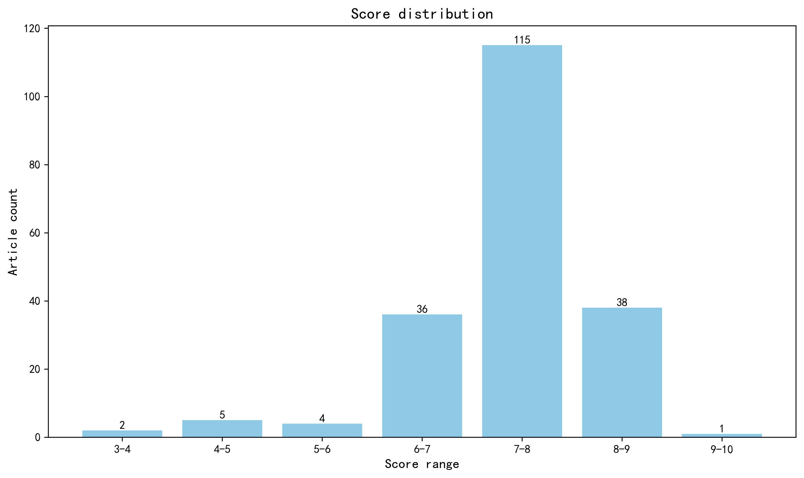

神经科学快讯·第016期 Science重磅：人类蓝/绿敏视锥视蛋白暗态结构解析，阐明日间视觉光谱调谐的分子机制 (2026-06-27)
📊 本周概览
历史摘要修订（2026-10-18）：第 016 期保留历史期号、日期与封面。本期 348 条记录中补回 126 条正式摘要，仅对这些条目使用 DeepSeek 重新评分和分级推荐，其余评估保持原值。修订后拟发布 182 篇，其中 5 篇仍缺充分摘要，已保留资料不足提示。来源、旧评分和推荐变更见 getfiles/abstract_history_2026-10-18.json。
- 头条推荐: 1 篇
- 深度解读: 105 篇
- 简要提及: 76 篇
- 跨界启发: 0 篇
- 已过滤: 166 篇
🌏 环球视野

地区与机构按本期原始发表记录、ROR 及城市地址规则分别统计；跨地区合作可重复计入，不作为完整机构排名。评分分布不含“域外局限”文章。
🌍 国家/地区分布 TOP 10
| 排名 | 国家 | 文章数量 |
|---|---|---|
| 1 | United States | 91 |
| 2 | United Kingdom | 30 |
| 3 | China | 28 |
| 4 | Germany | 23 |
| 5 | Canada | 19 |
| 6 | Italy | 16 |
| 7 | Japan | 14 |
| 8 | France | 10 |
| 9 | Australia | 10 |
| 10 | Switzerland | 8 |
地区计次合计: 359 次；取得地区信息 177/201 篇
🏢 研究机构 TOP 10
| 排名 | 机构 | 文章数量 |
|---|---|---|
| 1 | University College London | 9 |
| 2 | Stanford University | 8 |
| 3 | Harvard University | 8 |
| 4 | Icahn School of Medicine at Mount Sinai | 7 |
| 5 | University of Oxford | 7 |
| 6 | University of Toronto | 7 |
| 7 | Yale University | 7 |
| 8 | University of Pennsylvania | 6 |
| 9 | Massachusetts General Hospital | 6 |
| 10 | University of Zurich | 6 |
📊 评分分布
| 评分区间 | 文章数量 |
|---|---|
| 3-4 | 2 |
| 4-5 | 5 |
| 5-6 | 4 |
| 6-7 | 36 |
| 7-8 | 115 |
| 8-9 | 38 |
| 9-10 | 1 |
总计: 201 篇评分文章
📈 各领域文章分布
| 领域 | 深度解读 | 简要提及 | 总计 |
|---|---|---|---|
| 未知领域 | 0 | 46 | 46 |
| 临床与转化神经科学 | 17 | 10 | 27 |
| 分子与细胞神经科学 | 21 | 2 | 23 |
| 系统与环路神经科学 | 20 | 3 | 23 |
| 感觉与运动神经科学 | 16 | 4 | 20 |
| 认知神经科学 | 12 | 8 | 20 |
| 计算与理论神经科学 | 8 | 0 | 8 |
| 发育神经科学 | 6 | 2 | 8 |
| 方法学 | 4 | 1 | 5 |
| 社会与情感神经科学 | 1 | 0 | 1 |
合计: 深度解读 105 篇，简要提及 76 篇，共 181 篇
🥇 头条推荐（9.0+分）
中文标题: 揭示人类日间视觉的分子基础
作者: Sarah L Schmidt, Jakub Dostal, Saumik Sen et al.
单位: Center for Life Sciences, Paul Scherrer Institute, Villigen, Switzerland.; Department of Biology, ETH Zurich, Zurich, Switzerland.; Extreme Light Infrastructure ERIC, ELI Beamlines Facility, Dolní Břežany, Czech Republic. 等
研究地区: Switzerland, Czechia, Japan
关键词: 冷冻电镜, 飞秒光谱, 视蛋白, 人类, 视锥细胞, 光感受器
亮点: 结合冷冻电镜、飞秒光谱与模拟揭示人类昼光视觉中视色素的分子机制
核心优势: 首次解析人类蓝敏和绿敏视锥视蛋白暗态结构，阐明色觉差异的分子基础
研究局限: 仅涉及暗态结构，活化态和动力学细节仍需进一步研究；可能存在种属差异
目标读者: 视觉神经科学、结构生物学、GPCR信号转导、光遗传学研究者
推荐理由: 本研究通过冷冻电镜解析了人蓝敏和绿敏视锥细胞视蛋白的暗态结构，结合飞秒时间分辨光谱，首次揭示了不同视蛋白亚型光谱调谐和超快响应的分子基础。这些发现不仅阐明了日间视觉的分子机制，也为理解GPCR家族中配体结合与构象变化的动力学提供了新范式。对视觉神经科学和结构生物学领域均具有里程碑意义。
📚 精选文献（按领域分类）
临床与转化神经科学
中文标题: 工程化共生菌对肠-肝-脑轴代谢的调节
作者: Nikhil Aggarwal, Haosheng Shen, Li Ting Lee et al.
单位: Synthetic Biology Translational Research Programme, Yong Loo Lin School of Medicine, National University of Singapore, Singapore, Singapore; National Centre for Engineering Biology (NCEB), Singapore, Singapore.; NUS Synthetic Biology for Clinical and Technological Innovation (SynCTI), National University of Singapore, Singapore, Singapore 等
研究地区: Singapore, China
关键词: 基因工程, 微生物组, 肝性脑病, 代谢调控, 肠-肝-脑轴
亮点: 工程化益生菌同时调控氨和支链氨基酸，在肝性脑病模型中疗效优于临床药物并保护菌群多样性
核心优势: 首次通过单一工程菌平台同时纠正多种代谢紊乱，并整合多模型验证其行为改善和菌群保护效应
研究局限: 仅在两种HE模型中验证，缺乏长期安全性评估和向更大动物或人体的转化数据
目标读者: 微生物组工程、代谢疾病、神经胃肠病学和转化医学研究者
推荐理由: 该研究通过工程化乳酸菌菌株，特异性调节肝性脑病中紊乱的氨和支链氨基酸代谢，为基于肠-肝-脑轴的代谢性神经疾病提供了精准微生物干预策略。其双菌株系统分别实现氨同化与支链氨基酸合成，展示了合成生物学在神经代谢疾病治疗中的转化潜力。
中文标题: 肠道细菌代谢物咪唑丙酸加剧阿尔茨海默病病理
作者: Vaibhav Vemuganti, Jea Woo Kang, Federico E. Rey
关键词: 微生物组, 阿尔茨海默病, 代谢物, 宏基因组, 生物标志物, 临床队列
亮点: 多模态证据链揭示肠道细菌代谢物咪唑丙酸通过脑内皮损伤和tau磷酸化加剧阿尔茨海默病病理
核心优势: 首次在大型人类队列中结合遗传学、代谢组学、宏基因组学和因果动物模型，系统验证了肠道代谢物ImP在AD中的致病作用。
研究局限: 缺乏独立外部队列验证，机制仅部分在神经元和内皮中阐明，未深入小胶质细胞及免疫通路。
目标读者: 神经退行性疾病、微生物组-肠脑轴、代谢组学及神经血管生物学研究者
推荐理由: 本研究从大规模人类队列出发，结合血浆代谢组学和粪便宏基因组分析，揭示了肠道细菌代谢物咪唑丙酸（ImP）与阿尔茨海默病病理的显著关联。ImP水平升高与认知评分下降及AD生物标志物恶化相关，且纵向数据支持其因果作用。这一发现为理解肠脑轴在AD发病中的机制提供了新线索，并为开发基于微生物组的干预策略（如靶向ImP产生菌或代谢通路）奠定了基础。研究思路清晰，证据链完整，对AD早期预警和防治具有重要转化价值。
中文标题: 强迫症多维脑结构改变的脑区、功能与转录组解码
作者: Leonardo Cardoso Saraiva, João R Sato, Isaac Sebenius et al.
单位: Center of Mathematics, Computing and Cognition, Universidade Federal do ABC, Santo André, Brazil.; Department of Psychiatry, University of São Paulo, São Paulo, Brazil. leonardo.saraiva@yale.edu.; Department of Psychiatry, Yale University School of Medicine, New Haven, CT, USA. leonardo.saraiva@yale.edu. 等
研究地区: United States, Brazil, United Kingdom, The Netherlands, Spain, Japan, Canada, Portugal, India, Italy, South Korea, Sweden, Australia, China, South Africa
关键词: 强迫症, 脑形态学, 皮层曲率, 结构相似网络, 转录组, 神经影像
亮点: 九种皮层与四种皮层下形态表型联合解码OCD，将皮层曲率与结构相似性网络异常同细胞类型特异基因表达及术中原位RNA-seq联系起来
核心优势: 样本量极大（2255例OCD/2264例对照），整合多表型形态学、脑-行为预测建模、影像转录组学与功能神经外科术中RNA-seq，构建了从宏观脑形态到微观基因表达的多尺度证据链。
研究局限: 横断面设计难以确立因果；药物使用对体积改变的混杂影响虽被提及但未充分解耦；术中RNA-seq样本来源与部位有限，转录组关联仍属相关性推断；结构相似性网络表型为新提出，其可重复性与生物学解释有待独立验证。
目标读者: 精神疾病神经影像研究者、OCD临床与转化神经科学家、影像遗传学与计算系统生物学家
推荐理由: 该研究在迄今最大的强迫症神经影像样本（2255例患者/2264例对照）中，系统解析了9种皮层和4种皮层下形态学表型，包括新构建的皮层下结构相似网络。研究发现不同表型呈现空间分离的脑区改变模式，并将区域改变与功能网络和转录组数据关联，为强迫症的异质性神经机制提供了多维度、多尺度的整合框架。其方法学创新（多表型解码与结构相似网络）可推广至其他精神疾病研究。
AI-driven tripartite classification for optimizing wearable bioelectronics in depression management
深度解读 8.0/10中文标题: 人工智能驱动的三分法分类优化抑郁症管理中的可穿戴生物电子学
作者: Jakyoung Lee, Yeon-Mi Hong, Enji Kim et al.
单位: Department of Nano Biomedical Engineering (NanoBME), Advanced Science Institute, Yonsei University, Seoul 03722, Republic of Korea.; Department of Materials Science and Engineering, Yonsei University College of Engineering, Seoul 03722, Republic of Korea.; Center for Nanomedicine, Institute for Basic Science (IBS), Seoul 03722, Republic of Korea. 等
研究地区: South Korea
关键词: AI分类, 复杂系统理论, 早期预警信号, 可穿戴生物电子, 多模态生物标志物, 抑郁症
亮点: 结合软体神经探针和AI，实现抑郁症“前疾病状态”的实时识别与精准干预。
核心优势: 首次提出抑郁症可逆转的“前疾病状态”，并通过多模态可穿戴系统实现闭环管理。
研究局限: 仅基于动物模型或初步临床数据，缺乏大规模人体验证。
目标读者: 精神病学、神经工程、可穿戴生物电子学、计算精神病学研究者
推荐理由: 该研究突破传统健康-疾病二元分类，引入预疾病状态概念，通过复杂系统理论分析多模态生物标志物（电生理、行为、生物）的早期预警信号，实现抑郁症可逆阶段的识别。结合可穿戴设备进行连续监测，为精准干预时机选择提供了新范式，对情感障碍的预防性医疗具有重要转化价值。
SECmeres outperform extracellular vesicles as potential blood RNA biomarkers for Alzheimer’s disease
深度解读 7.9/10中文标题: SECmeres作为阿尔茨海默病血液RNA生物标志物优于细胞外囊泡
作者: Edgar Gonzalez-Kozlova, Swapnil Tichkule, Yohei Nose et al.
单位: Department of Immunology, Icahn School of Medicine at Mount Sinai, New York, NY, USA.; Department of Pathology, Molecular and Cell-Based Medicine, Icahn School of Medicine at Mount Sinai, New York, NY, USA.; Department of Psychiatry, Icahn School of Medicine at Mount Sinai, New York, NY, USA. 等
研究地区: United States
关键词: 阿尔茨海默病, 血液生物标志物, 细胞外囊泡, RNA, 小细胞外颗粒, 人类
亮点: 血中<50nm的SECmeres（而非经典小EV）富集脑内皮/BBB来源RNA，作为AD液体活检标志物显著优于小EV。
核心优势: 发现并表征一类缺乏经典EV标志物、富集脑特异性标志物的亚50nm细胞外纳米颗粒（SECmeres），并通过单细胞RNAseq解卷积揭示其BBB内皮来源，挑战了小EV作为主要标志物载体的主流观点。
研究局限: 样本量与临床队列细节在摘要中未充分披露，缺乏前瞻性盲法大样本验证，诊断性能的泛化性与可重复性尚待确认；SECmeres的分离纯度与颗粒本质（是否为独立实体或分离伪影）仍需独立方法学验证。
目标读者: 阿尔茨海默病生物标志物、细胞外囊泡/颗粒生物学、液体活检与血脑屏障研究者
推荐理由: 该研究在人类脑组织和血液中鉴定出一类小于50 nm、缺乏经典小细胞外囊泡/外泌体/外泌颗粒标志物但富集脑特异性标志物的新型细胞外纳米颗粒（SECmeres），并证明其携带的RNA在区分阿尔茨海默病患者与对照方面优于常规细胞外囊泡。这一发现不仅重新界定了循环系统中脑源性RNA的载体来源，也为基于血液的无创AD诊断提供了更优的分子靶标和分析框架。对于关注神经退行性疾病生物标志物转化和细胞外囊泡方法学的读者，该工作具有重要的参考价值。
中文标题: 负载自身抗原的聚合物微粒与B细胞结合并促进小鼠实验性自身免疫性脑脊髓炎模型中的耐受性抗原呈递
作者: Nicole Rose Lukesh, Brian G Barbery, Kierstin A Clark et al.
单位: Division of Pharmacoengineering & Molecular Pharmaceutics, Eshelman School of Pharmacy, UNC, Chapel Hill, NC, USA.; Lineberger Comprehensive Cancer Center, University of North Carolina, Chapel Hill, NC, USA.; Department of Biomedical Engineering, NC State/UNC, Chapel Hill, NC, USA. 等
研究地区: United States
关键词: 微粒技术, 抗原特异性免疫耐受, B细胞靶向, 多发性硬化, 实验性自身免疫性脑脊髓炎, 小鼠
亮点: 利用抗原负载微粒靶向B细胞实现抗原特异性免疫耐受，在小鼠MS模型中达到前所未有的治疗效果
核心优势: 首次证明靶向B细胞的微粒递送抗原可在EAE模型中诱导强效免疫耐受，同时保留抗病毒免疫能力
研究局限: 仅在单一小鼠模型（EAE）验证，使用单一抗原肽（MOG35-55），且未在更大规模或更临床前模型中测试
目标读者: 自身免疫疾病、免疫工程、多发性硬化、B细胞生物学和转化医学研究者
推荐理由: 本研究提出一种新型抗原特异性免疫耐受策略，通过抗原负载的缩醛化葡聚糖微粒靶向B细胞，在EAE小鼠模型中诱导IL-10分泌并抑制自身免疫反应。该工作直接针对MS中B细胞失调这一关键病理环节，避免了传统免疫抑制的广谱副作用，为开发不牺牲保护性免疫的抗原特异性疗法提供了新的设计思路和机制证据。
中文标题: 携带常见m.3243A>G突变的人类类器官中线粒体DNA异质性驱动皮层神经元紊乱
作者: Denisa Hathazi, Camilla Lyons, Daniel Lagos et al.
单位: , , ,; Department of Clinical Neurosciences, John van Geest Centre for Brain Repair, , , ,; Cambridge Center for Frontotemporal Dementia and Related Disorders, , , 等
关键词: 线粒体DNA异质性, 类脑器官, 人类iPSC, 皮层神经元, MELAS, 疾病模型
亮点: 人类类器官模型揭示线粒体DNA异质性如何选择性损伤皮层深层投射神经元
核心优势: 首次在人类iPSC衍生皮质类器官中模拟MELAS突变，结合单细胞转录组揭示异质性依赖的神经元亚型特异性易损性
研究局限: 类器官模型的生理相关性有限，缺乏血管化和免疫环境；结果需在体内模型或患者中进一步验证
目标读者: 线粒体疾病、神经发育、干细胞生物学和神经病理学研究者
推荐理由: 该研究利用人类iPSC来源的脑类器官，首次在3D人脑模型中系统解析了线粒体DNA异质性（m.3243A>G突变）对皮层神经元发育和功能的影响，揭示了氧化磷酸化缺陷、钙信号紊乱和网络活动异常等关键机制。由于缺乏合适的动物模型，该工作为MELAS综合征的病理机制研究和潜在治疗靶点提供了重要的体外平台，具有很高的转化价值。
中文标题: 右侧杏仁核消融减少创伤后应激障碍患者的适应不良性负面解释偏倚和症状
作者: Tao Xie, Sanne J H van Rooij, Sai Sun et al.
单位: Department of Psychiatry and Behavioral Sciences, Emory University School of Medicine, Atlanta, GA, USA.; National Center for Adaptive Neurotechnologies, St. Louis, MO, USA.; Department of Neurological Surgery, Washington University School of Medicine, St. Louis, MO, USA. 等
研究地区: United States, Japan
关键词: 人类, 杏仁核, 射频消融, PTSD, 负性解释偏差, SEEG
亮点: 首次在人类中建立右侧杏仁核与PTSD消极解释偏倚的因果关系，并展示消融治疗潜力
核心优势: 前瞻性单病例设计结合颅内电生理记录，提供直接因果证据
研究局限: 单病例(n=1)研究，缺乏对照组，结果普适性有限
目标读者: 情绪神经科学、PTSD临床研究者、神经外科医生、认知科学研究者
推荐理由: 本研究通过一例难治性癫痫合并PTSD患者的立体脑电图引导下右侧杏仁核射频消融术，首次提供了杏仁核在人类负性解释偏倚中因果作用的直接证据。消融后患者对模糊刺激的威胁性解读显著减少，同时PTSD症状（特别是再体验和回避）得到持续改善。该工作不仅深化了杏仁核在认知扭曲中作用的理解，也为针对特定脑区的精准神经外科干预治疗精神疾病提供了可行性示范，对临床转化神经科学具有重要价值。
中文标题: 重新审视颞叶癫痫中的皮层肥厚
作者: Hélène Cossette-Roberge, Binh Thanh Nguyen, Fatemeh Fadaie et al.
单位: Department of Medical Imaging and Radiation Sciences, Centre de Recherche du CHUS, Université de Sherbrooke, Sherbrooke, Québec J1H 5N4, Canada.; Department of Neurology and Neurosurgery, Montreal Neurological Institute and Hospital, McGill University, Montréal, Québec H3A 2B4, Canada.; Department of Medicine, Université de Sherbrooke, Sherbrooke, Québec J1H 5N4, Canada. 等
研究地区: Canada, United States, United Kingdom
关键词: 颞叶癫痫, 皮层增厚, 神经影像, 海马硬化, 可塑性, 人类
亮点: 重新审视颞叶癫痫中的皮层肥厚，将癫痫从单纯萎缩性疾病重构为双向脑重塑障碍
核心优势: 系统整合了表面、体积与体素三种MRI形态学方法在皮层肥厚检出上的差异，并将结构性重塑、胶质炎症、代偿可塑性与网络效应等多重机制纳入统一批判框架。
研究局限: 作为叙事性综述，未采用系统检索与偏倚评估，文献纳入可能受选择性影响；对皮层肥厚生物学效度与临床相关性的判断仍以推测为主，缺乏定量meta分析支撑。
目标读者: 癫痫与神经影像研究者、临床神经病学家、以及关注脑结构可塑性与疾病网络机制的计算与系统神经科学家
推荐理由: 该综述挑战了癫痫结构改变仅为萎缩的传统观点，系统整合了颞叶癫痫中皮层增厚的影像学证据，并将其置于神经发育、可塑性与网络重构的框架下。对临床神经科学家而言，这提示结构MRI解读需超越“萎缩即病理”的单一维度，并为理解癫痫致痫网络的可塑性改变提供了新视角。
中文标题: 结合尸检和神经影像测量的脑淀粉样变性以加速基因组发现
作者: Ting-Chen Wang, Derek B Archer, Muhammad Ali et al.
单位: Vanderbilt Memory and Alzheimer's Center, Vanderbilt Health, Nashville, TN, 37203, USA.; Vanderbilt Genetics Institute, Vanderbilt Health, Nashville, TN, 37232, USA.; Department of Psychiatry, Washington University, St. Louis, MO, 63110, USA. 等
研究地区: United States, Australia
关键词: 阿尔茨海默病, 淀粉样蛋白, GWAS, PET成像, 死后病理, 遗传变异
亮点: 迄今规模最大的脑淀粉样变GWAS，首次将生前淀粉样PET与死后组织病理学指标统一用于遗传发现，并量化两种模态间的遗传协方差。
核心优势: 多模态表型整合策略（GMM确定PET截断值+CERAD分期）显著扩大样本量至13,555人，不仅重复验证BIN1、CR1、APOE，还鉴定出chr17 rs35635959-TUBG2这一新位点，并通过eQTL共定位与单核表达分析提供功能线索。
研究局限: 新位点仅达全基因组显著边缘（P=1.47×10⁻⁸），缺乏独立队列重复验证；遗传协方差仅0.17且主要受APOE驱动，提示两种模态的共享遗传结构有限；欧洲血统限制跨族群推广；横断面设计无法确立因果方向。
目标读者: 阿尔茨海默病遗传学、神经影像基因组学、淀粉样蛋白生物学及计算神经科学研究者
推荐理由: 该研究整合死后病理与淀粉样蛋白PET两种测量，开展了迄今最大规模的脑淀粉样变性GWAS，显著提升了遗传信号发现能力。其方法学框架为利用多模态内表型加速神经退行性疾病遗传发现提供了范例，并揭示了AD早期病理的遗传基础，对早期诊断和靶向干预具有转化意义。
中文标题: 具有电压依赖性突触功能的计算框架解释功能性电刺激疗法中LTP主导的可塑性
作者: Howard, M. C., Masani, K., Lankarany, M.
单位: Department of Physiology, University of Toronto, Toronto, ON, Canada
研究地区: Canada
关键词: 计算建模, 功能性电刺激, 突触可塑性, LTP, 神经康复, 电压依赖性突触
亮点: 电压依赖性可塑性规则解释了FES疗法为何可靠诱导LTP而非LTD
核心优势: 提供了一个新颖的计算框架，整合电压依赖性突触可塑性和多尖峰相互作用，系统揭示了FES诱导LTP主导可塑性的机制。
研究局限: 研究完全基于计算模拟，缺乏体内或体外实验验证，且模型参数可能无法完全捕捉生物复杂性。
目标读者: 计算神经科学、神经康复、突触可塑性研究者
推荐理由: 该研究构建了一个电压依赖性突触功能的计算框架，成功解释了功能性电刺激疗法中LTP占主导的突触可塑性机制。这一模型将临床康复效果与突触水平的Hebbian学习规则联系起来，为优化FES参数设计提供了理论依据，对理解神经损伤后运动功能恢复的细胞机制具有重要价值。
中文标题: 急性芬太尼毒性：从阿片诱导到缺氧介导的病理生理学
作者: Tristan Lewis, Annick Judenherc-Haouzi, Amanda Reinhardt et al.
单位: Department of Biomedical Engineering, Cleveland Clinic Research, Cleveland, Ohio, United States.; Department of Cardiovascular Medicine, Cleveland Clinic, Cleveland, Ohio, United States.; Department of Neurosciences, Cleveland Clinic Research, Cleveland, Ohio, United States. 等
研究地区: United States
关键词: 芬太尼, 呼吸抑制, 缺氧, 阿片毒性, 病理生理学
亮点: 挑战芬太尼毒性经典观点，提出缺氧介导新机制
核心优势: 整合生理与病理生理视角，推动对芬太尼毒性机制的理解
研究局限: 缺乏系统综述的广度，证据来源有限
目标读者: 神经生理学家、毒理学家、临床医生
推荐理由: 本研究系统解析了芬太尼急性毒性中呼吸抑制与低氧介导病理的交互作用，突破了传统仅关注阿片类呼吸抑制的局限，揭示了低氧血症继发的多器官损伤机制。对神经科学研究者而言，该工作为理解阿片类药物致死机制提供了整合性框架，并提示未来干预策略应同时靶向阿片受体和低氧通路。
中文标题: tau PET与淀粉样蛋白PET在认知症状患者中的诊断影响
作者: Jia-Wei Xin, Zi-Yi Wang, Yu Guo et al.
单位: Department of Neurology, Fujian Medical University Union Hospital, Fujian Key Laboratory of Molecular Neurology and Institute of Neuroscience, Fujian Medical University, Fuzhou 350001, China.; Department of Neurology and National Center for Neurological Disorders, Huashan Hospital, State Key Laboratory of Medical Neurobiology and MOE Frontiers Center for Brain Science, Shanghai Medical College, Fudan University, Shanghai 200040, China.; Department of Nuclear Medicine and PET Center, Huashan Hospital, Fudan University, Xuhui District, Shanghai 200040, China. 等
研究地区: China, Taiwan, United Kingdom
关键词: tau PET, amyloid PET, 阿尔茨海默病, 诊断准确性, 认知障碍, 生物标志物
亮点: 在千例记忆门诊队列中，头对头比较tau PET与amyloid PET的诊断再分类能力，强调tau PET在非AD tauopathy识别和复杂病例中的增量价值。
核心优势: 大样本连续队列（n=1008）设计贴近真实记忆门诊场景，同时评估诊断再分类率、准确性与诊断信心变化，多维度量化tau PET相对于amyloid PET的增量信息，结果对临床路径有直接指导意义。
研究局限: 缺乏尸检或长期随访的病理学金标准验证，诊断准确性依赖临床综合诊断；AD诊断高敏感高特异可能受入组谱偏倚影响；未报告tau PET示踪剂类型、判读一致性及成本效益，非AD亚组再分类率的临床意义仍需外部验证。
目标读者: 记忆门诊临床神经科医师、分子神经影像研究者、阿尔茨海默病与神经退行性疾病生物标志物领域的研究人员
推荐理由: 该研究基于1008例连续认知障碍患者的头对头比较，系统评估了tau PET与amyloid PET在记忆门诊中的诊断效能。tau PET对AD诊断展现出高敏感性（97.8%）和特异性（95.4%），并显著提升诊断信心和重分类率。这一大样本证据支持tau PET作为AD诊断的优选生物标志物，对临床实践和抗淀粉样蛋白治疗的患者选择具有重要指导意义。
Relative frequencies of muscle specific kinase antibody myasthenia in 46 centres worldwide.
深度解读 7.3/10中文标题: 全球46个中心肌肉特异性激酶抗体重症肌无力的相对频率
作者: Angela Vincent, Rehab Badi, Nina Barisic et al.
单位: University of Zagreb Medical School, University Hospital Zagreb, 10000 Zagreb.; College of Medicine, King Khalid University, Abha, 61421, Saudi Arabia.; Nuffield Department of Clinical Neurosciences, University of Oxford, OX3 9DU, UK. 等
研究地区: United Kingdom, Saudi Arabia, Croatia, France, Italy, Israel, Canada, Sri Lanka, Taiwan, Barbados, Austria, Spain, Türkiye, Norway, South Africa, Denmark, Cyprus, Poland, Japan, United States, Germany, Iran, Australia, Philippines, Argentina, India, The Netherlands, Thailand
关键词: 重症肌无力, MuSK抗体, 血清学诊断, 乙酰胆碱受体, 国际多中心, SNMG
亮点: 全球46中心数据显示MuSK抗体在乙酰胆碱受体抗体阴性重症肌无力中占约31%，并首次揭示北半球纬度梯度分布特征
核心优势: 跨6大洲35个中心的血清学筛查数据规模较大，提出了MuSK抗体频率与纬度相关的意外地理模式，并联系到IgG4介导的神经系统疾病谱
研究局限: 研究基于转诊血清样本，存在中心选择偏倚和检测时间跨度长（2002年起）导致的一致性局限；未进行环境或遗传因素的多变量分析，纬度梯度假设缺乏机制验证
目标读者: 神经免疫学、重症肌无力临床研究者、自身免疫性疾病流行病学及IgG4相关疾病研究者
推荐理由: 该研究基于全球46个中心的血清学数据，系统评估了MuSK抗体在乙酰胆碱受体抗体阴性重症肌无力（SNMG）中的相对频率，发现30.8%的SNMG患者存在MuSK抗体，而在AChR抗体阳性患者及眼肌型患者中未检出。这一大样本跨国分析为MuSK抗体检测的临床指征提供了重要流行病学依据，对SNMG的精准诊断与靶向治疗决策具有直接转化价值。
中文标题: 从发现到转化：为《神经生理学杂志》规划路线
输入资料不足：原始摘要未取得，当前评估仅供初筛，推送前需核对原文。
作者: Carlos B Mantilla
单位: Department of Physiology & Biomedical Engineering, Mayo Clinic, Rochester, Minnesota, United States.; Department of Anesthesiology & Perioperative Medicine, Mayo Clinic, Rochester, Minnesota, United States.
研究地区: United States
关键词: 转化研究, 神经生理学, 期刊方向, 临床神经科学, 基础发现
亮点: 为神经生理学期刊绘制从基础发现到临床转化的路线图
核心优势: 前瞻性地为期刊定调，强调转化神经科学的重要性，具有指导性
研究局限: 缺乏具体数据和实验支持，属于观点性文章，创新性有限
目标读者: 神经生理学研究者、转化医学工作者、期刊编辑和决策者
推荐理由: 该文为《神经生理学杂志》的未来发展绘制了清晰路线图，强调从基础神经生理发现到临床转化的关键路径。对于关注神经科学临床应用的读者，本文提供了如何将实验室成果推向临床实践的思考和策略，具有重要的指引价值。
中文标题: ALS患者上运动神经元兴奋性变化的直接证据
作者: Vincenzo Di Lazzaro, Giovanni Pellegrino, Daniel T Corp et al.
单位: Unit of Neurology, Neurophysiology, Neurobiology, Department of Medicine, Università Campus Bio-Medico di Roma, Rome, Italy.; Department of Clinical Neurological Sciences, Schulich School of Medicine and Dentistry, Western University, London, Ontario, Canada.; Fondazione Policlinico Universitario Campus Bio-Medico, Rome, Italy. 等
研究地区: Italy, Canada, Australia
关键词: ALS, 运动神经元, 过度兴奋, 直接记录, 电生理, 人类
亮点: 直接记录皮质脊髓输出揭示ALS上运动神经元高兴奋性和抑制降低的直接证据
核心优势: 独特机会获得直接神经生理记录，验证了长期推测的上运动神经元兴奋性改变
研究局限: 单病例研究，样本量极小，无统计检验，结论的外推性有限
目标读者: ALS研究、运动神经元疾病、经颅磁刺激（TMS）研究者和临床神经生理学家
推荐理由: 该研究通过罕见的机会直接记录ALS患者的上运动神经元，证实了其兴奋性改变，突破了传统TMS研究无法区分上下运动神经元贡献的局限。为理解ALS的病理生理机制提供了直接的细胞水平证据，对开发针对上运动神经元过度兴奋的治疗策略具有重要意义。
Aggression in epilepsy and sleep: from historical accounts to brain networks and human behaviour.
深度解读 7.1/10中文标题: 癫痫与睡眠中的攻击行为：从历史记载到脑网络与人类行为
作者: Flavio Villani, Pietro Mattioli, Fabrice Bartolomei et al.
单位: Department of Neuroscience, Rehabilitation, Ophthalmology, Genetics, Maternal and Child Health (DINOGMI), University of Genoa, 16126, Genoa, Italy.; Aix Marseille University, INSERM, INS, Int Neurosci Syst, 13005, Marseille, France.; Division of Clinical Neurophysiology and Epilepsy Center, IRCCS AOM - Ospedale Policlinico San Martino, 16132, Genova, Italy. 等
研究地区: Italy, France, Hungary, United Kingdom
关键词: 癫痫, 攻击行为, 睡眠, 脑网络, 历史综述, 人类行为
亮点: 通过颅内脑电等证据，系统梳理癫痫与睡眠相关障碍中攻击行为的神经网络、临床鉴别与法医学影响，并追溯“癫痫人格”污名的历史根源。
核心优势: 将癫痫围发作期攻击行为与睡眠相关异态睡眠中的暴力行为进行机制对比，整合颅内脑电证据，并明确提示误诊风险，视角在综述中较为独特。
研究局限: 采用叙述性综述而非系统评价，文献检索与纳入标准主观性较强；原创性数据有限，法医学部分多依赖作者经验，证据等级偏低。
目标读者: 癫痫病学家、睡眠医学与行为神经病学临床医生、神经影像与颅内脑电研究者，以及关注污名与法医学议题的神经伦理学者
推荐理由: 这篇叙述性综述系统梳理了癫痫与攻击行为之间从19世纪医学理论到现代脑网络和人类行为研究的演变，挑战了长期存在的污名化观念。文章整合历史学、临床精神病学、神经影像学和环路层面的证据，强调癫痫相关攻击行为的异质性和情境依赖性，并指出睡眠与癫痫交互在其中的潜在作用。对于关注临床转化和系统神经科学的读者，本文提供了从历史误区到网络机制的重要视角，有助于推动更精准的临床评估和去污名化。
中文标题: 强迫症大鼠模型中的行为与神经动力学
作者: Hanzlik, A. F., Szczurowska, E. K., Rydzykova, T. et al.
单位: National Institute of Mental Health
摘要: 揭示强迫症模型中行为刻板与海马-前扣带回环路theta节律协调稳定性增加之间的平行动态
优势: 多尺度（行为、单细胞、细胞对、LFP）同时记录和分析，展示了theta节律稳定性与行为重复性的时间关联 局限: 基于单一大鼠模型（quinpirole），未直接测量因果关系，且样本量未提及，实验结果向人类的转化性需谨慎 受众: 计算神经科学、系统神经科学、精神疾病模型研究者、OCD机制研究者
中文标题: 利用人类海马体建模自身免疫性脑炎
输入资料不足：原始摘要未取得，当前评估仅供初筛，推送前需核对原文。
作者: Claire D Kim, Shuai Wang, Dimitris G Placantonakis
单位: Department of Neurosurgery, New York University Grossman School of Medicine, New York, NY 10016.; Department of Cell Biology, New York University Grossman School of Medicine, New York, NY 10016.; Neuroscience Institute, New York University Grossman School of Medicine, New York, NY 10016. 等
研究地区: United States
摘要: 利用人海马组织模型研究自身免疫性脑炎的病理机制
优势: 使用人源组织模型，更贴近临床病理生理过程 局限: 缺乏具体实验细节，模型有效性及泛化性待验证 受众: 神经免疫学、神经病理学、转化医学研究者
中文标题: 低强度经颅超声刺激改善缺血性卒中小鼠运动行为并调节皮层功能网络连接
作者: Shaopo Wan, Qianqian Wang, Yanan Wang et al.
单位: Department of Pharmacology, Hebei Medical University, Shijiazhuang 050017, Hebei, China.; School of Electrical Engineering, Yanshan University, Qinhuangdao 066004, Hebei, China.; Key Laboratory of Intelligent Rehabilitation and Neuromodulation of Hebei Province, Yanshan University, Qinhuangdao 066004, Hebei, China. 等
研究地区: China
摘要: 自由行走小鼠全脑皮层LFP记录揭示低强度超声经恢复皮层功能网络连接改善卒中后运动功能
优势: 在自由行走状态下同步采集全脑皮层LFP与步态行为，并将网络拓扑指标与行为改善直接关联，为该领域提供了较完整的多模态因果链条 局限: 结论基于小鼠模型与相关性分析，未进行网络调控的因果干预（如光遗传/化学遗传验证），且仅用雄性C57BL/6、单卒中模型，超声参数与网络重塑的剂量-效应关系未系统探讨 受众: 神经调控、卒中康复、系统神经科学与脑网络分析研究者
中文标题: 神经调控策略克服脑性瘫痪的多种不可避免障碍
作者: Susan D Hastings, Hui Zhong, Ken Kijima et al.
单位: Department of Orthopedic Surgery, Kyushu University, Fukuoka, Japan.; Susan Hastings Pediatric Physical Therapy, San Jose, California, United States.; Rancho Research Institute, Rancho Los Amigos National Rehabilitation Center, Downey, California, United States. 等
研究地区: United States, Japan, Russia
摘要: 单病例研究挑战脑瘫传统观念，揭示非侵入性神经调控可引发多系统适应性改善。
优势: 首次系统性展示经皮脊髓神经调控结合本体感觉训练引发跨运动、自主、认知等多领域渐进式可逆改善。 局限: 单病例设计，无对照组，缺乏盲法和量化指标，证据强度有限。 受众: 脑瘫康复、神经调控、神经可塑性、发育神经科学研究者
中文标题: fMRI BOLD周转率（TBOLD）作为神经炎症的代理指标
作者: Peka Christova, Lisa M James, Apostolos P Georgopoulos
单位: The Neuroimaging Research Group, Brain Sciences Center, Department of Veterans Affairs Health Care System, Minneapolis, Minnesota, United States.; Department of Psychiatry and Behavioral Sciences, University of Minnesota Medical School, Minneapolis, Minnesota, United States.; Department of Neuroscience, University of Minnesota Medical School, Minneapolis, Minnesota, United States. 等
研究地区: United States
摘要: 提出TBOLD作为神经炎症的潜在无创影像指标，基于与CRP和IL-6的显著关联
优势: 首次在大样本中系统验证了TBOLD与系统性炎症标志物的正相关，为神经炎症的影像学评估提供了新方向 局限: 仅基于相关性分析，缺乏直接神经炎症标志物（如PET或CSF指标）的验证，因果推断受限 受众: 神经影像学、神经免疫学、老化研究和转化神经科学研究者
Graph-based analysis of inflammatory profiles in New Onset Refractory Status Epilepticus (NORSE)
简要提及 6.2/10中文标题: 基于图分析的新发难治性癫痫持续状态（NORSE）炎症特征研究
作者: Linon Denis, Martin Guillemaud, Vincent Navarro et al.
摘要: 图聚类分析cNORSE炎症谱，助力个性化免疫治疗
优势: 首次将图聚类方法应用于cNORSE细胞因子谱分析，并开发临床决策支持工具 局限: 样本量小，缺乏独立验证队列，方法学创新有限 受众: 神经免疫学、癫痫病学、临床生物信息学研究者
High-Frequency Spatial Feature Fusion with 3D CNN for Early Stage Schizophrenia Classification
简要提及 5.7/10中文标题: 基于3D CNN的高频空间特征融合用于早期精神分裂症分类
作者: Akhtar, K., Mahadevan, A.
单位: Georgia State University
研究地区: United States
摘要: 高频空间特征与Laplacian核初始化协同提升精神分裂症分类性能
优势: 巧妙结合HiFi高通滤波与Laplacian核初始化，在小模型上实现分类提升 局限: 仅使用单一数据集，准确率不高，且缺乏独立验证与临床相关性分析 受众: 计算神经科学、精神疾病影像学研究者
Reply: Cerebrovascular contributions to the 'vulnerable' medial temporal lobe T-N phenotype.
简要提及 4.8/10中文标题: 回复：脑血管对“脆弱”内侧颞叶T-N表型的贡献
输入资料不足：原始摘要未取得，当前评估仅供初筛，推送前需核对原文。
作者: Sandhitsu R Das, Xueying Lyu, David A Wolk
单位: Department of Bioengineering, University of Pennsylvania, Philadelphia, PA 19104, USA.; Department of Neurology, University of Pennsylvania, Philadelphia, PA 19104, USA.
研究地区: United States
摘要: 对脑小血管病在颞叶内侧T-N表型中角色的观点性回应
优势: 聚焦于神经血管耦合的特定假说，提供了有针对性的批判性讨论 局限: 作为回复文章，内容较短，缺乏系统性综述的广度和深度 受众: 研究阿尔茨海默病、小血管病和颞叶内侧退化的神经科学家和临床医生
中文标题: 一项关于经颅光生物调节疗法干预失眠大学生的初步研究
作者: Jiangshan He, Lianghua Zhang, Dan Liang et al.
资深研究者: Dan Liang (h指数=25); Lei Zheng (h指数=70)
摘要: 首次尝试揭示经颅光生物调节对失眠大学生神经机制的初步影响
优势: 聚焦失眠的神经机制（前额叶低激活）与tPBM疗法的关联，提出潜在的下行调控通路 局限: pilot研究，样本量小，缺乏随机对照和多模态神经影像验证，发表于预印本平台 受众: 睡眠障碍、神经调控、大学生心理健康领域的研究者
中文标题: 基于机器学习的阿尔茨海默病靶点抑制剂预测建模
作者: Nalin Arora, Mehak Gopal
单位: Affiliation: 2021475; Affiliation: 2021478
摘要: 利用机器学习预测阿尔茨海默病靶点抑制剂，AUC-ROC均超0.9
优势: 针对BACE-1、AChE、GSK-3β三个靶点建立高精度预测模型 局限: 缺乏湿实验验证，数据来源和化学多样性不明确 受众: 计算药物发现、阿尔茨海默病研究者
分子与细胞神经科学
中文标题: DNA修复驱动顺铂诱导的神经元死亡
作者: William J Nathan, Chuanyuan Chen, Rosy Sakr et al.
单位: Laboratory of Genome Integrity, National Cancer Institute, NIH, Bethesda, MD 20892, USA.; Institute of Biological Sciences, Federal University of Juiz de Fora, Juiz de Fora, 36036-900 MG, Brazil.; Section on the Development of Neurodegeneration, Eunice Kennedy Shriver National Institute of Child Health and Human Development, NIH, Bethesda, MD 20892, USA 等
研究地区: United States, Brazil, The Netherlands, Sweden, United Kingdom
关键词: DNA修复, 顺铂, 神经元死亡, 核苷酸切除修复, dNTP池, 神经毒性
亮点: 揭示化疗药物顺铂诱导神经元死亡的全新机制：核苷酸切除修复因dNTP匮乏反而促进死亡
核心优势: 首次发现NER在神经元中发挥致死作用，并确定dNTP耗竭为关键脆弱性，提供潜在治疗靶点
研究局限: 主要基于小鼠模型和体外实验，人类神经元验证有限；长期核苷酸补充的安全性未评估
目标读者: 神经科学家、癌症生物学家、DNA修复研究者、药理学和毒理学研究者
推荐理由: 该研究颠覆了核苷酸切除修复（NER）在神经元中的传统认知：在分裂细胞中起保护作用的NER，因神经元低dNTP池而成为顺铂神经毒性的关键驱动力。这一发现解释了铂类药物选择性损伤有丝分裂后组织的机制，并为开发靶向NR2F1等表观调控因子的神经保护策略提供了分子基础。对理解DNA损伤应答的细胞类型特异性具有重要价值。
Single-cell multiomics of neuron activation reveals context-specific genetics of brain disorders
深度解读 8.2/10中文标题: 神经元激活的单细胞多组学揭示脑疾病背景依赖性遗传学
作者: Lifan Liang, Siwei Zhang, Zicheng Wang et al.
单位: Department of Human Genetics, The University of Chicago, Chicago, IL, USA.; Center for Psychiatric Genetics, Endeavor Health Research Institute, Evanston, IL, USA.; Graduate Group in Genomics and Computational Biology, Perelman School of Medicine, University of Pennsylvania, Philadelphia, PA, USA. 等
研究地区: United States, Jersey
关键词: 单细胞多组学, 人类iPSC, 神经元激活, 染色质可及性, eQTL, 神经精神疾病
亮点: 大规模单细胞多组学揭示神经元激活依赖性遗传效应为脑疾病提供新见解
核心优势: 整合100个供体的单细胞转录组和表观基因组，系统鉴定活动依赖性遗传变异及其对神经精神疾病遗传度的贡献
研究局限: 基于体外iPS细胞模型，体内验证尚不充分；发现的关联缺乏因果关系实验证据
目标读者: 神经遗传学、功能基因组学、神经精神疾病研究者
推荐理由: 该研究通过大规模单细胞多组学分析，在神经元激活的特定上下文下揭示了神经精神疾病相关遗传变异的调控效应，弥补了传统静态遗传研究的不足。其发现的活动依赖性eQTL和染色质可及性QTL为理解脑疾病的风险机制提供了新维度，对分子和系统神经科学均有重要参考价值。
中文标题: 小鼠模型中自噬的可逆抑制揭示神经元恢复力
作者: Tomoya Eguchi, Manabu Abe, Takuya Tomita et al.
单位: Department of Cellular Neurobiology, Brain Research Institute, Niigata University, Niigata, Japan.; Department of Biochemistry and Molecular Biology, Graduate School and Faculty of Medicine, The University of Tokyo, Tokyo, Japan.; Department of Animal Model Development, Brain Research Institute, Niigata University, Niigata, Japan. 等
研究地区: Japan
关键词: 自噬, 小鼠, 可逆调控, 蛋白组学, 转录组学, 神经元
亮点: 揭示神经元在自噬抑制后功能与质量可逆恢复的韧性机制
核心优势: 建立可逆调控自噬的小鼠模型，直接证明神经元功能损伤的可恢复性
研究局限: 仅在小鼠模型验证，且自噬抑制持续时间可能影响可逆性；临床转化尚远
目标读者: 神经退行性疾病、自噬生物学、细胞质量控制领域的研究者
推荐理由: 该研究通过构建可逆调控自噬的小鼠模型，揭示了神经元在自噬抑制后的蛋白组和转录组变化、包涵体积累及轴突肿胀均可被逆转。这一发现挑战了神经元损伤不可逆的传统观点，为神经退行性疾病的治疗提供了新的时间窗口和干预策略，强调了细胞自主质量控制系统在神经元可塑性中的关键作用。
中文标题: 终末施万细胞调节小鼠突触前囊泡稳态但不影响神经肌肉接头完整性
作者: Kim, H., Kim, S.-Y., Yoo, K. et al.
单位: Seoul National University
研究地区: South Korea
关键词: 单细胞转录组, CreERT2小鼠模型, 终末施万细胞, 神经肌肉接头, 突触囊泡稳态, 遗传学工具
亮点: 首次鉴定tSC特异性标记Col20a1并建立遗传工具，揭示tSC在突触前囊泡稳态中的精确调控作用
核心优势: 通过单细胞转录组发现并验证了Col20a1作为tSC专属标记，开发了特异性遗传模型，结合多模态实验明确区分了tSC对突触结构与功能的不同贡献。
研究局限: 研究仅在出生后成熟窗口期进行，未探索发育早期或老年阶段的作用；且缺乏tSC缺失后回补实验来验证其充分性。
目标读者: 神经肌肉生物学、突触传递、胶质细胞生物学研究人员
推荐理由: 该研究通过单细胞转录组学鉴定出Col20a1作为终末施万细胞(tSC)的高度特异性标记，并构建了Col20a1-CreERT2敲入小鼠模型，首次实现了在体内对tSC的精准遗传操作。利用该工具，发现tSC特异性调控突触前囊泡稳态，但对神经肌肉接头结构完整性非必需。这一工作不仅揭示了tSC在突触传递中的新功能，也为神经胶质细胞研究提供了关键的遗传工具，对理解突触维持和神经肌肉疾病的机制具有重要意义。
中文标题: 肌萎缩侧索硬化中通过翻译缺陷和应激颗粒导致STMN2蛋白耗竭
作者: Brittany C S Ellis, Anna Sanchez Avila, Wan-Ping Huang et al.
单位: Department of Neurology, The Sean M. Healey and AMG Center for ALS at Mass General, Massachusetts General Hospital, Harvard Medical School, Boston, MA 02114, USA.; Sheffield Institute for Translational Neuroscience (SITraN) and Neuroscience Institute, University of Sheffield, Sheffield, S10 2HQ, UK.; Biomolecular Sciences Research Centre, School of Biosciences and Chemistry, Sheffield Hallam University, Sheffield, S1 1WB, UK.
研究地区: United Kingdom, United States
关键词: ALS, STMN2, TDP-43, 应激颗粒, 翻译调控, 单分子成像
亮点: 揭示不依赖TDP-43功能缺失的STMN2耗竭新机制：翻译抑制与应激颗粒共同驱动ALS神经元脆弱性
核心优势: 多模态证据链完整，从人/鼠神经元模型、单分子翻译成像到纵向存活分析，系统拆解蛋白质降解、翻译抑制与应激颗粒多条通路，并提出非TDP-ALS中的RNA补偿假说。
研究局限: 主要基于细胞模型，缺乏在体或人脑组织中的因果验证；应激颗粒与翻译抑制对STMN2耗竭的相对贡献及补偿机制的普适性仍需体内实验确认。
目标读者: ALS/神经退行性疾病研究者、RNA代谢与应激颗粒领域学者、转化神经科学家
推荐理由: 该研究揭示了肌萎缩侧索硬化（ALS）中STMN2蛋白缺失的TDP-43非依赖机制，通过单分子翻译分析和应激颗粒动态追踪，证明急性应激下STMN2 mRNA翻译抑制和应激颗粒隔离导致蛋白快速耗竭。这一发现不仅拓展了对ALS发病机制的理解，也为靶向STMN2稳定性的治疗策略提供了新思路。研究结合人类与小鼠神经元模型，方法学严谨，对神经退行性疾病领域具有重要启示。
Isoform-specific steric zippers drive aberrant assembly and mislocalization of shortened TDP-43
深度解读 8.0/10中文标题: 异构体特异性拉链驱动缩短的TDP-43的异常组装和错误定位
作者: Katie E Copley, Megan M Dykstra, Morgan R Miller et al.
单位: Department of Biochemistry and Biophysics, Perelman School of Medicine, University of Pennsylvania, Philadelphia, PA, USA.; Neuroscience Graduate Group, Perelman School of Medicine, University of Pennsylvania, Philadelphia, PA, USA.; Neuroscience Graduate Program, University of Michigan, Ann Arbor, MI, USA. 等
研究地区: United States
关键词: TDP-43, ALS, 蛋白质聚集, 剪接异构体, 运动神经元, steric zipper
亮点: 揭示短TDP-43特异性steric zippers驱动聚集和错误定位的新机制
核心优势: 首次鉴定sTDP-43的C端尾部的steric zippers是其聚集和胞质错误定位的关键驱动因素，而非核输出信号
研究局限: 主要基于体外和细胞实验，缺乏体内动物模型验证，且未探讨这些机制在患者组织中的直接证据
目标读者: 神经退行性疾病研究者、ALS/FTD领域学者、蛋白聚集机制研究人员
推荐理由: 该研究揭示了缩短的TDP-43（sTDP-43）剪接异构体通过特异性steric zippers驱动异常聚集和错误定位，尽管其大部分prion样结构域被替换。这一机制为ALS等神经退行性疾病中TDP-43病理的多样性提供了新的分子解释，并提示sTDP-43在运动神经元中的富集可能通过独特的聚集途径致病。研究结合结构生物学与细胞模型，为开发针对特定异构体的治疗策略奠定了基础。
Focal astrocyte Kir4.1 loss drives seizures, spreading depolarizations and postictal impairments
深度解读 7.9/10中文标题: 局灶性星形胶质细胞Kir4.1缺失导致癫痫发作、扩散性去极化和发作后功能障碍
作者: Codadu, N. K., Gao, Y., Tyurikova, O. et al.
单位: Division of Neuroscience & Centre for; Research Department of Epilepsy, Queen Square Institute of Neurology, University College London, WC1N 3BG, United Kingdom
研究地区: United Kingdom
关键词: 星形胶质细胞, Kir4.1, 癫痫, 扩散性去极化, 钾缓冲, 小鼠
亮点: 局灶性星形胶质细胞Kir4.1缺失驱动癫痫和扩散性去极化，揭示钾稳态失衡的关键作用
核心优势: 综合运用光遗传学、石墨烯微晶体管阵列和慢性DC耦合遥测，首次在清醒动物中证明局灶性星形胶质细胞Kir4.1缺失足以引发自发癫痫和扩散性去极化，并建立其与发作后功能障碍的强关联。
研究局限: 预印本未经同行评审；仅考察成年小鼠海马局灶性敲低，未探索发育期或全身性缺失；行为学评估相对简单，缺乏更精细的发作后行为分析。
目标读者: 癫痫神经生物学、星形胶质细胞生理学、神经电生理学和发作后状态研究者
推荐理由: 该研究通过多种动物模型和细胞特异性基因操作，确立了星形胶质细胞Kir4.1钾通道缺失是癫痫发作及扩散性去极化的直接触发因素，并揭示了其对发作后神经功能损伤的因果贡献。这一发现将星形胶质细胞功能障碍从癫痫的伴随现象提升为核心病理机制，为开发针对胶质细胞的新型抗癫痫策略提供了明确的分子靶点。对理解脑内钾稳态失衡在神经元超兴奋性及传播性抑制中的作用也具有重要理论价值。
中文标题: Hspa8G470R突触伴侣蛋白变体对脊髓性肌萎缩症的多重疾病修饰效应
作者: Yoon-Ra Her, Andrea Fuentes-Moliz, Rashmi Kothary et al.
单位: Department of Neurology, Columbia University Irving Medical Center, New York, NY 10032, USA.; Center for Motor Neuron Biology and Disease, Department of Neurology, Columbia University Irving Medical Center, New York, NY 10032, USA.; Colleen Giblin Research Laboratories, Department of Neurology, Columbia University Irving Medical Center, New York, NY 10032, USA. 等
研究地区: United States, Spain, Canada
关键词: 脊髓性肌萎缩, Hspa8, 分子伴侣, 遗传修饰因子, 小鼠模型, 神经肌肉疾病
亮点: 一个突触伴侣蛋白变异通过提升SMN水平与增强神经肌肉传递这两条独立通路，强力抑制SMA表型并延长模型小鼠寿命逾十倍。
核心优势: 鉴定出Hspa8 G470R的双重疾病修饰机制：经自噬相关中间复合体降低SMN降解，同时在神经肌肉突触独立于SMN增强可释放囊泡池，二者协同使模型小鼠寿命延长十倍以上。
研究局限: 机制证据主要来自SMA模型小鼠，双重机制在人类患者中的保守性、Hspa8 G470R对自噬与囊泡动力学直接分子靶点仍未明确，且疗效幅度依赖特定遗传背景。
目标读者: 神经肌肉疾病、运动神经元生物学、突触生理学、自噬与蛋白质稳态及基因修饰治疗研究者
推荐理由: 该研究鉴定出Hspa8G470R synaptic chaperone变体作为脊髓性肌萎缩（SMA）的遗传修饰因子，并在模型小鼠中证实其通过多种机制抑制疾病表型。工作将分子伴侣功能与SMA病理机制联系起来，为理解SMA的疾病异质性和开发新治疗策略提供了重要线索。其多效性修饰作用尤其值得关注，可能指向突触蛋白质稳态在神经肌肉疾病中的核心地位。
中文标题: 一个腰带扣检查点调控肉毒神经毒素中毒的发生
作者: Baohua Chen, Linfeng Gao, Melvin Bönninger et al.
单位: Department of Anesthesia, University of California, San Francisco, Zuckerberg San Francisco General Hospital, San Francisco, CA, USA.; Institute of Toxicology, Hannover Medical School, Hannover, Germany.; Department of Physiology and Biophysics, University of California, Irvine, Irvine, CA, USA. 等
研究地区: United States, Germany
关键词: 肉毒杆菌神经毒素, 蛋白构象动态, 跨膜转运, 神经递质释放, 结构生物学, 起效速度调控
亮点: 发现肉毒毒素作用起始的“腰带扣”检查点，揭示快慢毒素差异根本原因
核心优势: 蛋白工程改造实现加速毒素起效，为快速肉毒毒素药物设计提供新思路
研究局限: 机制细节可能还需更多体内验证，工程化毒素的安全性需进一步评估
目标读者: 肉毒毒素研究者、神经药理学、蛋白质工程、结构生物学领域
推荐理由: 该研究揭示了肉毒杆菌神经毒素（BoNT）起效速度差异的结构基础：BoNT/E更灵活的结构域‘belt’促进了轻链更快转运至神经元胞质，而一个‘belt-buckle’检查点则负向调控此过程。这一发现不仅阐明了毒素作用动力学的分子机制，还为设计快速起效的肉毒毒素制剂提供了新的靶点，具有重要的临床转化价值。
中文标题: ZMYND11缺失导致兴奋性皮质神经元的选择性易损性：揭示神经发育障碍风险的细胞类型特异性机制
作者: Chang, X., McKinley, M., Li, W. et al.
单位: Cincinnati Children's Hospital Medical Center
研究地区: United States
关键词: 人多能干细胞, 皮层, 兴奋性神经元, 神经发育障碍, 染色质调控, 电生理
亮点: 兴奋性神经元在ZMYND11缺失下的选择性超兴奋性揭示神经发育障碍E:I失衡的细胞类型特异性机制
核心优势: 明确区分兴奋性与抑制性神经元对同一风险基因的不同分子响应，确定MYND结构域关键作用
研究局限: 基于体外分化模型，缺乏体内动物模型验证，且机制细节如RBFOX调控因果性未完全建立
目标读者: 神经发育障碍研究者、人类干细胞生物学、表观遗传学、系统神经科学
推荐理由: 该研究利用人多能干细胞衍生模型，揭示了ZMYND11缺失对兴奋性皮层神经元而非抑制性神经元的选择性脆弱性，并证明其通过染色质去抑制引发过度兴奋。这一细胞类型特异性的表观遗传调控机制为理解神经发育障碍的E:I失衡根源提供了新视角，并提示针对特定神经元亚型的治疗策略可能性。
中文标题: 人小胶质细胞中线粒体未折叠蛋白反应破坏神经元-胶质细胞通讯并促进衰老
作者: Maria Jose Perez J, Alicia Lam, Michela Deleidi
关键词: iPSC, 小胶质细胞, 线粒体应激, 未折叠蛋白反应, 神经元-胶质通讯, 衰老
亮点: 人类小胶质细胞线粒体应激通过代谢重塑驱动衰老并破坏神经通讯
核心优势: 首次在人类小胶质细胞中揭示UPR mt激活导致S-腺苷甲硫氨酸耗竭和脂质重塑，并利用多细胞模型证明其破坏神经元-胶质细胞通讯
研究局限: 限于体外人类模型，缺乏体内或原代组织验证；机制细节（如下游信号通路）需进一步解析
目标读者: 神经退行性疾病、线粒体应激和胶质细胞生物学研究者
推荐理由: 本研究首次在人类iPSC来源的细胞模型中揭示，小胶质细胞的线粒体未折叠蛋白反应（UPRmt）会破坏神经元-胶质细胞通讯并促进衰老表型，与简单生物中胶质UPRmt的保护作用相反。这一发现为理解人类大脑衰老和神经退行性疾病的机制提供了新的细胞类型特异性视角，并提示靶向小胶质细胞线粒体应激可能成为治疗策略。
中文标题: 4-苯基丁酸联合基因增强：一种挽救SLC6A1变异相关发育性和癫痫性脑病的双重疗法
作者: Delahanty, A. J., James, K. C., Song, Z. et al.
单位: Vanderbilt University Medical Center
研究地区: United States
关键词: 基因治疗, 化学伴侣, GABA转运体, 癫痫, 错义突变, 蛋白质折叠
亮点: 化学伴侣与基因增补双管齐下，为SLC6A1突变相关癫痫提供精准治疗新策略
核心优势: 首次在SLC6A1 A305V变异模型中验证PBA化学伴侣与GAT-1基因增补的协同作用，提供了可临床转化的两步精准医学框架。
研究局限: 研究局限于单一患者变异和体外/细胞模型，缺乏体内动物模型验证，且剂量反应范围有限。
目标读者: 癫痫遗传学、神经药理学、基因治疗和转化医学研究者
推荐理由: 该研究针对SLC6A1错义突变导致的发育性癫痫性脑病，提出4-苯基丁酸（PBA）联合基因增强的双重疗法。PBA作为化学伴侣和HDAC抑制剂，可纠正GAT-1蛋白的折叠缺陷和运输障碍，而基因增补则弥补功能单倍体不足。研究为个体化精准治疗提供了机制依据和临床前数据，具有重要的转化价值。
中文标题: 瞬态孔道介导细胞穿透肽与同源蛋白的跨膜转运
作者: Evgeniya Trofimenko, Nicolas Gervasi, Sylvie Perez et al.
单位: Sorbonne Université, École normale supérieure, Paris Sciences et Lettres University, CNRS, Laboratoire chimie physique et chimie du vivant, Paris 75005, France.; Center for Interdisciplinary Research in Biology, Collège-de-France, CNRS, INSERM, Université Paris Sciences et Lettres, Paris 75005, France.; AIstroSight, Inria, Hospices Civils de Lyon, Université Claude Bernard-Lyon-1, Villeurbanne F-69603, France.
研究地区: France
关键词: 电生理, 细胞穿透肽, 同源蛋白, 膜转位, 瞬态孔道, 单细胞记录
亮点: 单细胞电生理记录首次直接捕获CPP与同源蛋白穿膜时的亚毫秒瞬态孔道，将长期模糊的“转位”机制落到可测量的物理事件上
核心优势: 用电生理瞬态电流把CPP/同源蛋白的直接穿膜与内吞途径在时间尺度上干净分开，并在脑皮层锥体细胞中验证生理相关性
研究局限: 孔道形成的分子结构基础（如GAG依赖的孔道组成）未直接解析，且瞬态电流与真实肽转运量的定量对应仍依赖间接推断
目标读者: 细胞穿膜机制、药物递送、同源蛋白信号与膜生物物理学研究者
推荐理由: 该研究开发了电生理方法，首次在单细胞水平记录到CPP和同源蛋白（Otx2、En2）诱导的亚毫秒瞬态电流，揭示了一种不依赖内吞的快速膜转位机制。这一发现解决了长期争议的转位途径问题，为神经发育和脑疾病中同源蛋白的非经典分泌与摄取提供了直接证据，也为大分子药物递送提供了新思路。
中文标题: 淀粉样前体蛋白家族成员的跨二聚化通过不同信号通路诱导突触前和突触后分化
作者: Ritu Rajender, Natalie Foth, Simone Eggert et al.
单位: Department of Human Biology and Human Genetics, RPTU University Kaiserslautern-Landau, Kaiserslautern 67663, Germany.; Departments of Computational Biology, RPTU University Kaiserslautern-Landau, Kaiserslautern 67663, Germany.; Department of Neurogenetics, Max Planck Institute for Multidisciplinary Sciences, Göttingen 37075, Germany. 等
研究地区: Germany, Romania
关键词: APP家族, 突触黏附分子, 突触分化, 信号通路, 小鼠, 原代神经元
亮点: APP家族作为突触黏附分子通过反式二聚化驱动突触前和突触后分化，且两条信号通路可分离
核心优势: 利用异源突触形成实验结合条件性三敲除神经元和药理通路解析，系统证明APP/APLP1/APLP2均具突触生成活性并区分pre/post分化信号需求
研究局限: 机制证据主要来自体外异源共培养与药理学抑制，缺乏在体突触功能与行为层面的因果验证，且E1结构域与sAPP调控的具体分子细节仍不明确
目标读者: 突触生物学、阿尔茨海默病机制、细胞黏附分子与信号转导研究者
推荐理由: 该研究系统揭示了APP家族三个成员（APP、APLP1、APLP2）在非神经元细胞中表达时，均能诱导小鼠原代神经元的树突兴奋性突触后分化，并证明其通过不同的信号通路分别驱动突触前和突触后特化。这一发现将APP家族从传统的突触前诱导因子拓展为双向突触组织者，为理解突触发育的分子机制及阿尔茨海默病中突触功能障碍提供了新视角。
中文标题: 初级纤毛在中枢神经系统发育与神经环路功能中的演化角色：从人类疾病到分子基础
作者: Alexandra R Noble, Dan Doherty, Esther Stoeckli et al.
单位: University Research Priority Program AdaBD of the University of Zurich, Zurich 8057, Switzerland.; Department of Pediatrics, University of Washington, Seattle, Washington 98105.; Department of Molecular Life Sciences, University of Zurich, Zurich 8057, Switzerland. 等
研究地区: Switzerland, United States
关键词: 初级纤毛, 纤毛病, 神经发育, 神经环路, 信号转导, 光遗传学
亮点: 初级纤毛从发育期分泌配体传感天线向成熟脑内接触依赖性信号枢纽的角色转变
核心优势: 将人类纤毛病临床表型与动物及细胞模型证据系统整合，提出成熟CNS中初级纤毛信号能力转变的新框架，并涵盖轴-纤毛突触等前沿发现。
研究局限: 作为综述缺乏原始数据验证，成熟脑内纤毛接触依赖性信号与神经环路功能的因果证据仍较初步，部分推论依赖有限模型系统。
目标读者: 神经发育生物学、纤毛病与细胞信号转导研究者，以及系统神经科学与神经精神疾病机制研究者
推荐理由: 该综述系统梳理了初级纤毛从胚胎期神经发育到成熟神经环路功能中的角色演变，将人类纤毛病临床表型与分子机制紧密连接。文章强调初级纤毛在成熟大脑中调控神经环路的新兴功能，为理解发育障碍与环路异常提供了统一框架，对从事神经发育、细胞信号转导及疾病模型研究的读者具有重要参考价值。
中文标题: IRE1通过核糖体相关质量控制调控ALS/FTD中TDP-43/TARDBP的蛋白质稳态
作者: Dongyue Liu, Yu Li, Shuai Huang et al.
单位: Department of Pathology, Stanford University School of Medicine, Stanford, CA 94305.; Department of Genetics, University of Cambridge, Cambridge CB2 3EH, United Kingdom.; Shandong Provincial Key Laboratory of Development and Regeneration, School of Life Sciences, Shandong University, Qingdao 266237, China. 等
研究地区: China, United States, United Kingdom
关键词: ALS/FTD, TDP-43, IRE1, 核糖体质量控制, 蛋白质稳态, 遗传筛选
亮点: IRE1通过经典转录调控与非经典蛋白互作双路径激活核糖体相关质量控制，清除异常TDP-43翻译产物，为ALS/FTD提供可药理学干预的蛋白稳态靶点。
核心优势: 将ER应激传感器IRE1与RQC核心因子Clbn/NEMF在TDP-43蛋白稳态调控中建立机制联系，并在ALS小鼠模型中验证遗传与药理学激活的治疗潜力，逻辑链条完整。
研究局限: 机制证据主要依赖过表达与药理学工具，内源性TDP-43生理条件下的RQC底物身份及IRE1非经典互作的直接结构证据尚不充分；小鼠模型单一（A315T），跨模型与人类病理验证有限。
目标读者: 神经退行性疾病机制研究者、蛋白稳态与内质网应激领域学者、RNA代谢与翻译质控研究者及ALS/FTD转化医学团队
推荐理由: 该研究通过遗传筛选发现内质网应激传感器IRE1调控TDP-43的蛋白质稳态，并揭示其通过核糖体相关质量控制（RQC）通路发挥作用。这一发现将IRE1-RQC轴与ALS/FTD的核心病理机制直接联系，为理解TDP-43异常聚集提供了新的分子框架，并提示IRE1可能是潜在的治疗靶点。研究结合遗传筛选与分子机制验证，为神经退行性疾病中蛋白质稳态失衡的研究提供了重要线索。
中文标题: 神经祖细胞的复制性衰老在二维培养和人类中脑类器官中诱导星形胶质细胞衰老
作者: Cora, V., Ferrante, D., Lu-Yang, N. et al.
单位: Maastricht University-MERLN Institute for Technology-Inspired Regenerative Medicine
关键词: iPSC, 星形胶质细胞衰老, 中脑类器官, LRRK2-G2019S, 帕金森病, 复制性衰老
亮点: 人iPSC中脑衰老模型揭示星形胶质细胞衰老与帕金森病遗传背景的相互作用
核心优势: 首次在人类中脑类器官中通过多模态整合分析验证传代诱导的星形胶质细胞衰老
研究局限: 仅依赖体外模型和传代诱导，无法完全模拟体内自然衰老过程，且LRRK2-G2019S样本数量有限
目标读者: 衰老与神经退行性疾病、iPSC模型、星形胶质细胞生物学、帕金森病研究者
推荐理由: 该研究通过复制性耗竭诱导iPSC来源的神经前体细胞衰老，并成功在2D培养和人类中脑类器官中重现星形胶质细胞衰老表型，特别是在LRRK2-G2019S帕金森病遗传背景下。这一模型为研究衰老相关神经退行性疾病的胶质细胞机制提供了高度相关的人源实验平台，有望揭示星形胶质细胞衰老如何加剧多巴胺能神经元脆弱性。
中文标题: 果蝇肌萎缩侧索硬化症8型模型中神经-胶质脂质失衡
作者: Garg, L., Chaplot, K., Kuppili, G. et al.
单位: Indian Institute of Science Education & Research, Pune, INDIA
研究地区: India
关键词: 果蝇, VAPB, ALS8, 膜接触位点, 脂质代谢, 神经退行性疾病
亮点: 揭示ALS8致病突变VAPBP56S通过破坏神经-胶质脂质稳态驱动运动神经元退行性病变
核心优势: 结合果蝇遗传学、脂质组学和组织特异性操作，系统揭示了VAPB在神经和胶质细胞中差异调控脂质稳态的新机制
研究局限: 研究局限于果蝇模型，且缺乏下游分子机制（如VAPB如何具体调控脂质代谢酶或转运体）的深入解析，未能阐明TAG积累但不形成脂滴的矛盾现象原因
目标读者: 神经退行性疾病研究者、脂质代谢生物学家、果蝇遗传学和胶质细胞生物学研究者
推荐理由: 该研究利用果蝇模型深入探讨了VAPB突变（ALS8致病突变）如何导致神经-胶质细胞脂质代谢失衡，进而引起运动神经元变性。通过聚焦于膜接触位点的功能，揭示了细胞器通讯紊乱在ALS发病中的新机制，为理解家族性ALS的脂质相关病理提供了重要线索。
中文标题: 常见的人类ALDH1B1和ALDH2变异会增加小鼠单次乙醇剂量后的神经炎症反应
作者: Takuya Seike, Ruda Prestes E Albuquerque, Julio Cesar Batista Ferreira et al.
单位: Department of Chemical and Systems Biology, Stanford University School of Medicine, Stanford, CA 94305, USA.; Department of Anatomy, Institute of Biomedical Sciences, University of Sao Paulo, Sao Paulo, 05508, Brazil.
研究地区: United States, Brazil
关键词: ALDH1B1, ALDH2, 神经炎症, 乙醇, 人类遗传变异, 小鼠模型
亮点: 常见ALDH基因变异显著加剧单次饮酒后的神经炎症反应
核心优势: 首次在体内证明ALDH1B1功能缺失与ALDH2失活变异协同增强乙醇诱导的神经损伤
研究局限: 仅使用单次高剂量乙醇暴露，未模拟长期饮酒模式，且缺乏下游机制解析
目标读者: 酒精与神经系统疾病研究者、遗传学、神经免疫学
推荐理由: 该研究首次系统评估了人群中常见的ALDH1B1功能丧失变异，并证明其与ALDH2低活性变异协同作用，加剧单次乙醇暴露后的小鼠神经炎症反应。这一发现填补了ALDH1B1在酒精代谢与神经免疫交叉领域的空白，为理解酒精相关神经炎症的遗传易感性提供了新机制，也为未来针对特定基因型的干预策略奠定了基础。
中文标题: I型磷脂酰肌醇-4-磷酸-5-激酶亚型在视网膜功能与健康中的差异性和补偿性作用
作者: Feng He, Ye Long, Ralph M Nichols et al.
单位: Department of Ophthalmology, Baylor College of Medicine, One Baylor Plaza, Houston, Texas 77030.; Verna and Marrs McLean Department of Biochemistry and Molecular Pharmacology, Baylor College of Medicine, One Baylor Plaza, Houston, Texas 77030.; Department of Neuroscience, Baylor College of Medicine, One Baylor Plaza, Houston, Texas 77030. 等
研究地区: United States
关键词: PI(4,5)P2, PIP5KI, 光感受器, 视网膜, 基因敲除, 小鼠
亮点: 通过多种条件性基因敲除策略，揭示PIP5KI各亚型在视网膜光感受器功能与存活中的差异性与代偿性分工
核心优势: 以六种以上条件性与生殖系敲除组合系统解析Pip5k1a/b/c亚型在视网膜中的冗余与特异功能，并结合形态学、ERG与电镜多模态验证
研究局限: 机制层面仍停留在相关性描述，未直接测量PI(4,5)P2水平变化或下游信号通路，且表型局限于小鼠视网膜，跨物种与跨神经元类型普适性有限
目标读者: 视网膜神经生物学、磷脂酰肌醇信号与脂质代谢、神经退行性疾病及小鼠遗传学研究
推荐理由: 该研究利用条件性和组合性基因敲除策略，系统解析了PIP5KI家族三种激酶亚型在视网膜中的差异与补偿作用。发现γ亚型对光感受器结构和功能至关重要，而α/β亚型在特定背景下可部分代偿。该工作不仅揭示了PI(4,5)P2在感觉神经元中的精细调控机制，也为视网膜退行性疾病的脂质信号靶点提供了新视角。
中文标题: 基于CRISPR/Cas9的敲除筛选揭示GSK3β是轴突起始段结构可塑性的调节因子
作者: Du, Y., Egawa, R., Adachi, R. et al.
单位: Graduate School of Medicine, Nagoya University
研究地区: Japan
关键词: CRISPR/Cas9, 电转, 轴突起始段, GSK3β, 结构可塑性, 发育
亮点: 体内CRISPR筛选揭示GSK3β在发育性轴突初始段缩短中的关键作用
核心优势: 开发了鸡胚体内CRISPR/Cas9筛选平台并成功鉴定GSK3β为AIS结构可塑性调节因子
研究局限: 筛选规模有限（仅14个分子），且机制验证主要依赖过表达和药理学手段，缺乏更直接的生化证据
目标读者: 发育神经生物学、细胞骨架研究、CRISPR筛选技术研究者
推荐理由: 本研究建立了一种体内CRISPR/Cas9敲除筛选平台，通过电转递送三重gRNA载体实现高效基因敲除，并利用该平台鉴定了GSK3β和Tau在发育性轴突起始段（AIS）缩短中的关键调控作用。该工作不仅揭示了AIS结构可塑性的新分子机制，也为体内大规模基因功能筛选提供了可推广的技术框架，对理解神经元兴奋性调控和发育可塑性具有重要价值。
中文标题: 海马去增强的机制不同形式中的非离子型NMDA受体信号传导
作者: Quinn Pauli, Juliet Arsenault, Nevatha Kingsley et al.
单位: Department of Pharmaceutical Sciences, Leslie Dan Faculty of Pharmacy, University of Toronto, Toronto, Ontario M5S 3M2, Canada.; Department of Physiology, Temerty Faculty of Medicine, University of Toronto, Toronto, Ontario M5S 3K3, Canada.; Department of Pharmacology & Toxicology, Temerty Faculty of Medicine, University of Toronto, Toronto, Ontario M5G 2C8, Canada. 等
研究地区: Canada
摘要: 非离子型NMDA受体信号被确定为区分海马两种去增强形式的分子开关
优势: 利用间隔与压缩LTP诱导范式结合电生理与蛋白定量，清晰分离出两条机制上不同的NMDAR依赖性去增强通路，并将非离子型NMDAR信号与GluN1 C端及AMPA受体磷酸化差异联系起来。 局限: 主要基于急性海马切片的人工LTP/去增强范式，缺乏在体行为学遗忘证据，且未通过GluN1 C端缺失或非离子型信号阻断的遗传/药理学 rescue 直接证明因果性；样本仅限小鼠，跨物种与生理相关性待验证。 受众: 突触可塑性、学习记忆与遗忘机制、谷氨酸受体信号转导领域的研究者
中文标题: 口服避孕药暴露小鼠模型中糖皮质激素和盐皮质激素受体信号的区域特异性调控
作者: Schuh, K. M., Woock, M. G., Vaandrager, M. J. et al.
单位: University of Michigan
研究地区: United States
摘要: 揭示口服避孕药通过区域特异性调控糖皮质激素和盐皮质激素受体信号影响HPA轴负反馈
优势: 首次在背腹海马和PVN中系统揭示OC对GR/MR信号的差异化调控 局限: 主要基于小鼠模型，且样本量较小，缺乏人类验证；功能因果证据不足 受众: 神经内分泌学、应激神经生物学、生殖内分泌及药理学研究者
发育神经科学
中文标题: 触发日hCG对辅助生殖技术后代DNA甲基化和神经发育的影响
作者: Yue Jiang, Xiaoyu Wei, Xianghu Liu et al.
单位: Department of Epidemiology, Center for Global Health, School of Public Health, Nanjing Medical University, Nanjing, China.; Innovation Center of Suzhou Nanjing Medical University, Suzhou, China.; State Key Laboratory of Reproductive Medicine and Offspring Health, Nanjing Medical University, Nanjing, China. 等
研究地区: China
关键词: 人类, 小鼠, DNA甲基化, 神经发育, 辅助生殖技术, 前瞻性队列
亮点: 高hCG触发剂通过降低DNA甲基化和抑制海马神经发生增加后代神经发育风险，揭示ART表观遗传风险新机制。
核心优势: 多水平证据（人类队列+小鼠模型+分子拯救）将hCG剂量与后代神经发育联系起来。
研究局限: 人类关联研究，混杂因素可能影响；小鼠实验剂量可能不直接对应临床。
目标读者: 生殖医学、表观遗传学、神经发育生物学研究者
推荐理由: 本研究首次揭示了辅助生殖技术中触发日hCG剂量通过改变后代DNA甲基化水平影响神经发育的机制，基于大规模人类队列和小鼠模型的双重证据，为ART的长期安全性评估提供了关键的表观遗传学视角，对临床实践和发育生物学均有重要启示。
A Transient Feature of the Inferior Olive Supports the Development of Cerebellar Internal Models.
深度解读 8.0/10中文标题: 下橄榄核的瞬态特征支持小脑内部模型的发展
作者: Angela M Richardson, Greta Sokoloff, Mark S Blumberg
单位: Interdisciplinary Graduate Program in Neuroscience, University of Iowa, Iowa City, Iowa 52242.; Department of Psychological and Brain Sciences, University of Iowa, Iowa City, Iowa 52242.; Iowa Neuroscience Institute, University of Iowa, Iowa City, Iowa 52242. 等
研究地区: United States
关键词: 下橄榄核, 小脑, 内部模型, 副本放电, REM睡眠, 感觉运动发育
亮点: 幼鼠下橄榄核在活跃睡眠期发出的抽动相关传出副本信号，是塑造小脑内部模型的关键发育窗口。
核心优势: 通过P12与P20的跨龄记录和选择性攀缘纤维损毁，首次在体直接证明抽动相关传出副本经下橄榄核-小脑通路驱动内部模型的发育性表达。
研究局限: 证据主要来自大鼠发育期损毁-行为电生理关联，损毁特异性与因果链的分子/环路细节仍需光遗传或单细胞水平验证，且结论向成年及灵长类的推广有限。
目标读者: 发育神经科学、小脑与运动学习、睡眠-觉醒环路及计算神经科学研究者
推荐理由: 该研究揭示发育早期下橄榄核（IO）对感觉刺激无反应，转而传递与REM睡眠中肢体抽动相关的副本放电，并证明这种暂时性特征对小脑内部模型的形成至关重要。这一发现挑战了IO仅传递外部感觉误差的经典观点，将发育期自发活动、睡眠与运动学习机制联系起来，为理解小脑计算和感觉运动发育提供了新的环路层面解释。
DevoTG: Temporal Graph Neural Networks for Modeling C. elegans Developmental Connectomics
深度解读 8.0/10中文标题: DevoTG：用于建模秀丽隐杆线虫发育连接组的时间图神经网络
作者: Jayadratha Gayen, Bradly Alicea
单位: Affiliation: IIIT Hyderabad; Affiliation: OpenWorm Foundation; Affiliation: Orthogonal Research and Education Laboratory
研究地区: India
关键词: 时序图神经网络, 动态图, 线虫, 连接组学, 细胞谱系, 电子显微镜
亮点: 用时间图神经网络揭示线虫神经系统的发育布线原理
核心优势: 将时间维度和图网络结合，首次从连续细胞谱系和离散突触连接组两个角度建模发育连接组，准确率远超静态模型
研究局限: 仅基于现有数据集，缺乏实验验证预测的生物学真实性；模型复杂度较高，可能过拟合特定物种
目标读者: 计算神经科学、发育生物学、图神经网络研究者
推荐理由: DevoTG首次将时序图神经网络应用于线虫发育连接组，整合细胞分裂时序与电气突触重构数据，为研究神经系统从简单到复杂的自组装机制提供了可量化的计算框架。该方法不仅推动了发育神经科学中连接组动态建模的边界，也为其他模型系统的发育时序分析提供了通用的图学习范式。
中文标题: 神经嵴演化中的共选择与创新
作者: Igor Adameyko
单位: Department of Neuroimmunology, Center for Brain Research, Medical University Vienna, 1090 Vienna, Austria.; Department of Physiology and Pharmacology, Karolinska Institutet, 17177 Stockholm, Sweden.
研究地区: Austria, Sweden
关键词: 神经嵴, 进化发育生物学, 多能性, 细胞迁移, 基因共选择, 脊椎动物
亮点: 从演化角度揭示神经嵴作为演化机会主义者的共选择与创新机制
核心优势: 提出神经嵴作为演化机会主义者，区分共选择与真正革新，并给出从感光色素细胞起源的新场景。
研究局限: 观点性文章缺乏实证支持，部分论点推测性强。
目标读者: 演化发育生物学、神经嵴研究者、脊椎动物演化生物学家
推荐理由: 该观点文章重新审视了神经嵴的进化起源，将其视为一个机会主义的、通过共选其他谱系（中胚层、基板、中枢神经系统）的遗传程序来创新结构的细胞群体。文章为理解神经嵴如何从短暂的干细胞群体演化出多种衍生物提供了新颖框架，对发育和演化神经科学家理解细胞命运决定和进化创新的机制具有启发价值。
中文标题: Tatton-Brown-Rahman综合征相关DNMT3A突变去抑制皮质中间神经元分化进而破坏神经网络功能
作者: Chapman, G., Determan, J., Edwards, J. R. et al.
单位: Washington University School of Medicine
研究地区: United States
关键词: 人类多能干细胞, MGE, DNMT3A, PI3K/AKT/mTOR, 谱系特异性过度生长, Tatton-Brown-Rahman综合征
亮点: 揭示DNMT3A突变通过去抑制GABA能神经元分化导致神经网络功能紊乱的机制
核心优势: 利用人类干细胞模型系统揭示了DNMT3A在皮层GABA能神经元成熟中的关键抑制角色，并联系到TBRS的神经病理
研究局限: 主要基于体外干细胞模型，缺乏体内验证；样本量或重复性未提及；可能仅关注了特定脑区（MGE）
目标读者: 发育神经生物学、表观遗传学、神经精神疾病和干细胞生物学研究者
推荐理由: 该研究利用人源多能干细胞模型，系统分析了Tatton-Brown-Rahman综合征（TBRS）相关DNMT3A突变对皮质中间神经元发育的影响。发现突变导致腹侧前脑MGE样祖细胞过度增殖，并通过PIK3/AKT/mTOR信号通路介导，揭示了谱系特异性过度生长机制。研究不仅阐明了TBRS脑过度生长和智力障碍的细胞与分子基础，而且为靶向该通路以缓解神经发育缺陷提供了潜在策略。
Verbal Episodic Processing in Newborns.
深度解读 7.2/10中文标题: 新生儿的言语情景记忆加工
作者: Emma Visibelli, Ana Fló, Eugenio Baraldi et al.
单位: Department of Developmental Psychology and Socialisation; Padova Neuroscience Center, University of Padua, Padova, Italy.; Neonatal Intensive Care Unit, Department of Women' and Children's Health, University Hospital of Padova, Padova, Italy.
研究地区: Italy
关键词: 新生儿, 言语记忆, 情景记忆, EEG, 近红外光谱, 干扰与遗忘
亮点: 新生儿fNIRS证据显示说话人身份可作为“来源-内容”绑定的线索，使0-4天婴儿在声学干扰下仍能保持词语记忆。
核心优势: 在0-4天新生儿中采用熟悉化-干扰-测试范式并结合fNIRS，将说话人身份变化与言语情节记忆的可分离性直接联系起来，触及情景记忆起源这一核心问题。
研究局限: 样本量小、可测婴儿数与效应量未明确，fNIRS空间分辨率与新生儿头模配准误差限制脑区定位的特异性；干扰操纵与说话人操纵未完全正交，难以排除低层声学或注意恢复解释。
目标读者: 发展认知神经科学、婴儿语言与记忆研究者、fNIRS方法学与计算系统神经科学读者
推荐理由: 该研究聚焦新生儿言语情节记忆的形成与遗忘机制，揭示说话者身份变化如何促进声学情景分离并减少干扰，从而延缓词汇记忆痕迹的衰退。结合行为与脑电指标，它首次系统刻画了生命早期言语记忆系统的核心特性，为理解语言习得的记忆基础提供了关键发育神经科学证据。
中文标题: 皮层锥体神经元树突的精细发育需要蛋白酪氨酸磷酸酶δ对信号调节蛋白α的去磷酸化
作者: Miyu Wakatsuki, Kohtaro Takizawa, Aoi Jitsuki-Takahashi et al.
单位: Advanced Medical Research Center, Yokohama City University, Yokohama 236-0004, Japan.; Department of Physiology, Graduate School of Medicine, Yokohama City University, Yokohama 236-0004, Japan.; Department of Biochemistry, School of Medicine, Tokyo Women's Medical University, Sinjuku 162-8666, Japan. 等
研究地区: Japan
摘要: PTPδ通过去磷酸化SIRPα Tyr501调控皮层锥体神经元树突发育，揭示Sema3A下游新的信号转导节点
优势: 整合磷酸化蛋白质组学、体外原代培养与体内子宫电转等多种手段，系统建立了PTPδ-SIRPα轴在树突发生中的因果关系，并识别出Tyr501为关键调控位点。 局限: 机制仍停留在磷酸化位点上下游关联层面，PTPδ直接去磷酸化SIRPα的生化证据不足；DRG中SIRPα对Sema3A塌陷的调控与磷酸化状态无关，提示通路存在细胞类型特异性但未深入解析；体内表型与体外结论之间的分子衔接较弱。 受众: 神经发育生物学、轴突导向与树突形态发生、蛋白质磷酸酶信号转导研究者
中文标题: GluN3A是小鼠L2/3胼胝体投射神经元轴突和树突分支模式协调出生后发育所必需的
作者: Oliver Crawley, Bárbara Corral-Sanchez, Ana I Navarro et al.
单位: Center for Applied Medical Research (CIMA) and Universidad de Navarra, Pamplona 31008, Spain.; Cellular and Systems Biology, Instituto de Neurociencias, CSIC-UMH, San Juan de Alicante 03550, Spain.
研究地区: Spain
摘要: 非经典NMDA受体GluN3A通过协调突触后树突分支模式来指导胼胝体轴突的层特异性靶向，揭示发育中轴突-树突协同塑造的新机制。
优势: 结合子宫内电转标记、GluN3A全身与条件性敲除及轴突-树突形态学定量分析，将突触后树突发育程序与轴突靶向特异性直接因果关联。 局限: 机制层面仍以相关性描述为主，缺乏GluN3A下游信号通路及活动依赖性直接证据；且仅聚焦S1/S2区域L2/3一种投射类型，结论的跨区域普适性有限。 受众: 发育神经生物学、轴突导向与突触形成、NMDA受体信号及皮层环路组装研究者
感觉与运动神经科学
中文标题: 人类视锥细胞视觉色素的冷冻电镜结构
作者: Qi Peng, Jian Li, Haihai Jiang et al.
单位: The MOE Basic Research and Innovation Center for the Targeted Therapeutics of Solid Tumors, School of Basic Medical Sciences, The Second Affiliated Hospital, Jiangxi Medical College, Nanchang University, Nanchang, Jiangxi, China.; Jiangxi Province Key Laboratory of Pharmacology of Traditional Chinese Medicine, School of Pharmacy, Department of Ophthalmology, the First Affiliated Hospital, Gannan Medical University, Ganzhou, Jiangxi, China.; Department of Physics, Technical University Dortmund, Dortmund, Germany. 等
研究地区: China, Germany, Australia, Israel
关键词: 冷冻电镜, 结构生物学, 视锥细胞, 视蛋白, 视觉色素, G蛋白偶联受体
亮点: 首次揭示人类三种锥体视蛋白的活性结构，阐明颜色视觉分子基础
核心优势: 解析了长期缺失的锥体视蛋白结构，发现了独特的视网膜结合袋特征
研究局限: 结构主要基于活性状态，缺少与暗状态的对比；功能验证有限
目标读者: 结构生物学、视觉科学、GPCR研究、神经科学工作者
推荐理由: 该研究利用冷冻电镜解析了人类三种视锥视蛋白与G蛋白及全反式视黄醛复合物的高分辨率结构，揭示了与视紫红质显著不同的分子特征，特别是视网膜结合口袋中的独特相互作用。这些结构为理解人类三色视觉的分子基础提供了关键框架，也为开发针对视锥细胞功能障碍的靶向治疗提供了结构依据。
Horseshoe bats foraging in the wild adjust sensing to separate prey echoes from background clutter.
深度解读 8.3/10中文标题: 野生马蹄蝠觅食时调整 sensing 以分离猎物回声与背景杂波
作者: Yossi Yovel, Laura Stidsholt, Yotam Mimran et al.
单位: Sagol School of Neuroscience, Tel Aviv University, Tel Aviv 6997801, Israel.; Center for Active Sensing with Sound, Department of Biology, Aarhus University, Aarhus 8000, Denmark.; School of Zoology, Faculty of Life Sciences, Tel Aviv University, Tel Aviv 6997801, Israel. 等
研究地区: Israel, Denmark, Bulgaria, Germany
关键词: 回声定位, 多普勒补偿, 行为神经科学, 野生觅食, 感觉运动整合, 蝙蝠
亮点: 用GPS标签加机载麦克风野外追踪马蹄蝠，揭示其主动调节回声频率以在自然背景杂波中分离猎物信号。
核心优势: 在完全自由觅食的自然条件下记录并验证了主动传感策略，用高生态效度的多模态数据把听觉中央凹与多普勒频移补偿机制直接联系起来。
研究局限: 样本量和物种范围有限（仅一种马蹄蝠），GPS加麦克风的空间与声学分辨率难以完全排除背景杂波来源的混淆，机制推断仍以相关观测为主。
目标读者: 听觉神经科学、动物行为生态学、感觉运动系统与计算神经科学家
推荐理由: 该研究通过微型GPS与麦克风记录野生马蹄蝠的自由觅食行为，揭示了蝙蝠如何动态调整发声频率以在多普勒补偿中保持背景回声频率恒定，从而将猎物回声从杂波中分离。这一发现不仅阐明了自然条件下感觉信息主动调控的策略，也为理解感觉运动整合与注意的神经机制提供了生态效度极高的范例，对计算神经科学和仿生传感具有启发意义。
中文标题: 锥体视觉色素光谱调谐和视网膜交换的结构见解
作者: Sayaka Ohashi, Kota Katayama, Asato Kojima et al.
单位: Life Science and Applied Chemistry, Nagoya Institute of Technology, Nagoya, Japan.; FOREST, Japan Science and Technology Agency, Kawaguchi, Saitama, Japan.; OptoBioTechnology Research Center, Nagoya, Japan. 等
研究地区: Japan, Italy, United States
关键词: 冷冻电镜, 低温光谱, QM/MM, 猕猴, 视锥色素, 光谱调谐
亮点: 首次解析灵长类红绿锥色素结构，揭示单残基主导光谱调谐及侧向开口促进视黄醛快速交换的机制
核心优势: 多学科方法（cryo-EM、低温振动光谱、QM/MM）协同揭示锥色素光谱调谐和视黄醛交换的结构基础
研究局限: 开口的生理功能主要基于结构和突变分析，缺乏直接动态观察；仅研究了一种灵长类，物种普适性待验证
目标读者: 视觉科学、结构生物学、光遗传学和计算化学研究者
推荐理由: 该研究结合冷冻电镜、低温振动光谱与QM/MM计算，解析了猕猴红绿视锥色素的高分辨率结构，首次揭示了苏氨酸285侧链羟基取向对光谱红移的关键调控作用，并阐明了视网膜发色团交换的结构基础。为理解灵长类颜色视觉的分子机制提供了原子级解释，同时为视蛋白家族功能调控研究奠定了结构框架。
中文标题: 人类初级听觉皮层中的频率放大几乎预测了行为频率超锐度
作者: Gurer, B. J., Sanchez-Panchuelo, R.-M., Francis, S. T. et al.
单位: School of Psychology, University of Plymouth
研究地区: United Kingdom
关键词: fMRI, 人类, 初级听觉皮层, 频率映射, 行为超敏, 对数映射
亮点: 人类初级听觉皮层的频率放大预测行为频率超敏锐度
核心优势: 首次直接比较听觉皮层频率放大与行为频率辨别，发现皮层而非耳蜗限制性能，类比视觉皮层过度代表。
研究局限: 样本量有限（20人），且仅基于BOLD fMRI，可能受血管效应影响；缺乏因果性验证。
目标读者: 听觉神经科学、系统神经科学、神经影像和感知心理学研究者
推荐理由: 该研究利用高分辨率fMRI揭示人类初级听觉皮层中频率图并非简单地继承耳蜗的对数映射，而是对行为相关的频率范围（特别是低频）进行了额外的放大，这种放大与听觉频率超敏行为表现近乎完美相关。这一发现将听觉皮层的拓扑组织与感知能力直接联系起来，类似于视觉皮层中中央凹放大与视觉超敏的关系，为理解感觉皮层的功能组织原则提供了新视角。
中文标题: MYDGF通过Gαi1/3-Gab1-Akt-mTOR信号通路促进病理性和生理性视网膜血管生成
作者: Ke-Ran Li, Ping-Ping Fu, Wen Bai et al.
单位: Department of Neurology and Clinical Research Center of Neurological Disease, The Second Affiliated Hospital of Soochow University, Suzhou, China.; Jiangsu Key Laboratory of Molecular Targets and Intervention for Metabolic Diseases, The Affiliated Eye Hospital, Nanjing Medical University, Nanjing, China.; Shanghai Eye Diseases Prevention &Treatment Center/Shanghai Eye Hospital, School of Medicine, Tongji University, National Clinical Research Center for Eye Diseases, Shanghai Engineering Research Center of Precise Diagnosis and Treatment of Eye Diseases, Shanghai, China. 等
研究地区: China
关键词: 视网膜, 血管生成, 单细胞测序, 信号通路, 糖尿病视网膜病变, MYDGF
亮点: 发现MYDGF通过Gαi1/3-Gab1-Akt-mTOR信号轴调控视网膜血管新生
核心优势: 首次揭示MYDGF在视网膜血管新生中的关键作用并阐明完整信号转导通路，结合单细胞测序、多种小鼠模型和临床样本验证。
研究局限: 未明确MYDGF的细胞来源（内皮细胞自身表达还是旁分泌），机制验证缺乏体内突变体条件性敲除，且仅用雄性小鼠，性别差异未考虑。
目标读者: 血管生物学、眼科、糖尿病视网膜病变及生长因子信号转导研究者
推荐理由: 该研究鉴定了MYDGF作为视网膜新生血管的关键调控因子，通过Gαi1/3-Gab1-Akt-mTOR信号通路发挥作用。结合单细胞测序与临床样本验证，为病理性及生理性视网膜血管生成提供了新机制。对视觉神经科学和血管生物学交叉领域具有重要价值。
中文标题: 一氧化氮反馈到睫状光感受器细胞门控一个紫外回避环路
作者: Jokura, K., Slowinski, P., Ueda, N. et al.
单位: School of Biological Sciences, University of Bristol, Bristol, United Kingdom; Living Systems Institute, University of Exeter, Stocker road, Exeter, EX4 4QD, United Kingdom; University of Heidelberg
研究地区: United Kingdom
关键词: 一氧化氮, 紫外回避, 光感受器, 逆行信号, 环节动物, 环路门控
亮点: 揭示一氧化氮通过逆行信号门控纤毛光感受器回路驱动紫外线回避行为的新机制
核心优势: 首次阐明NO在纤毛光感受器回路中的逆行信号功能，并结合遗传学、行为学与数学建模进行多模态验证
研究局限: 仅在单一无脊椎动物幼虫中验证，物种普遍性未知；预印本未经同行评审
目标读者: 光感受器生物学、一氧化氮信号、无脊椎动物神经行为、计算神经科学研究者
推荐理由: 本研究揭示了NO作为逆行信使在紫外线回避行为中的关键作用：UV刺激激活脑纤毛光感受器后，通过突触后中间神经元NOS产生NO，NO反馈至光感受器以维持其持续激活，从而门控回避电路。这一发现不仅为无脊椎动物视觉回避行为提供了新机制，也拓展了NO在感觉-运动整合中的功能理解，对比较神经生物学具有重要意义。
中文标题: 通过植入式磁性假体运动感觉界面揭示的协调手部运动知觉
作者: Federico Masiero, Mattia Gentile, Marta Gherardini et al.
单位: Technical University of Munich, Germany; Department of Excellence in Robotics and AI, Scuola Superiore Sant'Anna, Pisa 56127, Italy.; The BioRobotics Institute Scuola Superiore Sant'Anna, Pisa 56127, Italy. 等
研究地区: Italy, Germany, United States
关键词: 肌动觉接口, 假肢, 运动感知, 植入式磁体, 人类, 振动刺激
亮点: 通过植入磁铁振动唤起自然的协同手部运动感觉，为直觉式双向假肢控制奠定基础。
核心优势: 首次在截肢者中实现无需肌肉收缩的协调手部运动感觉，揭示了运动感觉的协同神经表征。
研究局限: 单参与者实验，样本量极小，缺乏对照组，证据强度受限且泛化性未知。
目标读者: 神经修复学、运动感觉神经科学、人机接口和智能假肢领域的临床与基础研究者。
推荐理由: 该研究通过植入式磁性振动接口（MKkI）成功恢复截肢者对协调手部开合运动的自然感觉，揭示了运动感知在生理约束下的刻板构型和动力学特征。这一创新不仅为假肢感觉反馈提供了新范式，也为理解运动感知的神经机制提供了直接的临床证据。
Managing Gaze Competition during Simultaneous Manual Action Control and Environment Monitoring.
深度解读 7.6/10中文标题: 在同时进行手动动作控制与环境监测时管理注视竞争
作者: Jolande Fooken, Roland S Johansson, J Randall Flanagan
单位: Department of Psychology and Centre for Neuroscience Studies, Queen's University, Kingston, Ontario K7L 3J7, Canada.; Department of Psychology and Centre for Cognitive Science, Technical University of Darmstadt, Darmstadt 64283, Germany jolande.fooken@tu-darmstadt.de.; Department of Medical and Translational Biology, Umeå University, Umeå 901 87, Sweden.
研究地区: Germany, Canada, Sweden
关键词: 眼动追踪, 眼手协调, 多任务, 注意分配, 人类, 行为学
亮点: 在动作与监测双重任务下，被试通过压缩动作注视时长、依赖触觉反馈并利用事件时间规律，灵活分配有限的注视资源。
核心优势: 将注视-手部协调、触觉反馈依赖与环境统计学习整合进同一范式，揭示被试按事件概率动态调整注视与动作时序的策略。
研究局限: 行为学证据为主，缺乏眼动与运动学的神经层面记录或建模；工具条件与指尖条件对比及事件时间规律的因果操控仍较有限。
目标读者: 感觉运动控制、眼动与注意、人因工程及认知神经科学研究者
推荐理由: 该研究探讨了在同时进行手动操作和环境监测时， gaze 竞争如何影响眼手协调。通过精巧的行为实验，作者揭示了 gaze 资源分配的策略及其对动作精度和环境监测绩效的权衡。这项工作将感觉运动控制与注意分配相结合，增进了对多任务环境下 gaze 引导动作机制的理解，对神经科学中眼手协调和认知负荷研究具有重要参考价值。
中文标题: 使用openhdemg从运动单位脉冲序列估计脊髓运动神经元的共同突触输入
作者: Helio V. Cabral, Giacomo Valli, Roberto Zanotti et al.
关键词: HDsEMG, 运动单位分解, 公共突触输入, 人类, 脊髓运动神经元, openhdemg
亮点: 为从运动单位尖峰序列估计共同突触输入提供了一套开源、全面的方法学指南
核心优势: 结合开源框架和多种方法的系统比较与实用建议
研究局限: 缺乏对方法局限性的深入讨论，未在真实数据上进行广泛验证
目标读者: 运动神经控制、肌电图和运动单位分解领域的研究者
推荐理由: 该研究通过开源软件openhdemg，从高密度表面肌电图分解的运动单位脉冲序列中估计脊髓运动神经元接收的公共突触输入，为理解运动神经元控制的共同输入原则提供了实用分析工具。方法学创新使得从大量运动单位中可靠提取神经驱动信号成为可能，对运动控制研究和神经康复评估具有重要价值。
中文标题: 缩短的肌肉位置增强胫骨前肌次最大收缩期间高等募阈运动单位的发放率
作者: Tetsuya Hirono, Taian M Vieira, Kohei Watanabe
单位: Laboratory for Engineering of the Neuromuscular System (LISiN), Department of Electronics and Telecommunication, Politecnico di Torino, Turin, Italy.; Laboratory of Neuromuscular Biomechanics, School of Health and Sport Sciences, Chukyo University, Toyota, Japan.; Human Health Sciences, Graduate School of Medicine, Kyoto University, Kyoto, Japan.
研究地区: Japan, Italy
关键词: 运动单位, 募集阈值, 肌电图, 人类, 胫骨前肌, 等长收缩
亮点: 揭示肌肉长度对运动单位放电的差异化调控，为神经肌肉控制提供新见解
核心优势: 首次系统比较不同阈值运动单位在不同肌肉长度下的放电率变化，发现高阈值单位的优先增强
研究局限: 仅局限于胫骨前肌和50%MVC的亚极量收缩，未涉及其他肌肉或不同强度水平
目标读者: 运动神经科学、神经肌肉生理学、康复医学研究者
推荐理由: 该研究通过精细的运动单位分解技术，揭示了肌肉长度对不同募集阈值运动单位发放率的差异性调节。结果发现缩短位置下高阈值运动单位发放率显著增加，为理解神经驱动与肌肉力学特性的交互提供了新视角，对运动控制和康复策略具有启示意义。
中文标题: 鉴定srh-30为秀丽隐杆线虫中2-壬酮的受体
作者: Jin, Y., Groaz, A., Park, H. et al.
单位: California Institute of Technology
研究地区: United States
关键词: C. elegans, 单细胞表达谱, 化学感觉受体, 2-nonanone, 回避行为, 反向遗传学
亮点: 结合单细胞转录组与遗传学首次鉴定线虫2-壬酮受体srh-30
核心优势: 多证据链（突变体、CRISPR敲除、荧光定位、异位表达）确认srh-30的功能
研究局限: srh-30缺失仅导致部分回避缺陷，提示可能还有其他受体参与
目标读者: 线虫化感研究、化学感受器分子机制、计算系统生物学
推荐理由: 本研究通过整合CeNGEN单细胞表达谱，从众多候选基因中精准锁定srh-30作为2-nonanone的受体，并确认其在AWB和ASH神经元中介导回避反应。这一发现填补了线虫嗅觉受体-配体对应关系的空白，展示了单细胞转录组数据在功能基因发现中的高效性，为解析化学感觉编码机制提供了新范式。
中文标题: HIV-1 gp120通过初级传入-兴奋性神经元突触处α2δ-1结合的NMDA受体诱导伤害性超敏
作者: Vipasha Gautam, Yuying Huang 黄玉莹, Hong Chen 陈红 et al.
单位: Center for Neuroscience and Pain Research, Department of Anesthesiology and Perioperative Medicine, The University of Texas MD Anderson Cancer Center, Houston, Texas 77030.
研究地区: United States
关键词: HIV-1 gp120, 神经病理性疼痛, NMDA受体, α2δ-1, 脊髓背角, 电生理
亮点: HIV gp120通过α2δ-1偶联的突触前和突触后NMDAR驱动脊髓痛觉敏化的机制解析
核心优势: 综合电生理、生化互作、遗传敲除和肽类阻断多层面证据，明确区分兴奋性与抑制性神经元中突触前/突触后NMDAR的差异化贡献，机制链条完整。
研究局限: 概念框架（α2δ-1-NMDAR互作增强突触传递）此前已在神经病理性疼痛中建立，本文主要是向HIV-gp120模型的延伸而非范式突破；行为学以痛敏为主，缺少更接近临床HIV感觉神经病的长期病毒载量或免疫病理语境验证。
目标读者: 疼痛神经生物学、脊髓突触生理学、HIV神经并发症及离子通道/转运体药理学研究者
推荐理由: 本研究揭示了HIV-1 gp120通过α2δ-1与NMDA受体结合增强脊髓初级传入-兴奋性神经元突触传递，从而诱发痛觉过敏的新机制。该工作不仅阐明了病毒蛋白直接调控突触NMDAR活性的细胞特异性通路，还为HIV相关神经病理性疼痛提供了潜在治疗靶点，并强调了性别差异在疼痛机制中的重要性，对感觉神经科学和临床转化研究具有重要价值。
中文标题: 小脑性共济失调患者的发声音高感觉运动适应受损
作者: Anneke Slis, Benjamin Parrell
单位: Istituto di Scienze e Tecnologie della Cognizione, Padua, Italy.; University of Wisconsin-Madison.
研究地区: Italy, United States
关键词: 小脑共济失调, 发声控制, 感觉运动适应, 人类, 行为学, 计算建模
亮点: 小脑共济失调患者完全丧失发声音高适应，提示小脑在发声运动前馈控制中具有超出一般感觉运动适应的关键作用。
核心优势: 在持续发声和自然词语产出两种范式中一致发现小脑性共济失调患者完全缺乏音高适应，为小脑参与发声运动控制提供了直接的因果性患者证据。
研究局限: 样本量有限，且未能复现此前报告的在位补偿增强，部分阴性结果削弱了机制解释的稳健性；结论主要依赖行为层面，缺乏神经计算建模或影像学验证。
目标读者: 运动控制与感觉运动适应研究者、小脑与言语神经科学研究者、计算与系统神经科学家
推荐理由: 该研究首次系统检验小脑共济失调患者对音高扰动感觉运动适应的完整性，发现患者无法校正音高误差，而其他发声控制方面保留，表明小脑在发声感觉运动适应中起关键作用。这一发现将小脑的感觉运动适应功能从肢体和眼动拓展至发声系统，为理解小脑在言语运动控制中的角色提供了直接证据，并为小脑性言语障碍的康复提供了新思路。
中文标题: 在行为小鼠中使用可重复的经皮光遗传学刺激量化痛觉敏感性的变化
作者: Yu-Feng Xie, Christopher Dedek, Steven A Prescott
单位: Hotchkiss Brain Institute, University of Calgary, Calgary, Alberta T2N 4N1, Canada.; Neurosciences and Mental Health, The Hospital for Sick Children, Toronto, Ontario M5G 0A4, Canada.; Institute of Biomedical Engineering, University of Toronto, Toronto, Ontario M5S 3G9, Canada. 等
研究地区: Canada
关键词: 光遗传学, 痛觉, 伤害性退缩, 机器人刺激, 小鼠, 行为学
亮点: 机器人化经皮光遗传刺激实现可重复的疼痛敏感性定量，并揭示CFA炎症后痛觉行为由激活伤害感受器数量而非单细胞强度决定。
核心优势: 将机器人精确递送光刺激与波形设计（斜坡vs脉冲）相结合，并配套电生理验证，把光遗传疼痛行为测试从定性推向可重复定量，同时给出NaV通道阻断的行为学药理学证据。
研究局限: 研究局限于小鼠后爪单一光遗传疼痛模型，光穿透与ChR2表达变异对刺激剂量-反应关系的定量影响未被完全刻画；CFA模型的转化外推及对自发痛等维度的覆盖有限。
目标读者: 疼痛神经生物学、躯体感觉系统、光遗传行为学方法学及外周钠通道药理学研究者
推荐理由: 该研究通过机器人实现可重复的经皮光遗传学刺激，精确量化小鼠痛觉敏感性。方法学创新在于克服了传统光刺激的不精确性，使不同波形刺激与伤害性退缩行为的关系得以可靠解析，为感觉神经科学中特定传入纤维的功能研究提供了标准化行为测试范式。
中文标题: 引力期望同时吸引和排斥感知
作者: Simpson, N., Rittershofer, K., Ward, E. K. et al.
单位: University College London
关键词: 心理物理学, 视觉感知, 运动感知, 预期偏差, 重力, 人类
亮点: 同一重力期望如何同时吸引和排斥感知？
核心优势: 在统一范式下同时展示了对位置期望的吸引和对加速度期望的排斥，揭示了感知中对立预测机制的共存。
研究局限: 仅依赖行为测量，缺乏神经机制解析，且效应量较小。
目标读者: 感知心理学、预测编码、认知神经科学研究者
推荐理由: 该研究通过巧妙的行为实验设计，揭示了由重力衍生的位置和加速度预期对感知产生相反方向的影响——同时吸引和排斥感知结果。这一发现挑战了传统预测编码中单向偏好假设，为理解多层次预期如何交互塑造感知提供了关键证据，对预测编码理论和运动感知研究具有重要价值。
中文标题: 自然前庭刺激在健康人和双侧前庭病变患者中诱发的皮层电生理变化
作者: Zaeem Hadi, Keven Du, Thariny Suresh et al.
单位: Centre for Vestibular Neurology, Department of Brain Sciences, Imperial College London, London, United Kingdom.; Department of Neuromuscular Disorders, UCL Queen Square Institute of Neurology, University College London, London, United Kingdom.
研究地区: United Kingdom
关键词: 电生理, 前庭刺激, 人类, 前庭皮层, 局部场电位, 双侧前庭病变
摘要: 利用EEG和自然前庭刺激揭示双侧前庭病变患者的皮层处理异常
优势: 首次直接比较健康人和BVP患者在不同加速度下的前庭诱发皮层电位，提供了客观电生理指标 局限: 样本量极小，尤其完全丧失患者仅1例，统计效力不足，结论可靠性有限 受众: 前庭神经科学、神经电生理、临床神经耳科研究者
中文标题: 反扫视中扫视前抑制减弱
作者: Matthew Smith, Neil W Roach, Chris Scholes
单位: Visual Neuroscience Group, School of Psychology, University of Nottingham, Nottingham, United Kingdom.
研究地区: United Kingdom
摘要: 反眼跳任务揭示眼跳前抑制依赖于运动准备信号
优势: 利用反眼跳任务中已知的神经活动差异，行为学上证明眼跳前抑制依赖于运动准备类型 局限: 仅依赖行为测量，缺乏直接神经证据；样本量及效应量未明确报告 受众: 视觉神经科学、眼动控制、感知抑制领域的科研人员
中文标题: 肌肉疲劳的皮质适应不改变初级感觉运动皮层中的早期本体感觉处理
作者: Chen, J., Mujunen, T., Li, F. et al.
单位: University of Jyväskylä
研究地区: Finland
摘要: 肌肉疲劳后初级感觉运动皮层本体感觉处理早期阶段保持稳定，但手区alpha/beta功率增加提示远端网络调节
优势: 使用MEG结合CKC方法直接量化本体感觉皮层处理，发现疲劳后早期处理未改变，但手区节律活动调制，具有新意。 局限: 样本量中等，仅测量疲劳后约3分钟，缺乏疲劳程度个体差异分析，且未直接验证抑制性神经元机制。 受众: 运动神经科学、感觉运动整合、MEG/EEG研究者
中文标题: 破解彩色视觉，美国科学政策变革，以及开创性传记
输入资料不足：原始摘要未取得，当前评估仅供初筛，推送前需核对原文。
作者:
摘要: 多主题新闻综述，涵盖颜色视觉突破、美国科学政策变化及杰出科学家传记
优势: 以简洁形式汇总多个热点，提供跨领域视角。 局限: 缺乏深度分析和原创见解，内容分散，不适合专业读者。 受众: 对科学新闻感兴趣的普通读者或科学传播者
方法学
中文标题: 旋转千万亿体素重建揭示了高尔基-科克斯和共聚焦树突棘分类固有的视角偏差
作者: Manjarrez, E., Hernandez, S. T., Zamora-Ursulo, M. A. et al.
单位: Benemerita Universidad Autonoma de Puebla
研究地区: Mexico
关键词: 树突棘, 三维重建, 视角偏差, 共聚焦显微镜, 形态分类, Golgi-Cox染色
亮点: 通过旋转纳米级EM重建揭示了传统树突棘分类中未被控制的视角偏差
核心优势: 直接实验证明了树突棘分类对观察角度的依赖性，挑战了百年分类体系
研究局限: 仅使用单一人脑数据集（H01）和有限样本（445个棘），需更多样本和脑区验证
目标读者: 突触可塑性、神经解剖学和成像方法学研究者
推荐理由: 该研究指出，传统基于Golgi-Cox染色和共聚焦显微镜的树突棘形态分类由于依赖二维投影而存在系统性的视角偏差。通过旋转三维重建，作者证明同一树突棘在不同视角下可被归为不同类别，从而质疑了现有分类体系的可靠性。这一发现对突触可塑性、神经环路结构和病理条件下的树突棘研究具有重要方法学启示，促使领域重新审视经典分类标准。
A cloud-based miniscope for neurosurveillance of brain health and disease in freely behaving animals
深度解读 8.2/10中文标题: 基于云平台的微型显微镜用于自由行为动物脑健康和疾病的神经监测
作者: Janaka Senarathna, Darren Yang, Arvind P. Pathak
关键词: 微型显微镜, 云基技术, 长时间成像, 多模态神经监测, 自由行为, 远程操作
亮点: 云架构赋能长期、多对比微型显微镜，实现自由活动动物脑健康的远程神经监测
核心优势: 首次实现基于云的长时程多对比神经影像自主监测，兼具远程操作和深度学习行为预测
研究局限: 摘要未提及空间分辨率、帧率、功耗等具体性能参数，且云架构可能依赖网络稳定性
目标读者: 神经影像技术开发者、脑疾病模型研究者、生物医学工程及神经科学家
推荐理由: 该研究报道了一种云基微型显微镜（CloudScope），能够在自由行为动物中实现超长时间（>24 h）的远程神经影像监测，同时记录神经元活动、血流动力学和细胞动态等多模态信号。这一突破解决了现有微型显微镜在癫痫、脑肿瘤等慢性疾病模型中无法长期、远程操作的瓶颈，为神经科学领域提供了全新的‘神经监视’工具。方法学创新显著，有望推动神经疾病机制研究和药物评估进入实时、长期、多参数监测的新阶段。
中文标题: SynaptoTagMe：一种在单细胞分辨率下体内映射和调控神经传递的工具包
作者: Andrea Cuentas-Condori, Patricia Chanabá-López, Matthew Thomas et al.
单位: Howard Hughes Medical Institute and School of Biological Sciences, University of Utah, Salt Lake City, United States.; Lulu and Anthony Wang Laboratory of Neural Circuits and Behavior, The Rockefeller University, New York, United States.; Department of Neuroscience and Department of Cell Biology, Yale University School of Medicine, New Haven, United States. 等
研究地区: United States, Puerto Rico
关键词: 秀丽隐杆线虫, 囊泡转运体, 遗传编码工具, 单细胞分辨率, 突触消融, 神经递质
亮点: 一套模块化且高度可定制的秀丽隐杆线虫（C. elegans）遗传工具包，实现了对四类神经递质囊泡转运体的单细胞分辨率荧光标记与条件性消融，从而揭示约10%的神经元存在共传递。
核心优势: 基于结构指导的内源性标签策略，同时保留了转运体的生理功能并实现明亮稳定的单细胞成像，再加上可诱导的单神经元敲除，构成了一个干净且多用途的“绘制-监测-操控”一体化平台。
研究局限: 研究完全集中于秀丽隐杆线虫，跨物种适用性目前仅属于推测，尚未得到验证；功能结论（如ADF神经元中的部分囊泡池分离）基于共定位数据，缺乏囊泡释放动力学的直接测量；eLife的发表背景和相对狭窄的模型系统限制了其即时顶刊影响力。
目标读者: 神经递质释放、囊泡运输和突触生物学研究者，尤其是从事秀丽隐杆线虫遗传学或需要细胞类型特异性神经传递操控工具的系统/计算神经科学家。
推荐理由: SynaptoTagMe 提供了一套在秀丽隐杆线虫中标记和条件性消融谷氨酸、GABA、乙酰胆碱和单胺类囊泡转运体的遗传工具。通过结构引导的内源标记策略，这些工具保持了转运体的生理表达和定位，实现了单细胞分辨率的神经递质释放追踪与操控。该资源将显著提升突触传递的细胞特异性研究，尤其适合环路映射和可塑性机制探索。
中文标题: 平均排名掩盖了个体最优性：基于Friedman-Nemenyi基准测试的EEG运动想象BCI解码器评估
作者: Xavier Vasques, Paul Barbaste, Olivier Oullier
单位: Affiliation: Inclusive Brains, Marseille, France; Affiliation: IBM France Lab, Orsay, France; Affiliation: IBM Technology, Bois-Colombes, France 等
研究地区: France, United Arab Emirates
关键词: EEG, 运动想象, BCI解码器, 基准测试, 机器学习, 个体差异
亮点: 大规模基准测试揭示单一最优解码器不存在，个体化匹配提升精度约7%
核心优势: 基于1056种配置、34万+模型拟合的最大规模基准测试，使用严谨统计方法（Friedman-Nemenyi）有力反驳了普遍最优解码器的主张，为个性化BCI提供定量依据。
研究局限: 仅覆盖左vs右手运动想象任务和三个数据集（PhysionetMI, Cho2017, Zhou2016），其他任务/模态未检验；未探讨跨session变异；统计显著性虽强但实际效果增量有限。
目标读者: BCI研究者、脑信号解码领域、机器学习应用于脑电的研究者
推荐理由: 该研究通过大规模基准测试揭示：EEG运动想象BCI解码器的性能存在显著个体差异，平均排名无法反映每个被试的最优配置。研究者利用MOABB框架系统评估了超过1000种解码配置，发现最优解码器因人而异，这挑战了以往寻求通用最佳算法的思路。对神经科学方法学而言，该工作强调了在个体水平验证算法的重要性，并为BCI实用化提供了更具针对性的设计指导。
中文标题: 创建共同虚拟地面：民主化开放VR研究的协议
作者: Anand P A van Zelderen, Theodore C Masters-Waage, Salvatore J Affinito et al.
单位: Health Sciences Research Institute, University of California, Merced, CA 95343.; Department of Management and Organizations, Leonard N. Stern School of Business, New York University, New York, NY 10012.; SKEMA Business School-University of Côte d'Azur, Suresnes 92156, France. 等
研究地区: France, United States, Germany, United Kingdom, The Netherlands, Ireland, Switzerland, Norway, United Arab Emirates, Belgium, Canada, Italy, Singapore
摘要: 以交互式清单形式整合互操作性、流程标准化与数据共享三大协议，为跨学科VR研究提供可操作的开放科学框架。
优势: 提出可直接用于伦理审查、审稿和项目呈现的交互式检查清单，将VR研究的可复现性问题转化为可执行的标准化流程。 局限: 作为观点/协议类文章，缺乏实证数据验证清单的实际效果，也未充分覆盖神经科学特定需求（如生理信号同步、时间精度、被试舒适度）及硬件兼容性、隐私伦理等落地挑战。 受众: 行为科学、认知神经科学及人机交互领域中使用VR方法的研究者与方法学专家
社会与情感神经科学
中文标题: 社会同步中视觉运动共同调节的神经关联
作者: Stefano Uccelli, Lucia Maria Sacheli, Claudia De Bernardi et al.
单位: Department of Psychology and Milan Center for Neuroscience, University of Milano-Bicocca, Milano 20126, Italy stefano.uccelli@unimib.it eraldo.paulesu@unimib.it.; Department of Psychology and Milan Center for Neuroscience, University of Milano-Bicocca, Milano 20126, Italy.; IRCCS Orthopedic Institute Galeazzi, Milan 20157, Italy. 等
研究地区: Italy
关键词: fMRI, 人类, 社会同步, 手指敲击, 额顶网络, 计算建模
亮点: 在fMRI联合手指敲击范式中，两种社交同步过程由截然不同的脑网络支持：联合动作中的节律传染由外侧枕颞皮层介导，而抵抗传染、保持个体运动稳定性则依赖小脑，二者呈负向功能连接。
核心优势: 通过比较联合动作与非交互两种任务指令，成功分离了自发同步与主动抗干扰两种过程，并将行为层面的节奏传染效应分别映射到LOTc与小脑，辅以功能连接证据，实验设计精巧、逻辑清晰。
研究局限: 样本量仅30人，fMRI手指敲击任务生态效度有限，仅提供相关性的BOLD证据，缺乏因果操纵（如刺激或病变）验证；LOTc与小脑的具体计算角色仍属推断。
目标读者: 社会神经科学、运动控制与神经影像研究者，以及关注人际同步与计算神经建模的读者
推荐理由: 该研究利用fMRI手指敲击任务，创新性地区分了社会同步中的自主（计划性）与自发（涌现性）过程，并揭示了二者不同的神经关联。通过让参与者与伙伴同步或抵抗其节奏，研究刻画了视觉运动信息交换如何调控脑间互动。结果不仅深化了对社会协调神经机制的理解，也为区分意志控制与自动模仿的脑网络提供了证据，对社交障碍研究具有潜在意义。
系统与环路神经科学
中文标题: 一个去抑制性的基底前脑-皮层投射支持持续注意
作者: Shu-Jing Li, Balazs Hangya, Unmukt Gupta et al.
单位: MTA-HUN-REN KOKI Lendület "Momentum" Laboratory of Systems Neuroscience, HUN-REN Institute of Experimental Medicine, H-1083 Budapest, Hungary; Cold Spring Harbor Laboratory, Cold Spring Harbor, NY, USA. Electronic address: shujing@wustl.edu.; Departments of Neuroscience, Washington University School of Medicine, St. Louis, MO, USA 等
研究地区: United States, Hungary, Austria
关键词: 基底前脑, PV阳性神经元, 注意力, 小鼠, 光遗传学, 行为学
亮点: 揭示基底前脑PV神经元经去抑制皮层环路调控持续注意力的新机制
核心优势: 首次发现非胆碱能基底前脑通路通过去抑制皮层PV中间神经元动态调节注意力，因果验证与机制解析完整
研究局限: 仅在鼠标单一任务中验证，跨物种和自然行为泛化性不足，计算模型简化
目标读者: 系统神经科学、认知神经科学、计算神经科学、神经精神疾病研究者
推荐理由: 该研究揭示了基底前脑PV阳性抑制性神经元在持续注意中的关键作用，挑战了传统上认为胆碱能神经元主导注意调节的观点。通过结合行为学任务和神经记录，作者发现BF-PV活动能够预测注意力波动，并证明其通过去抑制机制调控皮层活动。这一发现不仅深化了对注意环路动态的理解，也为注意力缺陷相关疾病提供了新的靶点线索。
中文标题: 人类海马尖波涟漪根据预期不确定性调节皮层反应
作者: Darya Frank, Stephan Moratti, Robin Hellerstedt et al.
单位: Department of Experimental Psychology, Complutense University of Madrid, Madrid, Spain.; Andrew Mayes Centre for Cognitive Neuroscience, University of Manchester, Manchester, UK. darya.frank@manchester.ac.uk.; Laboratory for Clinical Neuroscience, Centre for Biomedical Technology, Universidad Politécnica de Madrid, IdISSC, Madrid, Spain. darya.frank@manchester.ac.uk. 等
研究地区: Spain, United Kingdom, Switzerland, Germany, United States, China
关键词: 人类颅内记录, 海马, 视觉皮层, 预测编码, 不确定性, 涟漪振荡
亮点: 人类颅内记录揭示海马涟漪调控视觉皮层预测误差的新机制
核心优势: 首次直接证明人类海马涟漪在不确定条件下调节视觉皮层活动，将涟漪与预测编码理论中的不确定性加工和精度加权预测误差联系起来。
研究局限: 样本量有限（病人颅内记录），结果普适性需在更大样本和健康人群中验证；因果性主要基于相关性，缺乏直接操控证据。
目标读者: 系统神经科学、认知神经科学、计算神经科学、记忆与知觉研究者
推荐理由: 该研究利用人类颅内直接记录，揭示了海马涟漪在预测不确定性条件下如何调节视觉皮层反应，为理解海马-新皮层环路在感知与记忆中的作用提供了直接证据。其发现支持了涟漪活动作为不确定性信号，促进皮层编码效率的理论，对预测编码和主动推断框架具有重要启示。
Striatal control of amygdalar acetylcholine release during salience-associated processing
深度解读 8.5/10中文标题: 显著性相关处理过程中纹状体对杏仁核乙酰胆碱释放的控制
作者: Aixiao Chen, Yunjing Li, Xiong Xiao
关键词: 小鼠, 纹状体, 杏仁核, 乙酰胆碱, 光遗传学, D1/D2 MSNs
亮点: 首次揭示纹状体D1/D2 MSN通过控制无名质胆碱能神经元双向调节杏仁核乙酰胆碱释放，影响显著性加工和联想学习。
核心优势: 发现了一条从NAc到SI再到BLA的全新环路，将基底节经典通路与杏仁核胆碱能系统联系起来，并运用闭环光遗传学证明了因果作用。
研究局限: 主要基于小鼠模型，人类中该环路是否保守未知；未直接测量BLA ACh对下游靶细胞的具体影响。
目标读者: 系统神经科学、环路追踪、精神疾病的神经环路机制研究者
推荐理由: 该研究揭示了纹状体（NAc）D1和D2中型多棘神经元（MSNs）对基底外侧杏仁核（BLA）乙酰胆碱释放的差异性调控：D1-MSNs促进而D2-MSNs抑制释放，且这种调控具有区域特异性（不影响皮层或海马）。通过光遗传学与光纤记录结合，作者将纹状体-杏仁核环路与显著性相关的ACh动态联系起来，为理解关联学习中情绪与动机的交互提供了新的神经环路基础。
Identification of a central CGRP circuit for trigeminal V1-mediated migraine-like pain in mice.
深度解读 8.3/10中文标题: 小鼠三叉神经V1介导的偏头痛样疼痛中中央CGRP环路的鉴定
作者: Kenichi Tanaka, Caroline M Kopruszinski, Shizhen Luo et al.
单位: Department of Pharmacology, College of Medicine, University of Arizona, Tucson, Arizona, 85724, USA.; Department of Anesthesiology, University of Arizona, Tucson, Arizona, 85724, USA.; Department of Pharmacology and Physiology, Saint Louis University, St. Louis, Missouri, 63104, USA. 等
研究地区: United States
关键词: 小鼠, 臂旁核, 杏仁中央核, CGRP, 三叉神经疼痛, 偏头痛
亮点: 从外周触发因素到中枢汇聚的偏头痛通路：臂旁核Calca神经元→中央杏仁核CGRP受体信号是V1三叉神经痛觉的核心中继。
核心优势: 采用多模态因果操控（化学遗传学、TeNT、ibotenic acid损毁、CeA Ramp1 CRISPR编辑）在多个偏头痛触发模型（IM、CGRP、PACAP、NTG）中系统验证必要性，并展示V1与V2/V3及躯体痛觉通路的选择性分离。
研究局限: 小鼠模型中的偏头痛样行为（异常性疼痛、饲养减少、畏光）仅为间接替代指标，向人类偏头痛头痛的转化效度有限；CRISPR编辑的细胞类型特异性与脱靶效应未充分展示；未明确区分PBN Calca群体与CeA局部CGRP受体信号在时间动态上的因果次序。
目标读者: 偏头痛与头痛研究、三叉神经痛觉系统、神经环路与化学生物学研究者，以及CGRP靶向治疗转化研究者
推荐理由: 该研究聚焦于偏头痛触发机制的核心环路问题，提出臂旁核CGRP神经元及其向杏仁中央核的投射是多种外周触发因素汇聚的关键中继。通过结合光遗传学、化学遗传学和在体电生理等技术，作者在无损伤条件下建立了三叉神经V1介导的偏头痛样疼痛模型，并系统解析了该通路的因果作用。这项工作不仅为偏头痛的神经环路机制提供了直接证据，也为理解CGRP靶向治疗的中枢作用位点提供了新视角，对系统神经科学和头痛转化研究均具有重要参考价值。
中文标题: 学习塑造灵长类前额叶皮层的神经几何
作者: Michał J Wójcik, Jake P Stroud, Dante Wasmuht et al.
单位: Department of Engineering, University of Cambridge, Cambridge, UK.; Department of Experimental Psychology, University of Oxford, Oxford, UK. michal.wojcik@dpag.ox.ac.uk.; Centre for Neural Circuits and Behaviour, Department of Physiology, Anatomy and Genetics, University of Oxford, Oxford, UK. michal.wojcik@dpag.ox.ac.uk. 等
研究地区: United Kingdom, United States
关键词: 前额叶皮层, 非人灵长类, 电生理, 神经几何, 学习, 表征编码
亮点: 揭示学习过程中前额叶皮层神经表征从高维探索到低维泛化的动态几何演变
核心优势: 直接记录并定量刻画了PFC表征几何在学习不同阶段的系统性变化，调和了关于PFC功能的矛盾观点
研究局限: 仅基于单一规则（XOR）和猕猴PFC，缺乏跨规则、跨脑区和跨物种的泛化验证
目标读者: 系统神经科学、认知计算、前额叶功能与学习机制研究者
推荐理由: 该研究通过在猕猴前额叶皮层进行记录，揭示了学习如何改变神经群体表征的几何结构：从支持探索多种规则的格式，转变为最小化任务无关信息、利于泛化的格式。这项工作为理解学习过程中神经编码的动态优化提供了关键的实验证据和理论框架，对系统神经科学和认知神经科学有重要启示。
中文标题: 腹内侧前额叶皮层的三分图
作者: Chen, G., Song, D., Fu, M. et al.
单位: State Key Laboratory of Cognitive Neuroscience and Learning, and IDG/McGovern Institute for Brain Research, Beijing Normal University, Beijing, China
研究地区: China
关键词: fMRI, 元分析, 功能编码模型, 人类, 腹内侧前额叶, 情感认知
亮点: 多模态整合揭示VMPFC前后轴三功能模块组织，为情感、价值与社会认知的统一框架提供基础。
核心优势: 结合大规模元分析、个体fMRI、人工神经网络编码模型和连接指纹，多角度验证了VMPFC内可复现的tripartite组织。
研究局限: 预印本未经同行评审；人工神经网络模型的生物可解释性有限；具体样本量和统计分析细节尚待公开。
目标读者: 社会与情感神经科学、认知神经科学、系统神经科学、神经影像学研究者
推荐理由: 该研究通过整合大规模元分析、个体任务fMRI、神经网络编码模型和多模态连接分析，系统揭示了人类腹内侧前额叶皮层（VMPFC）沿前-后轴的三分功能组织，分别对应情感、价值和社会认知。其多方法融合的策略为解析复杂脑区的内部架构提供了范式参考，对理解情感与认知的神经基础具有重要意义。
中文标题: 条件性伏隔核多巴胺瞬变预测个体对药物与自然奖励的偏好及强迫行为
作者: Vincent Pascoli, Laurena Python, Agnès Hiver et al.
单位: Synapsy Center for Mental Health Research, Geneva, Switzerland.; Department of Basic Neurosciences, Medical Faculty, University of Geneva, Geneva, Switzerland.; Department of Basic Neurosciences, Medical Faculty, University of Geneva, Geneva, Switzerland. christian.luscher@unige.ch. 等
研究地区: Switzerland
关键词: 多巴胺瞬变, 伏隔核, 成瘾, 强迫行为, 基因编码传感器, 光遗传学
亮点: 实时DA动态预测个体对药物与自然奖赏的选择偏好
核心优势: 首次直接证明cue-evoked DA信号幅度预测个体在药物和自然奖赏之间的选择偏好，并揭示强迫性药物寻求中价值更新受损。
研究局限: 研究限于小鼠模型，且人工奖赏（光遗传DA刺激）与可卡因可能不完全等同；DA测量仅限NAc，其他脑区未涉及。
目标读者: 成瘾神经科学研究者、多巴胺系统研究者、计算行为学家
推荐理由: 该研究利用基因编码多巴胺传感器实时监测小鼠在自然与药物奖励选择任务中的伏隔核DA动态，发现条件性DA瞬变在人工奖励线索下持续存在而自然奖励后消失，且个体偏好与强迫行为可通过DA信号预测。这一发现为解释成瘾中药物优先于自然奖励的神经机制提供了直接证据，并揭示了DA时序编码在决策中的关键作用。
中文标题: 前额叶皮层和纹状体中基于模型和无模型强化学习的神经特征
作者: Bruno Miranda, James L Butler, W M Nishantha Malalasekera et al.
单位: Instituto de Fisiologia, Faculdade de Medicina, Universidade de Lisboa, Lisbon, Portugal.; Institute of Neurology, Department of Clinical and Movement Neurosciences, University College London, London, United Kingdom.; Department of Experimental Psychology, University of Oxford, Oxford, United Kingdom. 等
研究地区: United Kingdom, Portugal, Germany
关键词: 强化学习, 前额叶皮层, 纹状体, 单细胞记录, 模型基础/无模型, 决策
亮点: 在单神经元层面同时解析前额叶皮层与纹状体如何分别实现目标导向的模型化强化学习与习惯化的无模型强化学习
核心优势: 在四个脑区同步记录两只猕猴执行两步决策任务，借助奖励、状态转移与选择的交互项实现单神经元水平的MB/MF分离，并发现尾状核价值信号随罕见转移翻转的直接证据
研究局限: 样本量仅两只猕猴且为相关性记录，缺乏因果操控或扰动验证；eLife期刊定位使其在范式层面的突破性有限；部分脑区的MB编码效应较弱，结论对任务设计和建模假设较敏感
目标读者: 计算神经科学、强化学习建模、前额叶-基底节环路及决策神经科学研究者
推荐理由: 该研究在单细胞水平上揭示了前额叶皮层（ACC、OFC）和纹状体在模型基础（MB）与无模型（MF）强化学习中的神经表征。通过记录神经元活动，作者发现不同脑区对MB和MF策略的编码存在差异，为理解目标导向行为的环路机制提供了关键证据。研究将计算模型与电生理记录相结合，推动了强化学习理论的神经生物学验证，对系统神经科学和计算神经科学均有重要启示。
中文标题: 冬眠和非冬眠美洲黑熊的自动睡眠评分
作者: Toien, O., Pittaras, E. C., Huang, Y.-G. et al.
关键词: EEG, 机器学习, 睡眠评分, 冬眠, 黑熊, 生物遥测
亮点: 首个针对冬眠熊的自动睡眠评分系统，验证温度补偿策略的可行性。
核心优势: 大规模长时程数据上对两种机器学习方法进行了严格比较，并专门评估了冬眠相关温度变化的影响。
研究局限: 样本量有限（6只熊），且依赖于高质量训练数据，在极端温度下的泛化性需进一步验证。
目标读者: 睡眠研究、冬眠生物学、生物遥测和机器学习在动物行为分析中应用的研究者。
推荐理由: 本研究利用机器学习自动化评分大量冬眠期与非冬眠期黑熊的EEG/EMG/EOG数据，解决了人工评分不可行的瓶颈。该方法不仅揭示了冬眠代谢抑制下睡眠结构的改变，还为大规模野外生物遥测数据的分析提供了可迁移的技术框架，对睡眠神经科学和比较生理学均有重要价值。
Inhibitory Gain and Hub Architecture Confer Dynamic Resilience to Microcircuit Degeneration
深度解读 7.7/10中文标题: 抑制性增益和中枢架构赋予微回路退化的动态弹性
作者: Mengiste, S. A. A., Aertsen, A., Kumar, A. et al.
单位: University of Strassbourg
研究地区: France
关键词: 大规模尖峰网络, 计算建模, 抑制性增益, 枢纽架构, 神经退行性, 网络弹性
亮点: 揭示抑制性中枢架构是微环路退化韧性的关键决定因素
核心优势: 系统比较了不同退化模式下抑制性架构对网络动力学的影响，提出了预测框架
研究局限: 结论基于计算模型，缺乏体内实验验证
目标读者: 计算神经科学、神经退行性疾病建模、系统神经科学研究者
推荐理由: 该研究通过大规模尖峰网络模型系统比较了突触及神经元退化模式下微环路动力学的弹性机制，揭示了抑制性增益与枢纽架构在维持网络稳定动态中的关键作用。研究从结构-功能角度为理解神经退行性疾病中功能保留的机制提供了新的计算框架，对系统神经科学和计算神经科学均具有重要参考价值。
中文标题: 代谢加权脑连接组揭示突触整合与神经退行性变的脆弱性
作者: Mahnaz Ashrafi, Laura Fraticelli, Gabriel Castrillón et al.
单位: Research Group in Medical Imaging, SURA Ayudas Diagnósticas, Medellín 6CQ4+M4, Colombia.; Department of Neuroradiology, University Hospital TUM Klinikum, Technical University of Munich, Munich 81675, Germany.; Department of Neuroradiology, Universitätsklinikum, Friedrich-Alexander-University Erlangen-Nuernberg, Erlangen 91054, Germany.
研究地区: Germany, Colombia
关键词: fMRI, FDG-PET, 脑连接组, 代谢加权, 神经退行性疾病, 计算建模
亮点: 将局部能量代谢作为节点权重纳入脑连接组，提出代谢加权中心度并串联突触能量周转、认知网络组织与神经退行易感性。
核心优势: 用三套同步fMRI-FDG PET数据构建代谢加权图，并以转录组和突触成像多重佐证高代谢枢纽的分子基础与疾病脆弱性。
研究局限: 同步PET-fMRI样本量有限且代谢信号空间分辨率低，代谢加权指数对采集参数和配准误差敏感；疾病易感性证据为相关性，因果方向需纵向或干预验证。
目标读者: 神经影像、网络神经科学、脑能量代谢及神经退行性疾病研究者
推荐理由: 该研究创新性地提出代谢加权脑连接组，将节点代谢活动与结构连接整合，弥补了传统连接组忽略代谢成本的不足。利用同步fMRI和FDG-PET数据，揭示了代谢约束下的网络整合机制及对神经退行性疾病的脆弱性。方法学上为多模态影像融合提供了新思路，对理解脑能量经济与疾病机制有重要价值。
中文标题: PVN催产素神经元的不同投射调控社交威胁下的差异化防御行为
作者: Chaobao Liu, Xixi Wang, Jindong Yao et al.
单位: Research Unit of Addiction Memory, Chinese Academy of Medical Sciences (2021RU009), Shanghai, China.; School of Basic Medical Sciences, State Key Laboratory of Brain Function and Disorders, MOE Frontiers Center for Brain Science, Institutes of Brain Science, Pharmacology Research Center, Department of Neurosurgery, Huashan Hospital, Fudan University, Shanghai, China.; Research Institute of Intelligent Complex Systems, Fudan University, Shanghai, China.
研究地区: China
关键词: 光遗传学, 化学遗传学, 行为学, 小鼠, PVN, NAc
亮点: 揭示PVN催产素神经元两条平行通路分别调控社交威胁下的反抗与逃避行为，为催产素疗法提供精准靶点。
核心优势: 明确了PVN OXT神经元到NAc和CeA的两条功能分离的环路，并鉴定上游调控区域，解释了OXT系统在防御行为的多样性。
研究局限: 主要依赖于病毒操作和基因敲除，缺乏实时神经元活动记录；行为范式较单一，仅在小鼠和社会失败情境下验证，泛化性待检验。
目标读者: 社会行为神经科学、情感障碍研究、神经环路与行为调控研究者。
推荐理由: 该研究通过精细的环路追踪和功能操控，揭示了PVN催产素神经元到NAc和CeA的两条不同投射通路在社交威胁下分别调控被动和主动防御行为。这一发现不仅阐明了催产素系统功能多样性的神经环路基础，也为理解社交恐惧和焦虑的神经机制提供了新视角，对系统与环路神经科学领域具有重要价值。
中文标题: 早期皮层-纹状体过度活跃伴随纹状体胆碱能功能障碍损害阿尔茨海默病模型中的认知灵活性
作者: Yufei Huang, Xueyi Xie, Zhenbo Huang et al.
单位: Institute for Neuroscience, Texas A&M University, College Station, TX, USA.; Department of Neuroscience and Experimental Therapeutics, Naresh K. Vashisht College of Medicine, Texas A&M University Health Science Center, Bryan, TX, USA.; Interdisciplinary Faculty of Toxicology, College of Veterinary Medicine and Biomedical Sciences, Texas A&M University, College Station, TX, USA. 等
研究地区: United States
关键词: 阿尔茨海默病, 5xFAD小鼠, 前额叶皮层, 背内侧纹状体, 认知灵活性, 电生理
亮点: 早期皮层-纹状体环路过度活跃通过损害纹状体胆碱能功能导致阿尔茨海默病模型认知灵活性下降，且化学遗传学抑制可逆转病理与行为缺陷。
核心优势: 多层面证据链完整：从行为、电生理、突触传递到神经化学和病理，并证明环路抑制可同时改善行为和病理，为早期干预提供因果性证据。
研究局限: 主要基于5xFAD小鼠模型，环路机制在人类AD中的转化效度未知；化学遗传学长期抑制的副作用及细胞类型特异性有待进一步验证。
目标读者: 阿尔茨海默病研究、系统神经科学、认知神经科学及环路治疗开发领域的研究者
推荐理由: 该研究在5xFAD小鼠中揭示了认知灵活性下降的早期环路机制：腹内侧前额叶皮层高兴奋性及向背内侧纹状体的谷氨酸能输入增强，伴随纹状体胆碱能功能异常。通过行为学、电生理和环路追踪，将皮层-纹状体超活跃与反转学习缺陷联系起来，为阿尔茨海默病早期干预提供了新靶点。
中文标题: 束旁丘脑引导注意以促进学习
作者: Kuper, L. C., Rohlf, L. M., wolff, A. R. et al.
单位: University of Minnesota
研究地区: United States
关键词: 光纤光度法, 钙成像, 小鼠, 束旁核, 丘脑, 注意
亮点: 揭示丘脑旁束核通过动态调控头部方向引导注意和学习的神经机制
核心优势: 结合光纤记录和光遗传，直接证明PF在条件反射中的因果作用
研究局限: 预印本未同行评审，仅记录群体活动缺乏单细胞分辨
目标读者: 神经科学、学习记忆、注意机制研究者
推荐理由: 该研究利用光纤光度法记录清醒小鼠束旁核（PF）的钙活动，揭示了PF在感觉线索编码和头部位置表征中的作用，并证明其在奖励学习过程中调控注意导向行为。这一发现将丘脑板内核群的功能从传统的感觉中继拓展至认知控制，为理解丘脑如何整合皮层下信号以驱动适应性行为提供了新的环路机制。
中文标题: 结构连接通过图平滑神经活动选择性约束内在BOLD时间尺度
作者: Bashirgonbadi, A., salehi, m., Soltanian-Zadeh, H.
单位: University of Tehran
研究地区: Iran
关键词: fMRI, 图信号处理, 结构连接, 全脑, 静息态, 时间尺度
亮点: 图信号分解揭示结构连接选择性约束内在BOLD时间尺度的机制
核心优势: 创新性结合图信号处理与时间尺度分析，分离结构耦合与解耦成分，为结构-功能耦合提供新解释。
研究局限: 基于静息态数据的相关性，因果性未建立；对潜在混淆变量（如区域体积）的控制可能不充分。
目标读者: 计算神经科学、神经影像、系统神经科学研究者
推荐理由: 本研究创新性地引入图信号处理框架，系统解析了结构连接对静息态fMRI内在时间尺度的约束机制。通过图平滑神经活动模型，作者揭示了不同脑区时间尺度的差异可归因于结构网络的拓扑平滑性，为理解结构-功能耦合提供了新的计算视角。该工作不仅深化了我们对大脑时空动力学的认识，也为利用图理论分析神经影像数据提供了可推广的方法学范式。
中文标题: 急性致幻剂对fMRI脑熵影响的多指标评估
作者: Drummond E-Wen McCulloch, Anders Stevnhoved Olsen, Brice Ozenne et al.
单位: Faculty of Health and Medical Sciences, University of Copenhagen, Copenhagen, Denmark. drummond.mcculloch@nru.dk.; Neurobiology Research Unit, Copenhagen University Hospital, Rigshospitalet, Copenhagen, Denmark. anders.stevnhoved.olsen@gmail.com.; Neurobiology Research Unit, Copenhagen University Hospital, Rigshospitalet, Copenhagen, Denmark. drummond.mcculloch@nru.dk. 等
研究地区: Denmark
关键词: fMRI, 脑熵, 迷幻药, 人类, 计算方法, 线性混合效应模型
亮点: 系统比较多种脑熵指标揭示迷幻药效应并非单一构造
核心优势: 首次在独立队列中系统评估14种熵指标对迷幻药效应的敏感性，揭示了指标间的低相关性
研究局限: 样本量有限（28人），缺乏安慰剂对照，且仅评估急性效应
目标读者: 神经影像学、迷幻药研究、计算神经科学研究者
推荐理由: 该研究在独立健康受试者队列中系统评估了13种fMRI脑熵指标对迷幻药效应的敏感性，并通过多种降噪和脑分区策略验证其稳健性。结果一致显示香农熵等指标与主观和客观药物效应显著相关，为理解迷幻药增加脑熵的理论提供了多指标比较的方法学基础，对计算神经科学和脑成像研究具有重要参考价值。
中文标题: 胰岛素通过胰岛素受体和胰岛素样生长因子1受体降低大鼠背内侧下丘脑的谷氨酸信号
作者: Christelinda Laureijs, Karen M Crosby
单位: Biology Department, Mount Allison University, Sackville, New Brunswick, Canada.
研究地区: Canada
关键词: 电生理, 胰岛素, 下丘脑背内侧核, 谷氨酸, 能量代谢, IGF-1受体
亮点: 首次揭示胰岛素通过IR和IGF-1R及mTOR通路调控下丘脑背内侧核谷氨酸传递的性别一致性机制
核心优势: 系统性地鉴定了胰岛素在DMH降低谷氨酸传递所需的受体和下游信号通路，并证明该效应在雌雄大鼠中一致。
研究局限: 仅采用离体电生理记录，缺乏体内行为学或代谢表型验证，且未探讨病理状态（如糖尿病）下的变化。
目标读者: 神经内分泌学、能量代谢调控、下丘脑突触传递及胰岛素中枢作用研究者
推荐理由: 该研究首次揭示了胰岛素通过胰岛素受体和IGF-1受体抑制大鼠下丘脑背内侧核谷氨酸信号传导，为中枢胰岛素调控能量代谢提供了新的突触机制。研究使用全细胞膜片钳技术，在雌雄大鼠中均观察到一致效应，具有重要的系统神经科学和代谢调控意义。
中文标题: 内在特性将网络模型与斑胸草雀鸣唱联系起来
作者: Nelson D Medina, Dan Margoliash
单位: The Neuroscience Institute, University of Chicago, Chicago, United States.; Committee on Neurobiology, University of Chicago, Chicago, United States.; Department of Organismal Biology and Anatomy, University of Chicago, Chicago, United States.
研究地区: United States
关键词: 斑胸草雀, HVC, 基底神经节, 内在兴奋性, 网络模型, 禽类发声学习
亮点: 将斑胸草雀HVCX神经元的内在兴奋性（特别是抑制后反弹）与歌曲时序结构及网络爆发动力学通过真实神经元网络模型显式连接。
核心优势: 在神经元内在特性、网络层面爆发动力学与习得行为之间建立了机制性桥梁，并用真实神经元网络模型加以验证，为将内在特性纳入序列行为网络描述提供了具体论证。
研究局限: 证据主要依赖相关性的电生理-行为对应，样本量和因果操控有限；网络模型虽基于真实神经元参数，但对HVC微回路连接和抑制性群体细节做了简化，行为因果链仍需闭环验证。
目标读者: 系统神经科学、计算神经科学、鸟类发声学习与基底神经节-运动环路研究者
推荐理由: 该研究将斑胸草雀HVCX神经元的内在特性（特别是抑制后反弹兴奋）与习得歌曲的时间结构联系起来，并嵌入网络模型解释歌曲长度和不变音节（谐波堆）的产生机制。它 bridging 了细胞内在兴奋性与行为输出，为学习与记忆的非突触机制提供了环路层面的证据，对理解运动序列生成和基底神经节功能具有广泛意义。
中文标题: 室旁丘脑过度活跃介导应激诱导的非习得性恐惧敏化而非应激增强的恐惧学习
作者: Kenji J Nishimura, Denisse Paredes, Nathaniel A Nocera et al.
单位: Center for Learning and Memory, Department of Neuroscience, University of Texas at Austin, Austin, United States.
研究地区: United States
关键词: 小鼠, 丘脑室旁核, 光遗传学, 化学遗传学, 恐惧敏化, 应激
亮点: 后侧丘脑室旁核(pPVT)持续过度活跃特异性驱动应激后非习得性恐惧敏化，而非应激增强的恐惧学习(SEFL)，揭示两种应激后恐惧增强具有分离的神经环路机制。
核心优势: 通过c-Fos筛选、光纤光度记录和双向化学遗传学操控形成多模态因果证据链，并在同一范式内直接对比SEFR与SEFL，分离出pPVT作为非习得性恐惧敏化的特异性节点。
研究局限: 行为学主要依赖单一冻结指标和足底电击范式，缺少对pPVT下游环路及细胞类型特异性的解析；交叉验证与独立重复有限，结论向创伤相关障碍的转化仍具推测性。
目标读者: 应激与恐惧神经环路研究者、系统神经科学家、创伤相关精神障碍机制与转化研究者
推荐理由: 该研究聚焦于应激诱导的非联结性恐惧敏化，揭示了丘脑室旁核（PVT）过度活跃是介导这一过程的关键环路机制，而与应激增强的恐惧学习（SEFL）分离。通过结合光遗传学、化学遗传学及在体电生理等技术，作者不仅区分了两种应激后恐惧增强形式的神经基础，还凸显了PVT作为创伤相关疾病潜在治疗靶点的重要性。研究为理解应激相关精神障碍的异质性提供了环路层面的新见解，并提示针对PVT过度活跃的干预可能特异性缓解非联结性恐惧症状。
中文标题: 视交叉上核中精氨酸加压素神经元的GABA能信号对维持小鼠动情周期至关重要
作者: Mizuki Sugiyama, Daisuke Ono, Shota Miyazaki et al.
单位: Laboratory of Animal Physiology, School of Agriculture, Meiji University, Kawasaki 214-8571, Japan.; Department of Integrative Biology and Helen Wills Neuroscience Institute, University of California at Berkeley, Berkeley, California 94720.; Department of Neural Regulation, Research Institute of Environmental Medicine, Nagoya University, Nagoya 464-8601, Japan. 等
研究地区: Japan, United States
关键词: 视交叉上核, 精氨酸加压素, GABA能信号, 动情周期, 小鼠, 光遗传学
亮点: SCN-AVP神经元中的GABA能信号被揭示为维持雌性小鼠动情周期的关键 circadian 输出，将神经肽与GABA能传递在生殖时间调控中联系起来。
核心优势: 结合条件性基因敲除、病毒救援和顺行示踪，提供了SCN-AVP GABA能传递调控动情周期的因果证据，并识别出AVPV kisspeptin神经元作为潜在下游靶点。
研究局限: 研究主要基于相关性解剖学证据，未直接操纵AVPV kisspeptin神经元或记录其活动以验证功能连接；机制细节和雌性生殖轴环路特异性仍有待进一步解析。
目标读者: 昼夜节律、神经内分泌、生殖神经科学以及系统神经生物学研究者
推荐理由: 该研究聚焦视交叉上核（SCN）中精氨酸加压素（AVP）神经元的GABA能信号，揭示其在维持雌性小鼠动情周期中的关键作用。通过结合遗传学操作与环路水平分析，作者将昼夜节律中枢与生殖轴调控直接联系起来，为理解生物钟如何门控排卵前LH surge提供了新机制。研究不仅推进了对SCN内神经肽与经典递质协同编码的理解，也为节律紊乱相关生殖障碍的转化研究提供了潜在靶点。
中文标题: 运动期间经皮耳迷走神经刺激选择性激活运动环路，而不产生额外的皮层或自主神经效应
作者: Cléo Perrin, Flaminia Pallotti, Tiziano Weilenmann et al.
单位: Rehabilitation Engineering Laboratory, Department of Health Sciences and Technology, ETH Zurich, Zurich 8092, Switzerland.; Elite-Master of Science in Neuroengineering (MSNE), Technical University of Munich (TUM), Munich 80333, Germany.; Neural Control of Movement Laboratory, Department of Health Sciences and Technology, ETH Zurich, Zurich 8092, Switzerland. 等
研究地区: Switzerland, Germany, Singapore
摘要: 在运动过程中给予经皮耳迷走神经刺激，可选择性增强任务相关的运动皮层-脊髓输出，而不引起额外的自主神经激活，支持“运动配对刺激”的闭环康复思路。
优势: 在同一范式内结合TMS-MEP、EEG频谱斜率、瞳孔与自主神经指标，区分了状态依赖的运动环路效应与非特异性自主神经效应，为taVNS的相位锁定参数提供了机制层面的证据。 局限: 样本量中等（36人，女性仅10人），仅纳入健康年轻成人；MEP与EEG效应为瞬时、幅度较小的生理指标变化，缺乏行为学或长期康复获益的因果验证，taVNS的实际剂量与外耳迷走神经纤维的靶向特异性仍存争议。 受众: 神经调控、运动康复与神经生理学研究者，尤其是关注taVNS机制与闭环刺激方案的临床转化团队
中文标题: 运动选择和场景选择皮层中动态自然场景上下文调制的不同机制
作者: Merve Kiniklioglu, David Pitcher, Daniel Kaiser
单位: Department of Psychology, University of York, Heslington, United Kingdom.; Neural Computation Group, Department of Mathematics and Computer Science, Physics, Geography, Justus Liebig University Gießen, Gießen, Germany.; Cluster of Excellence "The Adaptive Mind", Universities of Giessen, Marburg, and Darmstadt, Gießen, Germany. 等
研究地区: Germany, United Kingdom
摘要: 动态自然场景下视觉皮层上下文调制机制的区域特异性
优势: 系统操纵运动一致性和类别相似性，揭示V1、hMT+和场景选择区对动态自然场景的差异化上下文调制 局限: 仅依赖fMRI相关证据，缺乏因果验证；样本量可能较小（未明确报告） 受众: 视觉神经科学、认知神经科学、功能磁共振成像研究者
中文标题: 昼夜节律输出网络可缓冲周期变异性
作者: Ismail M Nur, Hotaka Kaji, Yuzuru Mitsui et al.
摘要: 揭示昼夜节律输出网络通过拓扑结构缓冲周期变异性的内在精度增强机制
优势: 首次系统性数值模拟表明输出网络（特别是短路径）能主动缓冲钟信号的不稳定性，而非被动传递 局限: 纯计算研究，缺乏实验验证；结论可能依赖模型参数设定 受众: 计算神经科学、昼夜节律生物学和系统生物学研究者
计算与理论神经科学
BAYESIAN STATE-SPACE MODEL FOR JOINT INFERENCE OF OSCILLATORY DYNAMICS AND POINT-PROCESS COUPLING
深度解读 8.8/10中文标题: 尖峰-场耦合振荡动力学和点过程联合推断的贝叶斯状态空间模型
作者: Zheng, B., Brincat, S., Donoghue, J. et al.
单位: Massachusetts Institute of Technology
研究地区: United States
关键词: 贝叶斯状态空间模型, 点过程, 谱分析, 局部场电位, 尖峰-场耦合, 振荡动力学
亮点: 联合贝叶斯推断框架揭示频率特异性尖峰-场耦合，超越传统方法
核心优势: 首次将LFP频谱估计和尖峰-场耦合强度联合建模，提供不确定性量化
研究局限: 计算成本可能较高，需进一步证明在多种实验条件下的鲁棒性
目标读者: 计算神经科学家、神经信号处理研究者、系统神经科学家
推荐理由: 该研究提出Joint SSMT，一种贝叶斯状态空间框架，能够联合推断LFP时频谱和尖峰-场耦合强度，打破了经典方法（如SFC、PLV）中LFP谱估计与尖峰时序独立的局限。通过将窄带LFP建模为连续时间潜过程，并将尖峰序列与之耦合，方法在合成和真实神经数据上展示了更精确、更稳健的耦合估计，尤其适用于非平稳振荡。这项工作为理解节律性神经活动与尖峰发放的相互作用提供了强大工具，也为计算神经科学中状态空间模型的应用树立了新范式。
中文标题: SPIDER：通过拼接功率谱从不完全异步实验记录中推断定向信息流
作者: Yisi S. Zhang, Daniel Y. Takahashi
关键词: 有效连接, 有向信息流, 频谱分析, 非参数方法, Granger因果, 部分有向相干
亮点: 无需时间对齐的谱拼接方法，从多会话、非同步记录中恢复全脑定向信息流。
核心优势: 兼容现有大规模神经数据生态，首次实现跨实验室、跨物种全脑有效连接推断。
研究局限: 依赖先验频段选择与核范数补全假设，且仅适用于平稳过程。
目标读者: 系统神经科学、计算神经科学、连接组学和神经影像研究者
推荐理由: SPIDER提出了一种非参数频谱框架，能够在多区域记录不同步、不完全覆盖的条件下推断有向信息流。该方法突破了传统Granger因果和动态因果模型要求同时记录所有区域的限制，适用于当前大规模但异步的神经数据集，为研究脑区间有效连接提供了实用工具。
中文标题: 非周期性神经活动的潜在机制与功能意义
作者: Michael Preston, Sydney Smith, Bradley Voytek
单位: Neurosciences Graduate Program, University of California, San Diego, La Jolla, CA, USA.; Neurosciences Graduate Program, University of California, San Diego, La Jolla, CA, USA. mpreston@ucsd.edu.; Department of Psychology, Yale University, New Haven, CT, USA. 等
研究地区: United States
关键词: 非周期性活动, 电生理, 1/f噪声, 生理机制, 认知功能, 发育与衰老
亮点: 将看似噪声的非周期神经活动重新定义为具有明确突触生理起源和功能意义的可解释信号维度。
核心优势: 由Voytek团队（非周期活动方法学的主要奠基者）撰写的系统性综述，横跨生理机制、信号统计、行为/认知/疾病关联与计算建模，提供罕见的概念整合框架而非文献罗列。
研究局限: 作为综述，未提供新的原始数据或因果实验证据；非周期活动的生理归因（突触跨膜电流）仍多为间接推断，与振荡、事件相关电位的信号分离在方法学上尚存争议，且对临床转化前景的表述可能偏乐观。
目标读者: 认知/系统神经科学家、电生理方法学研究者、计算神经科学与神经影像（EEG/MEG/LFP）分析人员，以及关注脑发育与疾病生物标志物的转化研究者
推荐理由: 该综述系统梳理了非周期性神经活动的潜在生理机制及其功能意义，将看似噪声的1/f样信号与突触活动、网络兴奋/抑制平衡等生理过程联系起来，并总结了其与行为、认知、发育、衰老和疾病的关联。文章强调了非周期性活动作为神经信息处理基础成分的重要性，为电生理数据分析提供了超越传统振荡和事件相关电位的新视角，对计算神经科学和临床转化研究具有重要参考价值。
Closing the Loop to Discover Psychological Theories with an Automated Cognitive Scientist
深度解读 8.3/10中文标题: 用自动化认知科学家闭环发现心理学理论
作者: Akshay K. Jagadish, Younes Strittmatter, Nori Jacoby et al.
单位: Affiliation: Princeton AI Lab, Princeton University; Affiliation: corresponding authors: akshaykjagadish@gmail.com, suyoghc@gmail.com; Affiliation: indicates equal first author contribution 等
资深研究者: Eric Schulz (h指数=35)
研究地区: United States, Germany, Italy
关键词: 自动科研智能体, 闭环发现, 理论生成, 计算建模, 认知科学, 实验设计
亮点: 首个全自动闭环认知科学理论发现系统，使理论构建成为可执行的实验科学
核心优势: 将LLM智能体与在线实验结合，实现了从理论生成到实验验证的完整自动化闭环，并成功发现新决策理论。
研究局限: 依赖LLM的先验知识，且理论空间搜索局限于可执行的模型表达，通用性有待跨领域验证。
目标读者: 认知科学家、计算认知建模研究者、AI for Science和自主科学发现领域学者
推荐理由: AutoCog代表了一种全新的科研范式：将AI智能体嵌入理论发现与实验验证的闭环，自动生成认知心理学理论并进行检验。对于神经科学领域，这项工作提供了一条可能路径：从神经数据中自动提取可解释的机制性理论，并设计实验来验证，从而加速从观察到理解的进程。尤其适合关注计算建模、智能体驱动科研的研究者。
中文标题: 通过局部新皮层集群间竞争性抑制实现偏差检测
作者: Ryan V Thorpe, Christopher I Moore, Stephanie R Jones
单位: Carney Institute for Brain Science, Brown University, Providence, RI 02912.; Department of Neuroscience, Brown University, Providence, RI 02912.
研究地区: United States
关键词: 计算建模, 新皮层, 兴奋-抑制平衡, 偏差检测, 局部微环路, 竞争性抑制
亮点: 偏差检测并非依赖特化细胞或跨区路由，而是由局部新皮层网络中相互竞争性抑制的兴奋-抑制群体所内生产生。
核心优势: 用两种不同生物物理抽象层次的計算模型统一再现了跨神经元、时间和刺激历史的偏差检测调谐偏移现象，并提出可检验的推论，理论整合力强。
研究局限: 核心证据完全来自计算模拟，缺乏新的在体实验直接验证；竞争性抑制基序是否为真实皮层回路的主导机制仍需生理学数据支持。
目标读者: 计算神经科学、系统神经科学、预测性感觉加工及皮层回路建模研究者
推荐理由: 该研究挑战了偏差检测（DD）源于特化细胞类型或跨脑区通路的传统观点，提出DD可由新皮层局部兴奋-抑制网络对输入增减的竞争性抑制机制自发产生。通过计算建模，作者展示了局部集群间的竞争如何放大对意外刺激的响应，为理解皮层微环路如何实现预测误差信号提供了简洁而普适的理论框架，对系统神经科学和计算神经科学均有重要启示。
中文标题: 识别塑造循环神经网络计算能力的结构设计原则
作者: Tom Talpir, Elad Schneidman
单位: Affiliation: Department of Brain Sciences, Weizmann Institute of Science, Rehovot, Israel
研究地区: Israel
关键词: 循环神经网络, 计算建模, 连接结构, 网络架构, 计算能力, 系统神经科学
亮点: 揭示局部循环结构作为循环神经网络计算能力的设计原则
核心优势: 系统性地构建了网络-函数性能目录，识别出局部2-3循环是关键结构特征
研究局限: 研究限于布尔函数和人工网络，与真实生物神经网络的直接关联有待验证
目标读者: 计算神经科学和机器学习研究者
推荐理由: 该研究通过系统性训练大量不同连接模式的循环神经网络，揭示了网络结构如何决定其计算特性，提出了通用的结构设计原则。这不仅为理解生物神经网络的架构-功能关系提供了理论框架，也为人工神经网络的设计提供了可迁移的指导，是计算与理论神经科学领域的重要进展。
Topology-Dependent Emergence of Polychronous Neuronal Groups: A Recurrence-Plot Characterization
深度解读 7.1/10中文标题: 多时神经元群的拓扑依赖性涌现：基于递归图的表征
作者: Lucas A. T. X. Carneiro, Armand D. Jiofack, Fernando F. Ferreira
单位: Affiliation: Complex Systems Modelling Graduate Program, School of Arts, Sciences and Humanities (EACH), University of São Paulo, 03828-000 São Paulo, SP, Brazil; Affiliation: Department of Physics, Faculty of Philosophy, Sciences and Letters of Ribeirão Preto (FFCLRP), University of São Paulo, 14040-900 Ribeirão Preto, SP, Brazil
研究地区: Brazil
关键词: STDP, 聚类系数, Izhikevich神经元, 递归图, 网络拓扑, 轴突延迟
亮点: 小世界拓扑是神经回路实现高效多时钟动态的关键结构基础
核心优势: 系统揭示了聚类系数作为多时钟神经元群数量的主要预测因子，并开发了基于递归图的标签无关识别方法
研究局限: 单一模拟模型（Izhikevich+N=1000）缺乏实验验证和跨模型鲁棒性测试
目标读者: 计算神经科学、神经信息学和网络科学研究者
推荐理由: 本研究通过大规模脉冲神经网络模拟，揭示了突触可塑性（STDP）和异质性轴突延迟下，多时序神经元群（PNGs）的涌现与网络拓扑（尤其是聚类系数）的定量关系。采用递归图表征这一新颖视角，为理解神经回路中时空模式的编码容量提供了结构层面的机制解释，对计算神经科学和网络动力学研究具有重要参考价值。
中文标题: 在化学反应网络中实现强化学习：以趋光性作为好奇心驱动的探索
作者: Ruyi Tang, Grégoire Sergeant-Perthuis, David Colliaux
单位: Affiliation: CQSB, Sorbonne University, France; Affiliation: Sony CSL, France
研究地区: France
关键词: 强化学习, POMDP, 化学反应网络, 趋光性, 好奇心驱动探索, 藻类
亮点: 将化学反应网络与主动推理结合，揭示藻类趋光性中的信息寻求机制
核心优势: 提出一个可计算的化学实现框架，将信息寻求行为与生化动力学联系起来
研究局限: 实验数据有限，仅验证单一物种，且模型简化了生物过程
目标读者: 计算神经科学、系统生物学、合成生物学研究者
推荐理由: 本研究将强化学习框架与生化反应网络相结合，以藻类趋光性为模型系统，提出了一种基于部分可观测马尔可夫决策过程（POMDP）的主观信息驱动导航机制。这一工作在计算与理论神经科学层面为理解生物体如何在噪声环境中通过主动采样减少感知歧义提供了新颖的数学工具，也为生物启发式智能系统的设计开辟了道路。
认知神经科学
Disrupting selective persistent activity with electrical stimulation impairs human working memory
深度解读 8.9/10中文标题: 用电刺激破坏选择性持续性活动会损害人类工作记忆
作者: Daume, J., Yebra, M., Cheng, S. et al.
单位: Cedars-Sinai Medical Center
研究地区: United States
关键词: 颅内记录, 单神经元, 电刺激, 人类, 海马, 工作记忆
亮点: 人体海马单神经元记录与电刺激结合，因果证明持续性活动对工作记忆的维持作用
核心优势: 首次在人类中通过直接电刺激操纵选择性持续性活动，建立了神经活动与行为间的因果联系，并同时揭示了单神经元编码和群体吸引子动态的变化。
研究局限: 刺激参数单一（2秒、50Hz、1mA），未探索不同刺激强度和持续时间对效应的调制；样本量较小（30名患者）且为脑疾病患者，可能影响泛化性。
目标读者: 认知神经科学家、系统神经生物学家、神经工程与脑刺激研究者、计算神经科学模型师
推荐理由: 该研究首次在人脑海马中通过聚焦电刺激选择性破坏记忆特异性的持续性放电，并观察到工作记忆行为受损，为持续活动作为记忆存储核心机制提供了因果证据。结合单神经元记录与局部电刺激的技术范式，为探索人类高级认知的神经基础开辟了新路径。
Distinct Brain Maturation Pathways Relate Environmental Variation to Cognitive Development
深度解读 8.3/10中文标题: 不同的大脑成熟途径将环境变化与认知发展联系起来
作者: Yan, J., Chen, J., Wan, B. et al.
单位: McGill University
研究地区: Canada
关键词: 纵向队列, 多模态脑成像, 环境暴露, 中介分析, 人类, 认知发展
亮点: 系统揭示不同环境维度通过特定脑成熟路径影响青少年认知发展
核心优势: 整合112种环境变量、4882个多模态脑特征和认知发展纵向数据，揭示环境-脑-认知的路径特异性关联
研究局限: 研究仅基于关联和中介分析，缺乏因果推断；且样本虽大但可能仍受限于混杂因素
目标读者: 发育神经科学、环境暴露组学、认知发展心理学和计算神经科学研究者
推荐理由: 该研究基于大规模青少年纵向队列，系统整合了多维环境暴露、多模态脑成像与认知发展数据，创新性地揭示了不同脑成熟通路在环境与认知之间的中介作用。其亮点在于将exposome概念引入神经发育研究，并采用大型中介分析框架，为理解社会环境如何塑造脑结构和功能成熟提供了重要因果证据。对研究脑发育可塑性、环境对认知影响的神经科学家具有很高价值。
Faster but less precise: expectation enhances response speed while reducing sensory fidelity.
深度解读 7.7/10中文标题: 更快但更不精确：预期提高反应速度却降低感觉保真度
作者: Ziyue Hu, Dominic M D Tran, Reuben Rideaux
单位: School of Psychology, The University of Sydney, Camperdown, Australia.; School of Psychology, The University of Sydney, Camperdown, Australia reuben.rideaux@sydney.edu.au.
研究地区: Australia
关键词: EEG, 瞳孔测量, 预测编码, 期望效应, 感觉保真度, 行为学
亮点: 期望让大脑反应更快却牺牲感觉精度：注意与期望在时间与表征层面分离的双通路机制
核心优势: 在同一范式中独立操纵注意与期望，并严格控制低层级适应；结合EEG解码与瞳孔测量，将期望的收益（反应速度）与代价（表征保真度下降）在时间进程上分离（约100-200 ms）并与个体知觉精度关联。
研究局限: 样本为健康成人、单一感觉模态与实验室范式，期望操纵依赖局部统计规律，生态效度与跨模态/跨脑区泛化有限；解码保真度与行为精度之间的因果链条仍为相关证据。
目标读者: 认知神经科学、感知与注意研究者、计算神经科学与预测编码建模者
推荐理由: 该研究通过结合EEG、瞳孔测量和行为学，巧妙分离了期望对反应速度和感觉保真度的独立影响，揭示了期望在提升效率的同时降低感觉精度的权衡机制。这一发现挑战了预测编码中期望总是优化处理的传统观点，为理解大脑在动态环境中如何平衡代谢成本与信息保真度提供了新的实验证据和理论框架。
Beyond Single-Source Cognitive Taskonomy:Multi-Source Task Relations through fMRI Transfer Learning
深度解读 7.7/10中文标题: 超越单源认知任务图谱：基于fMRI迁移学习的多源任务关系
作者: Junfeng Xia, Wendu Li, Mengjiao Zhang et al.
单位: Affiliation: Department of Biomedical Engineering, Southern University of Science and Technology; Affiliation: Shenzhen, China; Affiliation: * Corresponding author: maoofiu@gmail.com
资深研究者: Junfeng Xia (h指数=38)
研究地区: China
关键词: fMRI, 迁移学习, 计算建模, 人类, 全脑, 认知任务
亮点: 从单源到多源迁移的fMRI认知任务图谱，揭示工作记忆状态优先级最高。
核心优势: 使用布尔整数规划从多源迁移角度揭示任务间关系的新结构。
研究局限: 依赖特定数据集（HCP）和任务集，泛化性有限。
目标读者: fMRI认知图谱、计算神经科学、机器学习研究者
推荐理由: 本研究通过fMRI迁移学习系统构建多源认知任务关系图谱，揭示了不同任务状态间的共享与特异神经表征。其提出的布尔整数规划框架为预算约束下的任务分配提供了新范式，对理解大脑功能组织及设计高效认知实验具有重要价值。
中文标题: 语言特异性声调特征驱动说者-听者神经同步
作者: Chen Hong, Xiangbin Teng, Yu Li et al.
单位: Department of Psychology, The Chinese University of Hong Kong, Shatin, Hong Kong SAR, China.; Department of Linguistics and Modern Languages, The Chinese University of Hong Kong, Shatin, Hong Kong SAR, China.; Brain and Mind Institute, The Chinese University of Hong Kong, Shatin, Hong Kong SAR, China. 等
研究地区: China
关键词: fNIRS, 超扫描, 言语交流, 声调特征, 跨语言比较, 编码模型
亮点: 基于特征编码建模的说话者—听者MEG超扫描揭示：普通话声调的超音段特征（调类、音高与音高变化）比声学或通用音段特征更强地驱动跨脑同步，并预测听者理解。
核心优势: 将特征级编码模型与说话者—听者MEG超脑同步结合，系统分离声学、通用音段与语言特异超音段（声调）特征对同步的贡献，并刻画其独特的时空模式与行为预测力。
研究局限: 仅限普通话单一语言与单一女声叙述范式，样本量有限（22名听者），声调效应相对通用特征的独特性与因果方向仍需跨语言、多说话者及操控性设计验证。
目标读者: 语言神经科学、语音感知与言语交流、跨脑同步/超扫描以及计算语言建模研究者
推荐理由: 该研究开发了基于特征的脑间编码建模方法，用于分离声学和语言特征对说者-听者神经同步的贡献。通过比较中文（声调语言）和非声调语言的故事讲述，研究发现语言特有的声调特征驱动了脑间同步，而普遍声学特征则贡献较小。这一发现揭示了语言特异性在人际神经同步中的作用，为理解言语交流的神经机制提供了新视角。方法学上，该工作将编码模型与超扫描技术结合，为未来研究跨语言交流的神经基础提供了可借鉴的框架。
中文标题: 额叶眼动区对先验的选择性编码支持灵活分类而非贝叶斯推断
作者: Divya Subramanian, John M Pearson, Marc A Sommer
单位: Department of Biostatistics & Bioinformatics, Duke School of Medicine, Duke University, Durham, North Carolina 27708.; Department of Neurobiology, Duke School of Medicine, Duke University, Durham, North Carolina 27710.; Center for Cognitive Neuroscience, Duke University, Durham, North Carolina 27708. 等
研究地区: United States
关键词: 贝叶斯推断, 先验, 额叶眼动区, 决策, 电生理, 非人灵长类
亮点: FEF神经元同时编码先验，但仅与分类决策边界调整相关，而非贝叶斯推断，揭示贝叶斯行为与分类策略的神经可分离性
核心优势: 巧妙的实验设计：在同一动物、同一任务中逐试次切换两种不确定性条件，使贝叶斯与反贝叶斯先验使用在同一神经记录框架内直接对比，提供了罕见的行为-神经双重解离证据
研究局限: 仅两只猕猴、单一FEF脑区和视觉稳定性判断范式，样本与区域覆盖有限；先验相关的神经调制与行为之间的因果联系未通过扰动实验验证，且反贝叶斯模型的机制解释仍属计算层面的推断
目标读者: 决策与贝叶斯计算神经科学、前额叶/眼动系统生理学及视觉稳定性感知研究者
推荐理由: 该研究在额叶眼动区（FEF）直接检验了先验如何影响决策：发现先验选择性地编码于FEF，且这种编码与灵活分类相关，但与贝叶斯推断（先验与感觉不确定性的整合）无关。这挑战了贝叶斯模型预测的先验与不确定性必然交互的观点，揭示了先验作用的神经机制特异性，为理解期望如何调制决策提供了环路层面的证据。
中文标题: 灵活决策源于资源理性的记忆采样
作者: Nicholas, J., Chen, S., Mattar, M. G.
单位: New York University
研究地区: United States
关键词: 眼动追踪, 记忆检索, 灵活决策, 循环神经网络, 计算建模, 人类
亮点: 眼动追踪揭示灵活决策背后的资源理性记忆采样机制
核心优势: 将眼动动态与计算模型结合，为记忆检索的隐蔽过程提供可测量的行为指标和计算解释。
研究局限: 预印本阶段，样本量未知，缺乏多模态验证，结论的稳健性和泛化性待进一步检验。
目标读者: 决策与记忆神经科学、计算认知建模、眼动追踪研究者
推荐理由: 该研究通过注视重启（gaze reinstatement）揭示了灵活决策中记忆检索的隐藏动态，并提出资源理性采样（resource-rational sampling）的计算原则。结合行为实验与任务优化的循环神经网络建模，成功捕捉了注视模式与决策演变的耦合关系。这一工作为理解人类如何在有限认知资源下高效重组记忆以支持灵活行为提供了新视角，也为利用眼动追踪解析高阶认知过程提供了方法论范例。
中文标题: 动态感觉运动行为揭示贝叶斯信念更新
输入资料不足：原始摘要未取得，当前评估仅供初筛，推送前需核对原文。
作者: Noah Britt
单位: School of Kinesiology, University of British Columbia, Vancouver, British Columbia V6T 1Z4, Canada.; Department of Psychology, Neuroscience, and Behaviour, McMaster University, Hamilton, Ontario L8S 4L8, Canada brittn@mcmaster.ca.
研究地区: Canada
关键词: 贝叶斯信念更新, 感觉运动行为, 计算建模, 人类, 行为学, 决策
亮点: 动态感觉运动行为揭示贝叶斯信念更新的内在机制
核心优势: 将动态行为范式与贝叶斯模型结合，定量刻画了动物在感觉运动任务中的信念更新过程
研究局限: 缺乏直接的神经生理学记录或因果干预，机制推断仅基于行为数据
目标读者: 计算神经科学、感知决策、运动控制领域的研究者
推荐理由: 该研究通过动态感觉运动行为任务，系统揭示了人类如何在线更新贝叶斯信念。它巧妙地将计算建模与行为实验结合，阐明了先验信息与当前证据在运动输出中的整合机制，为理解感知决策的实时计算过程提供了新视角。
中文标题: 言语监控的个体差异：延迟听觉反馈的功能与结构相关性
作者: Muge Ozker, Laura Giglio, Ahmad Beyh et al.
单位: Donders Institute for Brain, Cognition and Behaviour, Radboud University, Nijmegen 6525EN, The Netherlands.; Institute for the Interdisciplinary Study of Language Evolution, University of Zurich, Zurich CH-8050, Switzerland.; Max Planck Institute for Psycholinguistics, Nijmegen 6525XD, The Netherlands. 等
研究地区: The Netherlands, Switzerland, United States, France, South Africa
关键词: 言语运动控制, 延迟听觉反馈, 个体差异, fMRI, 扩散加权成像, 白质微结构
亮点: 该研究将延迟听觉反馈下的言语易感性个体差异与右半球言语网络的功能激活及弓状束结构连接联系起来，为听觉-运动整合的个体差异提供了一种双模态解释。
核心优势: 以被试内设计结合功能与弥散加权MRI，并采用易感性指数将行为差异与左半球言语运动同源区的招募及右侧弓状束长段/后段纤维特性联系起来；这一功能-结构关联思路具有吸引力。
研究局限: 样本量仅31人，结构-功能关联为横断面相关，无法确立因果；右侧化网络的组水平结果与个体差异所涉及的左半球同源区之间存在解释张力；DAF范式本身存在任务特异性局限，缺乏独立样本或行为干预验证。
目标读者: 言语运动控制、听觉-运动整合、神经影像与弥散MRI连接组学研究者
推荐理由: 该研究结合功能与扩散加权MRI，在延迟听觉反馈（DAF）范式下考察言语自我监控的个体差异。发现DAF诱发的言语减慢程度因人而异，且与特定脑区的功能激活及白质结构连接相关，为感觉运动整合的个体差异提供了神经生物学证据。研究将行为变异与脑功能、结构指标联系起来，增强了我们对言语监控环路及其变异性的理解，对认知神经科学和言语运动控制领域具有参考价值。
中文标题: 唤醒调节清醒状态下通过结构化且半球不对称的社区架构实现功能连接
作者: Xiangyu Kong, Siyu Li, Gaolang Gong
单位: Chinese Institute for Brain Research, Beijing, China.; State Key Laboratory of Cognitive Neuroscience and Learning and IDG/McGovern Institute for Brain Research, Beijing Normal University, Beijing, China.; Beijing Key Laboratory of Brain Imaging and Connectomics, Beijing Normal University, Beijing, China.
研究地区: China
关键词: 7T fMRI, 瞳孔测量, 唤醒, 功能连接, 半球不对称, 连接组
亮点: 7T fMRI联合同步瞳孔测量揭示觉醒波动通过七个半球不对称连接社区重塑全脑功能连接
核心优势: 逐连接建模觉醒-功能连接协变，并结合7T高分辨率与同步瞳孔测量，识别出具有系统半球不对称性的低维连接社区结构，且该结构在自然观影中保持稳定。
研究局限: 仅基于相关性与协变分析，觉醒-连接关系的因果方向未确立；瞳孔作为单一觉醒指标较粗糙，样本量与社区数目的模型选择稳健性、半球不对称的生理机制解释仍显不足，且缺乏独立数据集复现。
目标读者: 神经影像方法学、系统神经科学、意识与觉醒研究以及计算神经科学研究者
推荐理由: 该研究利用7T fMRI同步瞳孔测量，在清醒人脑中逐连接量化自发唤醒波动与功能连接的关系，揭示唤醒并非均匀调制连接组，而是将功能连接组织为七个低维社区，且这些社区呈现系统性的半球不对称。这一发现将唤醒的生理波动与大规模网络架构联系起来，为理解清醒状态下脑功能动态组织提供了新框架，对认知神经科学和系统神经科学均有重要启示。
Memory in the Palm of Your Hand: Smartphone-based Methods for Measuring Memory in the Wild.
简要提及 7.0/10中文标题: 掌中记忆：基于智能手机的野外记忆测量方法
作者: Elizabeth V Goldfarb, Lila Davachi, Morgan D Barense
单位: Yale University.; Columbia University.; University of Toronto.
研究地区: United States, Canada
摘要: 汇集三个实验室一线经验，为智能手机“野外”记忆研究提供关键决策点与实操指南的Perspective。
优势: 基于三个实验室的实际探索，系统梳理智能手机/可穿戴设备采集日常记忆的设计与分析决策点，并给出可操作的建议与技巧。 局限: 作为Perspective，缺乏原始数据与系统定量验证，方法推荐多基于经验而非对照实证，且对隐私、生态效度与数据质量等挑战的讨论可能不够深入。 受众: 认知神经科学、记忆研究及生态瞬时评估/移动健康领域的研究者与实验设计者
中文标题: 用于人类顺序知觉决策时间可靠性的动态计算机化Tumbling-E测试
作者: Avneek Sandhu, Bin Hu
摘要: 将传统视力测试转化为具有时间分辨率的感知决策基准
优势: 首次系统量化人类在动态tumbling-E任务中的时序可靠性，建立基线 局限: 样本量小，未对不同任务条件或个体差异进行深入分析 受众: 知觉与认知神经科学、人机比较、计算行为学研究者
中文标题: Theta振荡选择性地支持空间注意探索
作者: Mehdi Senoussi, Laurie Galas, Niko A Busch et al.
单位: Univ Toulouse, Université Toulouse Jean Jaurès, CNRS, CLLE, Toulouse F-31058, France mehdi.senoussi@univ-tlse2.fr.; Université Paris Cité, CNRS, Integrative Neuroscience and Cognition Center, Paris F-75006, France.; Department of Experimental Psychology, Ghent University, Ghent B-9000, Belgium. 等
研究地区: France, Belgium, Germany
摘要: Theta振荡并非领域通用的探索信号，而是特意服务于空间位置探索——将振荡节律与注意维度解耦。
优势: 在同一定标范式中跨位置与特征两个维度系统对比，结合前刺激期多变量节律解码与刺激后无效线索分析，直接检验theta的维度特异性。 局限: 单中心EEG研究，空间与特征条件在任务难度和线索加工需求上未完全匹配；theta的探索性关联仍属相关证据，因果性依赖未来神经调控验证。 受众: 注意与脑振荡研究神经科学家、认知神经科学EEG方法学研究者、计算与系统神经科学建模者
Processing Asymmetry in Object-modifying Relative Clauses: Evidence from Functional Connectivity.
简要提及 6.7/10中文标题: 宾语修饰关系从句中的加工不对称性：来自功能连接的证据
作者: Wenjia Zhang, Jie Dong, Zongwen Gu et al.
单位: Xi'an International Studies University.
研究地区: China
摘要: 利用Granger因果功能连接而非激活差异，揭示汉语宾语修饰关系从句中主语提取优势的脑网络机制
优势: 巧妙控制了汉语主语修饰从句中动-名与名-动起始序列的混淆，并在无激活差异的情况下用有效连接捕捉到ORC特异的左IFG→STG交互增强，为结构距离假设提供了连接层面的新证据。 局限: 样本量与统计效力未在摘要中体现，Granger因果推断基于fMRI血氧信号的因果方向性存在固有方法学争议，且仅在单一语言（汉语）和单一范式下验证，结论的跨语言与跨结构泛化性有限。 受众: 语言神经科学、心理语言学、句子加工与有效连接分析方法学研究者
中文标题: 愤怒强度与淡红色面部颜色之间的一致性调节早期后部负波（EPN）
作者: Nishiura, R., Hasegawa, Y., Tamura, H. et al.
单位: Toyohashi University of Technology
研究地区: Japan
摘要: 愤怒强度与面部红色一致性调节早期ERP成分EPN，揭示自动情绪加工的颜色调制机制
优势: 通过操纵面部颜色与表情强度连续体，精细刻画了红色增强愤怒感知的脑电指标变化。 局限: 单实验设计，样本量较小，未纳入其他情绪类型或颜色条件，且为预印本未经同行评审。 受众: 情绪神经科学、社会认知、EEG/ERP研究者和计算建模师
Acute Anxiety Selectively Enhances Value-Free Random Exploration through Frontoparietal Engagement.
简要提及 6.2/10中文标题: 急性焦虑通过额顶叶参与选择性增强无价值随机探索
作者: Georgios Tertikas, Magda Dubois, Tobias U Hauser et al.
单位: Department of Clinical Neuroscience, Brighton and Sussex Medical School, University of Brighton and University of Sussex, Brighton BN1 9PX, United Kingdom.; Max Planck University College London Centre for Computational Psychiatry and Ageing Research, London WC1B 5EH, United Kingdom.; Clinical Imaging Sciences Centre, Brighton and Sussex Medical School, University of Brighton and University of Sussex, Brighton BN1 9PX, United Kingdom George-1993@windowslive.com. 等
研究地区: United Kingdom, Germany
摘要: 急性焦虑特异地抬高了无价值导向的随机探索，并将这一决策噪声定位于右侧顶上小叶与额极皮层。
优势: 行为、计算建模与fMRI三层面证据相互印证，清晰区分了随机无价值探索（ε）与新颖性驱动探索（η），并分离出焦虑对前者的选择性效应及其额顶神经关联。 局限: 样本量中等（47人），采用不可预测电击诱导焦虑的单一实验范式，横断面设计无法确立因果方向；额顶激活仅为相关性证据，缺乏干预或因果操控验证，且探索参数的估计稳定性与效应量未在摘要中充分呈现。 受众: 计算精神病学、决策神经科学、焦虑障碍机制研究及fMRI方法学研究者
中文标题: 海马结构特征与记忆引导注意的共变取决于海马硬化侧别
作者: Gerardo Salvato, Gabriele De Maio, Claudio Bertolotti et al.
单位: Department of Brain and Behavioral Sciences, University of Pavia, Pavia 27100, Italy.; NeuroMi, Milan Center for Neuroscience, Milano 20126, Italy.; Cognitive Neuropsychology Centre, Azienda Socio-Sanitaria Territoriale "Grande Ospedale Metropolitano" Niguarda, Milano 20162, Italy. 等
研究地区: Italy, United Kingdom, United States
摘要: 单侧海马硬化患者长期记忆引导注意保留，且结构-行为协变模式随病变侧别重组
优势: 利用单侧海马硬化这一孤立病理模型，结合多变量结构影像与层次聚类，揭示记忆引导注意的行为保留及半球依赖的结构协变重组。 局限: 样本量小（每组约20人）、行为效应可能受任务难度与代偿策略混杂，协变分析为相关性证据且缺乏纵向或干预验证，难以确立海马因果作用。 受众: 认知神经科学、记忆与注意研究者、癫痫神经心理学及神经影像学者
中文标题: 通过听诵经文时的脑电图解读：基于频谱和功能连接分析的单被试初步研究
作者: Prerna Singh, Aishwarya Ghosh, Neelam Sinha et al.
单位: National Institute of Advanced Studies (NIAS), Bengaluru, India; Centre for Brain Research (CBR), Indian Institute of Science (IISc), Bengaluru, India
研究地区: India
摘要: 初步探索多种chant listening对脑电谱和功能连接的影响
优势: 首次比较多种mantra和tanpura条件下的脑电模式 局限: 单被试设计，无法推广，缺乏统计检验 受众: 儿童认知神经科学、文化神经科学、音乐治疗研究者
跨界
Image-based, pooled phenotyping reveals multidimensional, disease-specific variant effects
简要提及 8.7/10中文标题: 基于图像的汇合表型分析揭示多维、疾病特异性变异效应
作者: Sriram Pendyala, Katie Partington, Nicholas Bradley et al.
单位: Department of Genome Sciences, University of Washington, Seattle, WA 98195, USA; Department of Bioengineering, University of Washington, Seattle, WA 98195, USA.; Medical Scientist Training Program, University of Washington, Seattle, WA 98195, USA. 等
研究地区: United States, Canada, Australia
关键词: VIS-seq, 原位测序, 高通量表型, 形态学分析, 变异效应, 细胞表型
摘要: 大规模图像结合测序，揭示遗传变异的多维细胞表型效应
优势: VIS-seq技术实现了在多种细胞类型中对数千个变异进行高通量、多维度表型分析，首次系统揭示了LMNA和PTEN变异的多维表型连续体。 局限: 目前仅应用于两种基因，且细胞类型有限，泛化性和实际应用中的技术门槛尚需验证。 受众: 功能基因组学、人类遗传学、细胞生物学和疾病建模研究者
中文标题: 空间转录组学揭示人类发育心脏中协调的心室模式和成熟
作者: Zehao Yao, Lina Bai, Yifan Xie et al.
单位: State Key Laboratory of Cardiovascular Disease, Fuwai Hospital, National Center for Cardiovascular Disease, Chinese Academy of Medical Sciences and Peking Union Medical College, Beijing, China. yaozehao4@gmail.com.; State Key Laboratory of Cardiovascular Disease, Fuwai Hospital, National Center for Cardiovascular Disease, Chinese Academy of Medical Sciences and Peking Union Medical College, Beijing, China.; Yunnan Key Laboratory of Innovative Diagnosis and Treatment of Circulatory Diseases, Fuwai Yunnan Hospital, Chinese Academy of Medical Sciences, Affiliated Cardiovascular Hospital of Kunming Medical University, Kunming, China. 等
研究地区: China, United States
关键词: 空间转录组学, 发育生物学, 人类, 心脏, 组织模式, 多细胞单元
摘要: 系统性构建人类心脏发育时空图谱，揭示心室区域化与成熟协调机制
优势: 高分辨率时空转录组资源，揭示了心室从心内膜到心外膜的连续梯度及区域特化 局限: 仅30个切片，时间跨度8-15周，缺乏更早期或晚期数据；样本量有限 受众: 发育生物学、心脏研究、空间组学、计算生物学研究者
中文标题: Galvanin (TMEM154)是定向细胞迁移的电场传感器
作者: Nathan M Belliveau, Matthew J Footer, Amy Platenkamp et al.
单位: Department of Biology and Howard Hughes Medical Institute, University of Washington, Seattle, WA 98195, USA.; Department of Biochemistry and BioFrontiers Institute, University of Colorado Boulder, Boulder, CO 80303, USA. Electronic address: nathan.belliveau@colorado.edu.; Department of Molecular Biology, Princeton University, Princeton, NJ 08544, USA. 等
研究地区: United States
关键词: 电场感知, 细胞迁移, TMEM154, Galvanin, 定向迁移, 免疫细胞
摘要: 发现首个直接感知电场引导细胞迁移的跨膜蛋白，揭示物理信号转导机制
优势: 首次鉴定出电场传感器分子Galvanin，并在多种细胞中验证其功能，机制清晰，具有重大生物学意义 局限: 未阐明Galvanin感知电场的分子细节（如电场如何改变其构象或定位），下游信号通路尚不完全 受众: 细胞生物学、免疫学、发育生物学和生物物理学家，以及研究细胞迁移和物理信号转导的学者
Engineering drug-responsive replication machinery for precise control of self-amplifying RNA
简要提及 8.3/10中文标题: 工程化药物响应性复制机制以实现自扩增RNA的精确控制
作者: Parisa Yousefpour, Justin R. Gregory, Darrell J. Irvine
关键词: saRNA, 药物调控, 合成生物学, 基因表达, 小分子药物, RNA工程
摘要: 口服小分子药物精确调控自扩增RNA表达，开启可编程基因治疗新时代
优势: 实现了口服药物对saRNA复制的高动态调控（>10^4倍），体内可逆、可调，并展示了增强免疫应答的潜力。 局限: saRNA递送效率和靶向性仍是挑战；目前仅在抗原免疫中验证，需更多治疗性应用数据。 受众: 基因治疗、合成生物学、疫苗开发、RNA疗法和免疫工程领域的研究人员
中文标题: D-SPIN从scRNA-seq构建调控网络模型揭示扰动响应的组织原则
作者: Jialong Jiang, Sisi Chen, Tiffany Tsou et al.
单位: Beckman Single-Cell Profiling and Engineering Center, California Institute of Technology, Pasadena, CA, USA.; Center for Studies in Physics and Biology, The Rockefeller University, New York, NY, USA. Electronic address: jiangjl@rockefeller.edu.; Division of Biology and Biological Engineering, California Institute of Technology, Pasadena, CA, USA 等
研究地区: United States, Canada
关键词: scRNA-seq, 基因调控网络, 计算建模, 机器学习, 扰动响应, 系统生物学
摘要: 从单细胞扰动数据中推断可解释的基因调控网络模型
优势: 结合大规模扰动数据与生成模型，能模拟未观测条件，揭示调控原理 局限: 仅限于mRNA-seq数据，忽略表观遗传和蛋白水平调控，验证场景有限 受众: 计算系统生物学家、单细胞基因组学研究者
中文标题: 通过器官靶向脂质纳米颗粒实现全长抗体的胞内递送
作者: Azmain Alamgir, Militsa Yaneva, Mor Sela et al.
单位: Robert F. Smith School of Chemical and Biomolecular Engineering, Cornell University, Ithaca, NY 14853.; The Louis Family Laboratory for Targeted Drug Delivery and Personalized Medicine Technologies, Department of Chemical Engineering, Technion-Israel Institute of Technology, Haifa 32000, Israel.; Department of Chemistry and Chemical Biology, Cornell University, Ithaca, NY 14853. 等
研究地区: United States, Israel
关键词: 脂质纳米颗粒, 抗体递送, 胞内递送, 蛋白质治疗, 药物递送, 小鼠
摘要: 利用器官靶向脂质纳米颗粒将全长抗体递送至胞质，从而解锁此前无法成药的胞内蛋白靶点，并在帕金森病与急性肺损伤模型中完成验证。
优势: 将成熟的LNP递送平台与抗体治疗的可编程特异性结合，在体内实现了针对α-synuclein与RelA的胞内抗体递送，为神经退行性疾病和炎症开辟了新的可成药空间。 局限: 内体逃逸效率与胞质抗体活性仍受制于LNP配方；动物模型验证有限，缺乏长期安全性与免疫原性数据，且递送效率相较核酸载荷可能偏低。 受众: 神经科学、系统生物学、药物递送与生物治疗领域的研究者及转化医学读者
中文标题: 用于传染病的mRNA疫苗的免疫学机制
作者: Michela Locci, Norbert Pardi
单位: Department of Microbiology, Perelman School of Medicine, University of Pennsylvania, Philadelphia, PA, USA. pnorbert@pennmedicine.upenn.edu.; Department of Microbiology, Perelman School of Medicine, University of Pennsylvania, Philadelphia, PA, USA. michela.locci@pennmedicine.upenn.edu.; Institute for Immunology and Immune Health, Perelman School of Medicine, University of Pennsylvania, Philadelphia, PA, USA. michela.locci@pennmedicine.upenn.edu.
研究地区: United States
关键词: mRNA疫苗, 脂质纳米颗粒, 先天免疫, 适应性免疫, COVID-19, 免疫机制
摘要: 系统梳理mRNA-LNP疫苗的已知与未知免疫机制，为下一代疫苗优化提供指导
优势: 全面且批判性地整合了mRNA疫苗免疫机制的最新进展，明确指出了关键知识空白和未来方向 局限: 对神经科学领域的直接迁移性有限，缺乏神经免疫交叉的具体讨论 受众: 免疫学家、疫苗开发人员、对免疫-神经交叉感兴趣的系统生物学家
中文标题: 基于深度学习框架的图像特征嵌入改善了狗内表型的全基因组关联研究
作者: Guang-Xiao E, Guo-Dong Wang
单位: School of Life Sciences, Yunnan University, Kunming 650500, China.; State Key Laboratory of Genetic Evolution & Animal Models, Genome Center of Biodiversity, Kunming Institute of Zoology, Chinese Academy of Sciences, Kunming 650201, China.
研究地区: China
关键词: 深度学习, 图像嵌入, GWAS, 狗, 形态表型, 跨物种
摘要: 自动图像特征嵌入创新性地应用于狗表型GWAS，揭示新基因关联
优势: 将深度学习图像嵌入与GWAS结合，从复杂视觉表型中自动提取特征并鉴别候选基因，验证已知关联并发现新位点 局限: 数据集虽大但仅覆盖多品种，未深入进行功能验证；方法依赖于图像质量和品种标签；可能遗漏与图像特征不相关的表型 受众: 进化遗传学、狗遗传学、表型组学、计算生物学、深度学习应用于生物学的研究者
中文标题: 利用海底光纤电缆探测静默鲸鱼
作者: Robin André Rørstadbotnen, Martin Landrø
单位: Centre for Geophysical Forecasting, Department of Electronic Systems, Norwegian University of Science and Technology, Trondheim 7034, Norway.; Acoustics Group, Department of Electronic Systems, Norwegian University of Science and Technology, Trondheim 7034, Norway.
研究地区: Norway
关键词: 分布式声学传感, 鲸类监测, 无源声学, 流体动力学, 光纤传感, 行为追踪
摘要: 海底光纤DAS首次通过水动力压力与速度场探测“沉默鲸鱼”，将被动声学监测拓展为全时运动感知范式
优势: 方法学闭环清晰：以船只作为标定代理，结合流体力学的1/r^3衰减模型，实现多目标静默鲸的同步探测与特征估计，工程可实现性强 局限: 蓝鲸需潜入光纤40米以内方可观测，探测距离与信噪比受限于水体深度和底质耦合；样本量小、缺乏独立地面真值的系统验证，且模型依赖简化的流体力学假设 受众: 海洋声学与生态监测研究者、分布式声学传感技术开发者、神经科学中关注无源感知与行为解码的跨学科读者
中文标题: AI驱动的发现GPNMB CAR T细胞作为多癌症疗法
作者: Daniel J Baker, Leon M Frommer, Ugur Uslu et al.
单位: Department of Pathology and Laboratory Medicine, University of Pennsylvania Perelman School of Medicine, Philadelphia, PA 19104, USA; Center for Cellular Immunotherapies, University of Pennsylvania Perelman School of Medicine, Philadelphia, PA 19104, USA; Cardiovascular Institute, Department of Medicine, Perelman School of Medicine, University of Pennsylvania, Philadelphia, PA 19104, USA. Electronic address: bakerdj@upenn.edu. 等
研究地区: United States, Germany
关键词: 人工智能, 单细胞测序, 大语言模型, 靶点发现, 免疫治疗
摘要: AI整合单细胞组学与LLM实现CAR-T靶点高通量筛选与验证
优势: 提出一套可复用的AI驱动CAR-T靶点发现流程，并成功验证GPNMB作为多癌种靶点。 局限: 验证仅限小鼠模型，缺乏临床数据支撑；AI筛选的泛化性需要更多癌种验证。 受众: 肿瘤免疫治疗、计算生物学、AI药物发现和细胞工程研究者
中文标题: 联合过度分散计数的偏差样式归一化
作者: Akshay Balsubramani
关键词: 过度离散计数, Dirichlet-Multinomial, 归一化, 稀疏数据, 测序数据
摘要: 提出一种基于Dirichlet-multinomial的偏差残差化方法，用于联合过度分散计数矩阵的稀疏归一化，计算高效且保持稀疏性。
优势: 在统一的组合框架下将特征级与联合计数空模型联系起来，且计算复杂度低，可嵌入现有稀疏管道。 局限: 目前仅在理论层面推导，缺乏在真实大规模数据集上的全面验证和与其他方法的比较；参数α0的选择可能影响结果，需进一步指导。 受众: 计算生物学家、生物信息学家、统计学家，以及从事单细胞组学、空间转录组学等领域的神经科学家。
中文标题: FUBL-3/FUBP1介导线粒体应激诱导的染色质重塑和长寿
作者: Qian Zhang, Hangyu Dong, Yayun Jiang et al.
单位: University of Chinese Academy of Sciences, Beijing 100093, China.; Key Laboratory of Cell Proliferation and Regulation Biology of the Ministry of Education, College of Life Sciences, Beijing Normal University, Beijing 100875, China.; Institute of Genetics and Developmental Biology, Chinese Academy of Sciences, Beijing 100101, China.
研究地区: China
关键词: 线粒体应激, 染色质重塑, 长寿, FUBP1, 正向遗传筛选, 线虫
摘要: 发现线粒体应激时FUBP1/2介导染色质重塑和长寿的保守通路
优势: 正向遗传筛选鉴定出保守的线粒体-核通讯因子，并揭示其通过染色质重塑激活UPRmt和延长寿命的机制 局限: 主要在线虫中验证，人类细胞数据初步；机制细节（如何感知应激、直接染色质靶点）尚不完全清楚 受众: 衰老生物学、线粒体应激、表观遗传学、染色质重塑研究者；对神经退行性疾病有间接兴趣的学者
中文标题: 天然致幻剂的化学生态学与趋同演化：从生态防御到保守的神经靶点
作者: Yibo Wang, Hongshuang Wang, Cong Lin et al.
单位: Interdisciplinary Laboratory for Frontier Chemistry, Changchun Institute of Applied Chemistry, Chinese Academy of Sciences, Changchun, Jilin 130022, China.; School of Applied Chemistry and Engineering, University of Science and Technology of China, Hefei, Anhui 230026, China.
研究地区: China
关键词: 化学生态学, 比较基因组学, 致幻剂, 5-HT2A受体, 进化生物学, 防御机制
摘要: 致幻剂并非人类文化的偶然产物，而是跨物种趋同演化出的生态防御工具，其精神活性只是古老神经受体架构的演化副产物。
优势: 以化学生态学为统一框架，整合生物合成逻辑、水平基因转移与跨门受体保守性证据，提出'人类精神活性是演化副产物'这一具有传播力的新视角，并将生态起源与靶点发现、通路工程等转化方向衔接。 局限: 作为Perspective而非系统性综述，缺少定量比较与元分析；内源性哺乳动物色胺的sigma-1受体假说与致幻功能之争仍属推测性论证，生态防御/共生操纵假说亦缺乏直接行为学实验检验。 受众: 神经药理学、化学生态学、天然产物生物合成与演化生物学研究者，以及迷幻剂治疗与靶点发现领域的转化科学家
中文标题: 通过快速与慢速思考学习机器视觉中的推理
作者: Shaheer U Saeed, Yipei Wang, Veeru Kasivisvanathan et al.
单位: Digital Environment Research Institute, Queen Mary University of London, London, UK. shaheer.saeed@qmul.ac.uk.; School of Engineering and Materials Science, Queen Mary University of London, London, UK. shaheer.saeed@qmul.ac.uk.; Centre for Bioengineering, Queen Mary University of London, London, UK. shaheer.saeed@qmul.ac.uk. 等
研究地区: United Kingdom, Austria
关键词: 快慢思考, 机器视觉, 推理时计算, 深度学习, 认知启发AI
摘要: 受人类双过程认知启发的视觉推理范式，通过自博弈强化学习在推理时提升性能，数据稀缺下超越监督学习和专家。
优势: 将推理时计算从语言域扩展到视觉域，且在医学影像上展示了实用潜力。 局限: 目前仅在特定视觉任务验证，计算成本较高，且快慢系统交互机制仍需更深入的理论分析。 受众: 计算机视觉、机器学习、认知科学和医学图像分析研究者
中文标题: BioMatrix：迈向覆盖序列、结构与语言模态矩阵的综合性生物基础模型
作者: Qizhi Pei, Zhimeng Zhou, Yi Duan et al.
单位: Affiliation: [
关键词: 基础模型, 多模态, 序列-结构-语言, 分子, 蛋白质, 深度学习
摘要: 首个原生多模态生物基础模型，统一序列、结构、语言
优势: 在单一解码器架构中实现真正原生的多模态融合，覆盖分子和蛋白质，80个任务中77个达到SOTA 局限: 模型规模有限（最大4B），且缺乏在神经科学等生物医学子领域的直接验证 受众: 计算生物学、AI4Science、多模态基础模型研究者
Cell-autonomous control of CAR signaling and receptor shedding via ADAM17-mediated proteolysis
简要提及 7.8/10中文标题: 通过ADAM17介导的蛋白水解实现CAR信号和受体脱落的细胞自主控制
作者: Jeremy R Bjelajac, Adrià Cañellas-Socias, Preeti Nehra et al.
单位: Stem Cell and Regenerative Medicine Graduate Program, Stanford University School of Medicine, Stanford, CA, USA; Weill West Coast Cancer Hub, Stanford, CA, USA.; Center for Cancer Cell Therapy, Stanford Cancer Institute, Stanford University School of Medicine, Stanford, CA, USA 等
研究地区: United States
关键词: ADAM17, 受体工程, 蛋白水解, CAR-T, 免疫疗法
摘要: 模块化激活诱导释放（AIR）系统实现T细胞表面蛋白自主调控
优势: 首次利用ADAM17条件性切割实现T细胞激活依赖的快速可逆受体脱落，解决了CAR-T持久性和安全性难题。 局限: 目前仅在CAR-T细胞中验证，体内长期效果和脱靶效应需进一步评估；ADAM17的底物特异性可能影响其他膜蛋白。 受众: 免疫工程、合成生物学、细胞治疗研究者
中文标题: 权重几何支配复杂系统中的功能记忆
作者: Elkaïoum M. Moutuou, Habib Benali
单位: Affiliation: Department of Electrical and Computer Engineering, Concordia University, Montreal, QC, H3G 1M8
资深研究者: Habib Benali (h指数=78)
研究地区: Canada
关键词: 复杂系统, 网络科学, 权重几何, 功能记忆, 层次深度, 信息论
摘要: 揭示复杂系统中功能记忆的普适组织规律，权重几何而非拓扑结构主导记忆深度
优势: 跨34个多种类网络的系统分析，发现功能记忆组织降维为四种动力学模式，并区分了权重、中尺度和方向性的不同作用 局限: 基于静态加权网络，未考虑动态权重更新对记忆的影响；未提供因果机制解释权重几何如何被生物或物理过程塑造 受众: 复杂系统研究者、网络科学家、计算神经科学家
中文标题: 基于FOLR1靶向的锕-225α粒子疗法根除卵巢癌
作者: Neetu Singh, Esther Need, Ayden Berndt et al.
单位: Department of Molecular Pharmaceutics, University of Utah, Salt Lake City, UT 84112, USA.; Department of Biomedical Engineering, University of Utah, Salt Lake City, UT 84112, USA.; Department of Radiation Oncology, Thomas Jefferson University, Philadelphia, PA 19107, USA. 等
研究地区: United States, China
关键词: α粒子疗法, 靶向治疗, FOLR1, 卵巢癌, 核医学, 抗体药物
摘要: FOLR1靶向α粒子疗法实现卵巢癌高效清除，为实体瘤靶向放疗提供新范式
优势: 首次在体内全面展示了FOLR1靶向225Ac α粒子疗法的治疗效率、生存获益和安全性，包括80%生存率和40%完全消除肿瘤 局限: 研究仅基于单个细胞系（SKOV3）的异种移植模型，缺乏多模型验证；且未探索联合免疫治疗等策略 受众: 癌症靶向治疗研究者、核医学专家、肿瘤转化医学研究者
Surviving by Serving: Functional Relevance Drives Self-Organization in Complex Adaptive Systems
简要提及 7.7/10中文标题: 通过服务生存：功能相关性驱动复杂自适应系统的自组织
作者: Claus Metzner, Ali Ghebleh, Achim Schilling et al.
单位: Affiliation: Neuroscience Lab, University Hospital Erlangen, Germany; Affiliation: Pattern Recognition Lab, Friedrich-Alexander-University Erlangen-Nürnberg (FAU), Germany; Affiliation: Neuromodulation and Neuroprosthetics, University Hospital Mannheim, University Heidelberg, Germany 等
资深研究者: Claus Metzner (h指数=27); Achim Schilling (h指数=25)
研究地区: Germany
关键词: 自组织, 多智能体, 计算建模, 功能相关性, 适应性, 复杂系统
摘要: 功能利用驱动复杂系统自组织，为理解无中心控制的涌现结构提供新原理
优势: 提出“服务生存”这一简洁普适的自组织原则，模型展示了无外部选择压力下功能网络的自发涌现，具有跨学科解释力。 局限: 目前仅为最小多智能体模型，缺乏真实生物系统或神经网络的实证验证，结论的泛化性有待检验。 受众: 复杂系统科学家、计算神经科学家、系统生物学家、自组织理论研究者
中文标题: 利用遗传技术在气候变化下增强作物营养价值
作者: Dominique Van Der Straeten, Mustafa Bulut, Da Cao et al.
单位: Max Planck Institute of Molecular Plant Physiology, Potsdam, Germany.; Program Center MetaCom, Leibniz Institute of Plant Biochemistry, Halle (Saale), Germany.; Laboratory of Functional Plant Biology, Ghent University, Ghent, Belgium. Dominique.VanDerStraeten@ugent.be. 等
研究地区: Belgium, Germany, Israel, United States, Spain, Switzerland, Taiwan, Denmark, United Kingdom, Philippines, Kenya
关键词: 遗传技术, 生物强化, 气候变化, 微量营养素, 全球健康, 植物科学
摘要: 利用CRISPR-Cas基因编辑技术实现作物多重营养强化，以应对气候变化下的隐性饥饿
优势: 系统性地提出了将CRISPR-Cas与代谢工程结合的多管齐下策略，并指出了未被充分利用的遗传资源。 局限: 作为观点文章，缺乏实验数据支持，且部分提议如'未开发资源'阐述较抽象。 受众: 植物生物技术、营养基因组学、农业可持续发展研究者，以及关注基因编辑伦理与政策制定者
A modular hydrogel system with independent control of bioadhesion, fibrosis, and stiffness
简要提及 7.7/10中文标题: 一种模块化水凝胶系统，可独立控制生物粘附、纤维化和刚度
作者: Jiawei Yang, Yichao Zhao, William J Jeang et al.
单位: Department of Anesthesiology, Boston Children's Hospital, Boston, MA 02115, USA.; Department of Mechanical and Materials Engineering, Worcester Polytechnic Institute, Worcester, MA 01609, USA.; David H Koch Institute for Integrative Cancer Research, Massachusetts Institute of Technology, Cambridge, MA 02139, USA. 等
研究地区: United States
关键词: 水凝胶, 生物粘附, 抗纤维化, 刚度调控, 神经接口, 生物材料
摘要: 模块化水凝胶独立调控生物粘附、抗纤维化和刚度，突破传统材料功能-刚度权衡
优势: 在全软组织刚度范围内实现一致的强粘附与抗纤维化，并在跳动心脏和免疫小鼠体内验证长期稳定性 局限: 尚未在神经科学特定场景（如神经再生、脑机接口）直接验证，长期生物相容性数据有限 受众: 生物材料、组织工程、植入式设备、神经工程研究者
The adaptive nature of confirmation bias
简要提及 7.7/10中文标题: 确认偏误的适应性本质
作者: Dorje C. Brody, Karl J. Friston, Bernhard K. Meister et al.
单位: Department of Mathematics, Imperial College London, London SW7 2BZ, UK; Queen Sq. Institute of Neurology, Dept. Imaging Neuroscience. University College London, London WC1N 3AR, UK; School of Mathematics and Physics, University of Surrey, Guildford GU2 7XH, UK 等
研究地区: United Kingdom
关键词: 量子概率, 确认偏误, 决策理论, 计算建模, 理性, 贝叶斯推理
摘要: 量子概率框架揭示确认偏误的理性基础
优势: 将确认偏误从认知缺陷重新解释为理性策略，并提供严格数学框架。 局限: 理论尚未经过实证检验，实际认知系统的适用性未知。 受众: 认知科学、决策理论、量子认知和计算神经科学研究者
中文标题: 基于保形化不确定性感知AI框架实现非小细胞肺癌诊断的可信赖性
作者: Xiaoge Zhang, Tao Wang, Chao Yan et al.
单位: Department of Industrial and Systems Engineering, State Key Laboratory of Ultra-precision Machining Technology, and Research Institute for Artificial Intelligence of Things, The Hong Kong Polytechnic University, Hong Kong, China.; Department of Industrial and Systems Engineering, State Key Laboratory of Ultra-precision Machining Technology, and Research Institute for Artificial Intelligence of Things, The Hong Kong Polytechnic University, Hong Kong, China. xiaoge.zhang@polyu.edu.hk.; The Hong Kong Polytechnic University Shenzhen Research Institute, Shenzhen, China. xiaoge.zhang@polyu.edu.hk. 等
研究地区: Hong Kong, China, United States
关键词: AI诊断, 不确定性量化, 全切片图像, 癌症分型, 信任机制, 模型无关
摘要: 为医学AI系统提供可证明的可信度保证，集成不确定性建模与置信预测的实用框架
优势: 将多种先进技术（谱归一化GP、模糊区域消除、置信预测）系统性地整合成端到端可信度框架，在多个数据集上验证了性能提升 局限: 主要在小细胞肺癌亚型上验证，泛化性需在更多癌症类型和真实临床环境中进一步测试 受众: 计算病理学、AI医学诊断、机器学习与不确定性量化研究者
中文标题: 全球科学中国家影响力的日益集中
作者: Charles J Gomez
单位: School of Sociology, The University of Arizona, Tucson, AZ, USA. cjgomez@arizona.edu.
研究地区: United States
关键词: 文献计量学, 科学影响力网络, 国家集中度, 资源分配, 科学政策, 全球科学
摘要: 大规模实证揭示全球科学影响力日益集中于少数国家，挑战科研多样性与创新公平。
优势: 基于近2.4亿篇论文的跨国网络分析，系统量化了话语影响力与归因影响力的分歧，提供了强有力的证据。 局限: 分析局限于宏观地理结构，未深入探讨具体学科或研究内容质量，对神经科学等子领域直接启示有限。 受众: 科学政策研究者、科学社会学学者、科研管理者和关注全球科研公平与多样性的人群
中文标题: 三维掩码自编码器是用于显微镜的体积和多模态细胞表示的稳健学习者
作者: Amirhossein Kardoost, Lion Gleiter, Tingying Peng et al.
单位: Affiliation: Institute of AI for Health & Helmholtz AI, Computational Health Center, Helmholtz Munich – German Research Center for Environmental Health, Neuherberg, Germany; Affiliation: Department of Medicine III, Ludwig-Maximilian-University Hospital, Munich, Germany; Affiliation: Department of Physics, Ludwig-Maximilian-University, Munich, Germany 等
研究地区: Germany
关键词: 3D自监督学习, Masked Autoencoder, 荧光显微镜, 体积成像, 跨模态对齐, 蛋白质语言模型
摘要: 原生3D自监督学习比2D投影显著提升单细胞显微镜表型分析
优势: 系统对比2D vs 3D MAE，并融入蛋白质语言模型跨模态对齐，展示了体积建模的优势 局限: 性能提升幅度有限（<3%），且仅在单一显微镜模态验证，泛化性待检验 受众: 计算生物学、显微镜成像分析、自监督学习和多模态表示学习研究者
中文标题: 九个自愿参与在线样本的代表性与响应有效性
作者: Michael N Stagnaro, James N Druckman, Adam J Berinsky et al.
单位: Sloan School of Management, Massachusetts Institute of Technology, Cambridge, MA, USA. mnstag@mit.edu.; Department of Political Science, University of Rochester, Rochester, NY, USA.; Department of Political Science, Massachusetts Institute of Technology, Cambridge, MA, USA. 等
研究地区: United States, Mexico
关键词: 在线样本, 反应有效性, 样本代表性, 数据质量, 众包, 人类
摘要: 系统评估九种在线样本的代表性与效度，为行为研究提供数据质量指南
优势: 大样本（N=13,053）系统比较多个在线平台，提供实用建议（如注意力检查） 局限: 仅聚焦美国样本，文化普适性有限；部分指标依赖自我报告 受众: 行为科学、心理学、神经科学中使用在线实验的研究者
中文标题: KG-TRACE：一种用于抗菌素耐药性预测中机制基础化的神经符号学框架
作者: Naman Garg, Sarika Jain, Sourav Yadav et al.
单位: Affiliation: National Institute of Technology Kurukshetra, Kurukshetra, India; Affiliation: Indian Institute of Information Technology Manipur, Manipur, India; Affiliation: Purdue University, West Lafayette, IN, USA 等
研究地区: India, United States
关键词: 神经符号框架, 知识图谱, 基因组学, 抗菌素耐药性, 计算建模, 跨领域迁移
摘要: 神经符号框架通过知识图谱约束实现生物学接地，提升AMR预测的可解释性和临床可信度
优势: 提出BGR指标量化预测的生物合理性，并通过信任门控动态融合神经与符号证据，为临床决策提供可审计路径 局限: 仅在M. tuberculosis单物种单药物上验证，泛化性不足；BGR对知识图谱完整性敏感 受众: 计算生物学家、AI辅助诊断研究人员、可解释机器学习领域学者
中文标题: 全基因组测序和血浆代谢组学分析揭示人类健康的遗传决定因素及临床意义
作者: Yi-Xuan Wang, Yi-Xuan Qiang, Yi-Jun Ge et al.
单位: Institute of Science and Technology for Brain-Inspired Intelligence, Fudan University, Shanghai, China.; Key Laboratory of Computational Neuroscience and Brain-Inspired Intelligence, Fudan University, Ministry of Education, Shanghai, China.; Department of Neurology and National Center for Neurological Disorders, Huashan Hospital, State Key Laboratory of Brain Function and Disorders, MOE Frontiers Center for Brain Science, Shanghai Academy of Natural Sciences, New Cornerstone Science Laboratory, Shanghai Medical College, Fudan University, Shanghai, China. 等
研究地区: China, United Kingdom
关键词: 全基因组测序, 代谢组学, 遗传关联, 人类, 代谢健康, UK Biobank
摘要: 大规模WGS+代谢组学揭示基因-代谢物-疾病因果网络，提供开放资源
优势: 超大规模（近20万人）全基因组测序与代谢组学整合分析，发现大量新信号并构建因果链和药物靶点。 局限: 仅限于UK Biobank欧洲人群，普适性有限；功能验证不足，多为统计关联。 受众: 遗传流行病学、代谢组学、精准医学研究人员
中文标题: 酵母菌和马拉色菌与早期肠道成熟及儿童期过敏性疾病风险相关
作者: Courtney Hoskinson, Darlene L Y Dai, Charisse Petersen et al.
单位: University of Arizona College of Medicine-Phoenix, Phoenix, AZ, USA.; Department of Microbiology and Immunology, University of British Columbia, Vancouver, BC, Canada.; Department of Pediatrics, BC Children's Hospital, University of British Columbia, Vancouver, BC, Canada. 等
研究地区: Canada, United States, Malaysia
关键词: 肠道真菌组, 婴儿发育, 过敏疾病, 多组学, 纵向队列, 菌群成熟
摘要: 婴儿肠道真菌组（Saccharomyces/Malassezia）是肠道成熟与儿童过敏风险的强预测标志，拓展了菌群-免疫轴的真菌维度
优势: 大规模纵向队列（n=1409，2256份粪便）结合ITS2与宏基因组，首次在同一批个体中整合真菌-细菌成熟轨迹并关联特应性皮炎与食物过敏 局限: 以关联性证据为主，真菌因果作用与机制（如glycerol/butyrate通路）未经干预或动物实验验证；真菌丰度低、测序深度与菌株分辨率受限 受众: 微生物组学、系统生物学、儿科免疫学及早产儿/过敏疾病转化研究者
A blood-brain barrier-like vascular gate limits immunotherapy efficacy in neuroendocrine cancers
简要提及 7.5/10中文标题: 一种类似血脑屏障的血管门控限制神经内分泌肿瘤的免疫治疗效果
作者: Yiyun Wang, Ailing Zhong, Bo Wang et al.
单位: Department of Thoracic Oncology, State Key Laboratory of Biotherapy, Cancer Center, West China Hospital, Sichuan University, Chengdu, Sichuan 610041, China.; TCM Prevention and Treatment of Metabolic and Chronic Diseases Key Laboratory of Sichuan Province, Hospital of Chengdu University of Traditional Chinese Medicine, Chengdu, Sichuan 610072, China.; Department of Thoracic Oncology, State Key Laboratory of Biotherapy, Cancer Center, West China Hospital, Sichuan University, Chengdu, Sichuan 610041, China 等
研究地区: China, United States
关键词: 血脑屏障, 小细胞肺癌, 免疫治疗, 单细胞测序, 血管生物学, 肿瘤微环境
摘要: 发现神经内分泌癌特有的血脑屏障样血管门及其分子机制，为免疫治疗增效提供新靶点。
优势: 首次揭示SCLC等神经内分泌癌存在血脑屏障样血管结构，并阐明ASCL1-IGFBP5-IGF1R轴调控该结构的完整机制。 局限: 主要基于小鼠模型，人类样本验证有限，临床转化需进一步证实。 受众: 肿瘤免疫学家、神经内分泌癌临床和基础研究者、血管生物学及神经科学交叉领域
中文标题: 铁死亡抑制增强肝脏和肺移植物的功能
作者: Geraldine Veeckmans, Lene Devos, Nicholas Gilbo et al.
单位: Transplantation Research Group, Department of Microbiology, Immunology, and Transplantation, KU Leuven, Leuven, Belgium.; Cell Death Signaling Lab, Department of Biomedical Sciences, Inflamed Centre of Excellence, University of Antwerp, Antwerp, Belgium.; Department of Visceral Surgery and Transplantation, CHU Liège, University of Liège, Liège, Belgium 等
研究地区: Belgium, Germany, France
关键词: 铁死亡, 脂质过氧化, 缺血再灌注损伤, 器官移植, 人类, 猪
摘要: 新型铁死亡抑制剂在移植器官保护中的临床前验证
优势: 从机制到转化的完整证据链，包括人类废弃器官的离体灌注模型 局限: 缺乏在体长期存活数据和临床一期试验结果；神经科学领域的具体验证尚未进行 受众: 移植医学、铁死亡、缺血再灌注损伤研究者及药物开发人员
中文标题: 非基因工程纳米酶邻近标记揭示纳米颗粒的亚细胞原位相互作用组与转运通路
作者: Chao Jiang, Yiyang Fu, Baichuan Jin et al.
单位: Zhejiang Cancer Hospital, Zhejiang Provincial Key Laboratory of Protein Detection Technology and Diagnostic Equipment, Hangzhou Institute of Medicine, Chinese Academy of Sciences, Hangzhou, Zhejiang 310022, People's Republic of China.; Mechanobiology Institute, National University of Singapore, Singapore 117411, Singapore.; Cancer Center and Institute of Translational Medicine, Faculty of Health Sciences, University of Macau, Macau 999078, People's Republic of China.
研究地区: China, Singapore
关键词: 纳米颗粒, 邻近标记, 蛋白质组学, 亚细胞定位, 纳米酶, 非基因工程
摘要: 无需基因工程改造的纳米酶邻近标记技术，首次在活细胞内原位捕获纳米颗粒与蛋白冠-细胞器界面的真实互作组，为靶向纳米医学的转运机制解析提供通用平台。
优势: 利用Fe3O4纳米颗粒固有过氧化物酶活性实现免基因工程邻近标记，规避了传统APEX/BioID对融合表达的依赖，并保留天然蛋白冠，直接映射线粒体靶向与非靶向纳米颗粒的差异转运通路。 局限: 标记半径与时空分辨率受纳米酶催化效率限制，可能引入氧化应激伪影；仅在线粒体靶向与非靶向Fe3O4体系验证，跨纳米材料与跨细胞类型的普适性及与遗传编码邻近标记的定量基准尚缺。 受众: 纳米医学、化学生物学、蛋白质组学及神经科学中从事靶向递送与亚细胞互作组研究的学者
中文标题: 多模态血液蛋白质组学分析揭示免疫治疗耐药机制
作者: Samuel J Wright, Izabella Zamora, Milan Parikh et al.
单位: Krantz Family Center for Cancer Research, Department of Medicine, Massachusetts General Hospital, Boston, MA, USA.; Broad Institute of Massachusetts Institute of Technology (MIT) and Harvard, Cambridge, MA, USA.; Olink Proteomics, Watertown, MA, USA. 等
研究地区: United States
关键词: 血液蛋白质组学, 质谱细胞术, 多模式分析, 生物标志物, 免疫治疗, 纵向采样
摘要: 多模态血液蛋白组学揭示免疫治疗耐药机制，为精准免疫治疗和毒性预测提供新生物标志物
优势: 大规模配对血液和肿瘤样本的多模态分析，揭示了应答和非应答患者中不同的蛋白和细胞动态 局限: 发现关联性，缺乏功能验证；空间转录组数据为公开数据，非自身生成；研究局限于黑色素瘤 受众: 肿瘤免疫学家、临床肿瘤学家、蛋白质组学/多组学研究者
中文标题: 过度的血管完整性限制抗肿瘤免疫
作者: Rosa Trotta, Linsha Ma, Massimiliano Mazzone
单位: Laboratory of Tumor Inflammation and Angiogenesis, Department of Oncology, KU Leuven, Leuven B3000, Belgium; Laboratory of Tumor Inflammation and Angiogenesis, Center for Cancer Biology, VIB, Leuven B3000, Belgium; Laboratory of Tumor Inflammation and Angiogenesis, Department of Oncology, KU Leuven, Leuven B3000, Belgium. 等
研究地区: Belgium, Italy
关键词: 血管完整性, 抗肿瘤免疫, 小细胞肺癌, 免疫沙漠化, 免疫治疗抵抗, 血管正常化
摘要: 揭示肿瘤血管过度完整导致免疫排斥，提出“反向正常化”新策略，为神经免疫交叉研究提供新视角
优势: 挑战传统血管正常化范式，提出“反向正常化”概念以恢复免疫细胞浸润，对免疫治疗耐药机制提出新解释 局限: 作为Preview文章，内容简略，缺乏原始实验数据支撑，深度有限 受众: 肿瘤免疫学、神经免疫学、血管生物学研究者
中文标题: 秀丽隐杆线虫全蛋白质组标记的初步研究
作者: Matthew Eroglu, Oliver Hobert
单位: Columbia University, Department of Biological Sciences, Howard Hughes Medical Institute, New York, United States.
研究地区: United States
关键词: 秀丽隐杆线虫, 蛋白质组标记, 荧光标签, 多色成像, 基因编辑, 必需基因
摘要: 在秀丽隐杆线虫中实现三色并行、多重位点的全蛋白质组标签标记，为规模化蛋白质定位图谱绘制铺路
优势: 以三色荧光并行标记、每次三个位点的pooled tagging策略在模式动物中验证了规模化蛋白标记的可行性与高效性，并揭示了未预期的蛋白表达与亚细胞定位模式。 局限: 仅为30个位点的pilot study，离全基因组标签目标尚远；依赖转录组预测必需基因，标签可能干扰基因功能，且通量和覆盖度有限，尚未证明可扩展至全蛋白质组。 受众: 线虫遗传学、功能基因组学、蛋白定位图谱与神经科学连接组/蛋白组研究者
中文标题: 使用无注意力自由变换器学习Koopman算子
作者: Mohammed Nagdi, Evangelos-Marios Nikolados, Alexey Yermakov et al.
单位: Affiliation: Electrical and Computer Engineering and Computer Science & EngineeringUniversity of Washington, Seattle, WA, USA; Affiliation: Institute for Bioengineering, School of Engineering and Centre for Engineering BiologyUniversity of Edinburgh, Edinburgh, United Kingdom; Affiliation: Electrical and Computer Engineering and Applied MathematicsUniversity of Washington, Seattle, WA, USA
研究地区: United Kingdom, United States
关键词: Koopman算子, 注意力机制, 潜在空间, 动力系统, 机器学习, 时间序列预测
摘要: 利用无注意力记忆和动态重编码提升Koopman预测器长时程稳定性
优势: 提出两种互补机制（AFT和动态重编码）显著降低长时程预测误差，且计算高效。 局限: 仅在三个基准系统上验证，缺乏真实复杂系统（如神经数据）的测试，且动态重编码策略需手动选择触发方法。 受众: 计算神经科学、系统生物学、动力系统建模与预测研究者
中文标题: 探索记忆效应：向量传播疾病中的稀疏辨识
作者: Dimitri Breda, Muhammad Tanveer, Jianhong Wu et al.
单位: Department of Mathematics, Computer Science and Physics, Computational Dynamics Laboratory, University of Udine, Udine 33100, Italy.; Department of Mathematics and Statistics, Centre of Excellence in AI for Public Health Advancement, York University, Toronto, ON M3J 1P3, Canada.; Department of Mathematics, Northeastern University, Shenyang 110819, China.
研究地区: Italy, Canada, China
关键词: 稀疏辨识, 非线性动力学, 分布式记忆, 时间序列, 传染病建模, 数据驱动
摘要: 将稀疏辨识从常微分方程推广到含分布式记忆的积分-微分系统，仅用人类发病率与温度数据即可预测蜱媒传染病动态。
优势: 方法学贡献明确：SINDy框架首次系统扩展到分布式延迟/记忆核，实现无需预设报告机制的稀疏可解释流行病预测，并给出记忆核与行为参数的敏感性分析路径。 局限: 应用局限于单一蜱媒疾病案例，预测精度优先牺牲机制透明性；与机制模型整合未提升预测力削弱了生物学可解释性论证；对神经科学等领域的直接迁移仍需概念转译。 受众: 计算流行病学、系统生物学、动力系统与数据驱动建模研究者，以及关注延迟/记忆效应建模的神经科学计算方向读者
Iron-catalyzed active lipid peroxides drive ultrafast collective cell death in blooming algae
简要提及 7.2/10中文标题: 铁催化的活性脂质过氧化物驱动水华藻类中超快集体细胞死亡
作者: Yinjie Zhu, Xiaoxiong Wang, Yifan Tong et al.
单位: Shenzhen Key Laboratory of Ecological Remediation and Carbon Sequestration, Tsinghua Shenzhen International Graduate School, Tsinghua University, Shenzhen, Guangdong, China.; Key Laboratory of Microorganism Application and Risk Control (MARC) of Shenzhen, Ministry of Ecology and Environment, Tsinghua Shenzhen International Graduate School, Tsinghua University, Shenzhen, Guangdong, China.; Guangdong Provincial Engineering Research Center for Urban Water Recycling and Environmental Safety, Tsinghua Shenzhen International Graduate School, Tsinghua University, Shenzhen, Guangdong, China. 等
研究地区: China
关键词: 铁死亡, 脂质过氧化, 氧化应激, 蓝藻, 集体细胞死亡, 铁催化
摘要: 铁死亡在藻类集体凋亡中的传播机制提示神经退行性疾病中细胞间死亡信号扩散的新模型
优势: 揭示了铁催化活性脂质过氧化物在群体细胞死亡中的时空传播机制，具有跨物种的潜在普适性 局限: 模型基于藻类，是否适用于复杂的哺乳动物神经系统尚需验证；缺乏对死亡传播分子路径的详细解析 受众: 神经退行性疾病研究者、铁死亡生物学研究者、细胞间信号转导研究人员
Smart contact lens–trained digital twin for device-free personalized uric acid prediction
简要提及 7.2/10中文标题: 智能隐形眼镜驱动的数字孪生技术用于无设备个性化尿酸预测
作者: Hayoung Song, Yeon-Mi Hong, Dayeon Kim et al.
单位: Center for Nanomedicine, Institute for Basic Science (IBS), Seoul 03722, Republic of Korea.; Department of Materials Science & Engineering, Yonsei University, Seoul 03722, Republic of Korea.; Department of Chemistry, Yonsei University, Seoul 03722, Republic of Korea. 等
研究地区: South Korea
关键词: 智能隐形眼镜, 泪液传感, 数字孪生, 尿酸监测, 个性化医疗
摘要: 智能隐形眼镜与数字孪生结合实现无创个性化尿酸预测
优势: 建立了泪液尿酸与血清尿酸的强线性关系，并基于时间动态构建数字孪生模型实现无设备预测 局限: 仅在兔子和有限人类受试者中验证，长期稳定性及大规模适用性未知 受众: 可穿戴传感器、数字健康、代谢疾病管理、生物医学工程研究者
中文标题: SARS-CoV-2的额外基因编码能力为体外和体内应用提供病毒工程平台
作者: Taksoo Kim, Asim Biswas, Sangam Kandel et al.
单位: Influenza Research Institute, Department of Pathobiological Sciences, School of Veterinary Medicine, University of Wisconsin-Madison, Madison, WI 53711.; International Virus Infectious Disease Research Center, National Institute of Global Health and Medicine, Japan Institute for Health Security, Tokyo 162-8655, Japan.; Division of Virology, Department of Microbiology and Immunology, Institute of Medical Science, University of Tokyo, Tokyo 108-8639, Japan. 等
研究地区: United States, Japan
关键词: SARS-CoV-2, 病毒载体, 基因递送, 体内表达, 反向遗传学, 神经环路示踪
摘要: 系统解析SARS-CoV-2基因组插入位点，构建稳定表达报告基因的工程化病毒平台，实现体内单细胞感染动态追踪与抗病毒筛选。
优势: 首次系统扫描SARS-CoV-2全基因组基因间区插入外源基因的表达容量与表型稳定性，获得一套可用于体内流式细胞术和体外抗病毒药物筛选的荧光/发光报告病毒。 局限: 研究仍局限于报告基因插入与工具开发，未深入解析插入位点影响表达的分子机制；体内应用仅在K18-hACE2小鼠模型验证，向其他冠状病毒或神经嗜性病毒的推广尚待证明。 受众: 病毒学、传染病学、抗病毒药物研发人员，以及利用报告病毒进行体内感染追踪的免疫学与细胞生物学者
A new sense for electrical fields
简要提及 7.2/10中文标题: 一种感知电场的新感觉
作者: Michael Riedl, Michael Sixt
单位: Max Planck Institute of Molecular Cell Biology and Genetics, Dresden, Germany.; Cluster of Excellence Physics of Life, TU Dresden, Dresden, Germany; Institute of Science and Technology Austria (ISTA), Am Campus 1, 3400 Klosterneuburg, Austria. Electronic address: sixt@ist.ac.at.
研究地区: Germany, Austria
关键词: 电场感知, TMEM154, 受体鉴定, 细胞迁移, 趋电性, 分子机制
摘要: 鉴定首个电场感应受体TMEM154，为细胞趋电性提供分子机制，可能启发神经发育和损伤修复研究
优势: 概念上首次明确电场感应的分子受体，为理解细胞电敏感性奠定基础 局限: 仅为评论文章，缺乏新实验数据且受体感知电场机械力的具体机制尚未阐明 受众: 细胞生物学家、发育生物学家、研究电场效应的神经科学家及生物物理学家
中文标题: JEDEL：用于早期药物发现的零样本DNA编码库设计
作者: Zygimantas Jocys, Zhanxing Zhu, Henriette M. G. Willems et al.
单位: Affiliation: School of Electronics and Computer Science, University of Southampton, Southampton, SO17 1BJ, United Kingdom; Affiliation: The ALBORADA Drug Discovery Institute, University of Cambridge, Hills Road, Cambridge, CB2 0AH, United Kingdom
研究地区: United Kingdom
关键词: DNA编码库, 药效团, 零样本学习, 药物发现, 计算建模, 合成规划
摘要: 首次实现从药效团到可合成DNA编码文库的零样本设计，弥合虚拟筛选与实验合成鸿沟
优势: 直接输出可合成的分子库，无需后续合成规划，显著加速早期药物发现 局限: 仅基于计算指标评估，缺乏湿实验验证；依赖购买模块和已知反应，可能限制化学空间多样性 受众: 计算药物设计、DEL技术、化学生物学及AI驱动药物发现研究者
PGS Browser: a public platform for personalized polygenic score analysis and interpretation
简要提及 7.1/10中文标题: 多基因评分浏览器：用于个性化多基因评分分析和解释的公共平台
作者: Nikita Kolosov, Mary P Reeve, Pietro Della Briotta Parolo et al.
单位: Department of Pediatrics, The Ohio State University College of Medicine, Columbus, OH, USA.; The Steve and Cindy Rasmussen Institute for Genomic Medicine, Nationwide Children's Hospital, Columbus, OH, USA.; Institute of Molecular Medicine Finland (FIMM), Helsinki Institute of Life Sciences (HiLIFE), University of Helsinki, Helsinki, Finland. 等
研究地区: United States, Finland
关键词: 多基因评分, 生物信息学, GWAS, 疾病风险预测, 人类
摘要: 大规模多基因评分系统评估与公共资源平台，实现跨模型、跨性状的标准化比较与个体化解释
优势: 系统性地在近50万人群中评估了3168个PGS模型，提供了标准化的基准和参考分布，并集成交互式时间-事件模型，具有极高的资源价值 局限: 主要基于FinnGen人群，跨人群通用性需进一步验证；对神经科学等特定领域的直接应用未深入探讨 受众: 精准医学、遗传流行病学、计算生物学家及临床转化研究者
EasyGrid: a versatile platform for automated cryo-EM sample preparation and quality control
简要提及 7.1/10中文标题: EasyGrid：用于自动化冷冻电镜样品制备和质量控制的多功能平台
作者: Olivier Gemin, Victor Armijo, Gergely Papp
关键词: 冷冻电镜, 自动化样品制备, 微流控, 质量控制, 结构生物学
摘要: 自动化冷冻电镜样品制备平台，集成质控和多种功能
优势: 集成在线等离子处理、微流控、无滤纸铺展和光干涉质控，显著提高样品制备的重复性和通量 局限: 主要适用于结构生物学，对神经科学特异性应用需进一步优化，且成本较高 受众: 结构生物学家、细胞生物学家、冷冻电镜技术专家
中文标题: 真核生物基因组的基于光足迹法
作者: Linnea Ögren, Isabella Muylaert, Kerryn Elliott et al.
单位: Department of Medical Biochemistry and Cell Biology, Institute of Biomedicine, The Sahlgrenska Academy, University of Gothenburg, SE-405 30 Gothenburg, Sweden.
研究地区: Sweden
关键词: Deam-seq, 蛋白质-DNA相互作用, UV足迹法, 全基因组, 酵母, 方法学
摘要: 利用紫外线诱导的DNA损伤全基因组测序，实现活细胞中蛋白质结合位点的无偏好性定量光足迹
优势: 开发了Deam-seq方法，实现了在未扰动细胞中全基因组水平检测蛋白质-DNA相互作用，克服了传统方法的局限性，分辨率高且无偏好性。 局限: 目前仅在酵母中验证，对人类细胞等复杂基因组的适用性未知，且UV损伤可能影响细胞生理状态，方法需进一步标准化。 受众: 从事基因调控、表观遗传学、功能基因组学及化学生物学的研究人员，特别是对活细胞中蛋白质-DNA相互作用检测方法感兴趣的科学家。
中文标题: 勇敢的少数，耐心的多数：去中心化觅食群体中的劳动分工
作者: Hyunjoong Kim, Zachary P Kilpatrick, Krešimir Josić
单位: Department of Applied Mathematics, University of Colorado, Boulder, CO 80309.; Department of Mathematical Sciences, University of Cincinnati, Cincinnati, OH 45221.; Institute of Cognitive Science, University of Colorado, Boulder, CO 80309. 等
研究地区: United States
关键词: 集体觅食, 分工, 去中心化, 计算建模, 社会行为, 强化学习
摘要: 简单的个体阈值规则足以让无领导的群体自发分化出“少数冒险探索者+多数耐心利用者”的最优分工，为集体决策与劳动分工的涌现提供定量理论。
优势: 用极简的分布式阈值模型推导出可检验的定量规律：最优探索者数量随群体规模对数增长、群体异质性在中等生态压力下最大化、以及对环境改善的检测慢于恶化检测的非对称性，理论优雅且预测明确。 局限: 纯理论/建模工作，缺乏实证数据或真实生物群体（如蚂蚁、鱼群）的验证；结论依赖模型假设（信息冗余、共享奖励、二元探索/闲置选择），向真实生态与神经机制的映射仍有距离；对神经科学读者的直接相关性有限。 受众: 行为生态学、集体行为与社会性昆虫研究者，以及关注分布式决策、多智能体系统和去中心化劳动分工的计算与系统生物学家